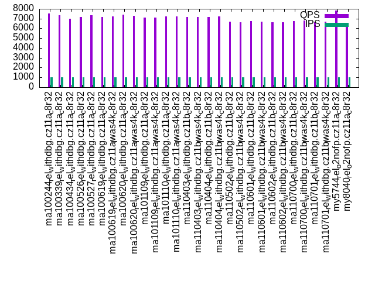

Introduction
This is a report for the insert benchmark with 20M docs and 1 client(s). It is generated by scripts (bash, awk, sed) and Tufte might not be impressed. An overview of the insert benchmark is here and a short update is here. Below, by DBMS, I mean DBMS+version.config. An example is my8020.c10b40 where my means MySQL, 8020 is version 8.0.20 and c10b40 is the name for the configuration file.
The test server has 8 AMD cores, 32G RAM and an NVMe SSD. It is described here as the ASUS PN53. The benchmark was run with 1 client and there were 1 or 3 connections per client (1 for queries or inserts without rate limits, 1+1 for rate limited inserts+deletes). It uses 1 table. It loads 20M rows per table without secondary indexes, creates 3 secondary indexes per table, then inserts 40m+10m rows per table with a delete per insert to avoid growing the table. It then does 6 read+write tests for 1800s each that do queries as fast as possible with 100,100,500,500,1000,1000 inserts/s and the same for deletes/s per client concurrent with the queries. The database is cached by InnoDB. Clients and the DBMS share one server. The per-database configs are in the per-database subdirectories here.
The tested DBMS are:
- ma100244_rel_withdbg.cz11a_c8r32 - MariaDB 10.2.44 with the my.cnf.cz11a_c8r32 config and rel_withdbg build
- ma100339_rel_withdbg.cz11a_c8r32 - MariaDB 10.3.39 with the my.cnf.cz11a_c8r32 config and rel_withdbg build
- ma100434_rel_withdbg.cz11a_c8r32 - MariaDB 10.4.34 with the my.cnf.cz11a_c8r32 config and rel_withdbg build
- ma100526_rel_withdbg.cz11a_c8r32 - MariaDB 10.5.26 with the my.cnf.cz11a_c8r32 config and rel_withdbg build
- ma100527_rel_withdbg.cz11a_c8r32 - MariaDB 10.5.27 with the my.cnf.cz11a_c8r32 config and rel_withdbg build
- ma100619_rel_withdbg.cz11a_c8r32 - MariaDB 10.6.19 with the my.cnf.cz11a_c8r32 config and rel_withdbg build
- ma100619_rel_withdbg.cz11a_lwas4k_c8r32 - MariaDB 10.6.19 with the my.cnf.cz11a_lwas4k_c8r32 config and rel_withdbg build
- ma100620_rel_withdbg.cz11a_c8r32 - MariaDB 10.6.20 with the my.cnf.cz11a_c8r32 config and rel_withdbg build
- ma100620_rel_withdbg.cz11a_lwas4k_c8r32 - MariaDB 10.6.20 with the my.cnf.cz11a_lwas4k_c8r32 config and rel_withdbg build
- ma101109_rel_withdbg.cz11a_c8r32 - MariaDB 10.11.9 with the my.cnf.cz11a_c8r32 config and rel_withdbg build
- ma101109_rel_withdbg.cz11a_lwas4k_c8r32 - MariaDB 10.11.9 with the my.cnf.cz11a_lwas4k_c8r32 config and rel_withdbg build
- ma101110_rel_withdbg.cz11a_c8r32 - MariaDB 10.11.10 with the my.cnf.cz11a_c8r32 config and rel_withdbg build
- ma101110_rel_withdbg.cz11a_lwas4k_c8r32 - MariaDB 10.11.10 with the my.cnf.cz11a_lwas4k_c8r32 config and rel_withdbg build
- ma110403_rel_withdbg.cz11b_c8r32 - MariaDB 11.4.3 with the my.cnf.cz11a_c8r32 config and rel_withdbg build
- ma110403_rel_withdbg.cz11b_lwas4k_c8r32 - MariaDB 11.4.3 with the my.cnf.cz11a_lwas4k_c8r32 config and rel_withdbg build
- ma110404_rel_withdbg.cz11b_c8r32 - MariaDB 11.4.4 with the my.cnf.cz11a_c8r32 config and rel_withdbg build
- ma110404_rel_withdbg.cz11b_lwas4k_c8r32 - MariaDB 11.4.4 with the my.cnf.cz11a_lwas4k_c8r32 config and rel_withdbg build
- ma110502_rel_withdbg.cz11b_c8r32 - MariaDB 11.5.2 with the my.cnf.cz11a_c8r32 config and rel_withdbg build
- ma110502_rel_withdbg.cz11b_lwas4k_c8r32 - MariaDB 11.5.2 with the my.cnf.cz11a_lwas4k_c8r32 config and rel_withdbg build
- ma110601_rel_withdbg.cz11b_c8r32 - MariaDB 11.6.1 with the my.cnf.cz11a_c8r32 config and rel_withdbg build
- ma110601_rel_withdbg.cz11b_lwas4k_c8r32 - MariaDB 11.6.1 with the my.cnf.cz11a_lwas4k_c8r32 config and rel_withdbg build
- ma110602_rel_withdbg.cz11b_c8r32 - MariaDB 11.6.2 with the my.cnf.cz11a_c8r32 config and rel_withdbg build
- ma110602_rel_withdbg.cz11b_lwas4k_c8r32 - MariaDB 11.6.2 with the my.cnf.cz11a_lwas4k_c8r32 config and rel_withdbg build
- ma110700_rel_withdbg.cz11b_c8r32 - MariaDB 11.7.0 with the my.cnf.cz11a_c8r32 config and rel_withdbg build
- ma110700_rel_withdbg.cz11b_lwas4k_c8r32 - MariaDB 11.7.0 with the my.cnf.cz11a_lwas4k_c8r32 config and rel_withdbg build
- ma110701_rel_withdbg.cz11b_c8r32 - MariaDB 11.7.1 with the my.cnf.cz11a_c8r32 config and rel_withdbg build
- ma110701_rel_withdbg.cz11b_lwas4k_c8r32 - MariaDB 11.7.1 with the my.cnf.cz11a_lwas4k_c8r32 config and rel_withdbg build
- my5744_rel_o2nofp.cz11a_c8r32 - MySQL 5.7.44 with the my.cnf.cz11a_c8r32 config and rel_o2nofp build
- my8040_rel_o2nofp.cz11a_c8r32 - MySQL 8.0.40 with the my.cnf.cz11a_c8r32 config and rel_withdbg build
Contents
- Summary
- l.i0: load without secondary indexes
- l.x: create secondary indexes
- l.i1: continue load after secondary indexes created with 50 inserts per transaction
- l.i2: continue load after secondary indexes created with 5 inserts per transaction
- qr100.L1: range queries with 100 insert/s per client
- qp100.L2: point queries with 100 insert/s per client
- qr500.L3: range queries with 500 insert/s per client
- qp500.L4: point queries with 500 insert/s per client
- qr1000.L5: range queries with 1000 insert/s per client
- qp1000.L6: point queries with 1000 insert/s per client
Summary
The numbers are inserts/s for l.i0, l.i1 and l.i2, indexed docs (or rows) /s for l.x and queries/s for qr100, qp100 thru qr1000, qp1000" The values are the average rate over the entire test for inserts (IPS) and queries (QPS). The range of values for IPS and QPS is split into 3 parts: bottom 25%, middle 50%, top 25%. Values in the bottom 25% have a red background, values in the top 25% have a green background and values in the middle have no color. A gray background is used for values that can be ignored because the DBMS did not sustain the target insert rate. Red backgrounds are not used when the minimum value is within 80% of the max value.
| dbms | l.i0 | l.x | l.i1 | l.i2 | qr100 | qp100 | qr500 | qp500 | qr1000 | qp1000 |
|---|---|---|---|---|---|---|---|---|---|---|
| ma100244_rel_withdbg.cz11a_c8r32 | 166667 | 219781 | 34042 | 19455 | 8960 | 7632 | 8956 | 7607 | 8847 | 7539 |
| ma100339_rel_withdbg.cz11a_c8r32 | 151515 | 217392 | 35180 | 19194 | 8818 | 7411 | 8713 | 7394 | 8726 | 7351 |
| ma100434_rel_withdbg.cz11a_c8r32 | 149254 | 219781 | 35492 | 19268 | 8257 | 7121 | 8294 | 7056 | 8130 | 6965 |
| ma100526_rel_withdbg.cz11a_c8r32 | 150376 | 192309 | 38910 | 20877 | 8327 | 7313 | 8345 | 7210 | 8313 | 7183 |
| ma100527_rel_withdbg.cz11a_c8r32 | 153846 | 198021 | 38986 | 19920 | 8482 | 7306 | 8404 | 7369 | 8403 | 7334 |
| ma100619_rel_withdbg.cz11a_c8r32 | 153846 | 194176 | 40486 | 24570 | 8335 | 7241 | 8289 | 7268 | 8279 | 7186 |
| ma100619_rel_withdbg.cz11a_lwas4k_c8r32 | 153846 | 194176 | 40282 | 24450 | 8292 | 7241 | 8259 | 7266 | 8277 | 7228 |
| ma100620_rel_withdbg.cz11a_c8r32 | 157480 | 196079 | 41710 | 26042 | 8535 | 7383 | 8513 | 7295 | 8503 | 7385 |
| ma100620_rel_withdbg.cz11a_lwas4k_c8r32 | 153846 | 194176 | 41580 | 26316 | 8495 | 7323 | 8516 | 7253 | 8471 | 7266 |
| ma101109_rel_withdbg.cz11a_c8r32 | 153846 | 188680 | 38462 | 22624 | 8294 | 7225 | 8281 | 7163 | 8339 | 7134 |
| ma101109_rel_withdbg.cz11a_lwas4k_c8r32 | 155039 | 188680 | 40120 | 24213 | 8460 | 7217 | 8383 | 7157 | 8331 | 7129 |
| ma101110_rel_withdbg.cz11a_c8r32 | 151515 | 190477 | 40080 | 23866 | 8556 | 7259 | 8420 | 7192 | 8426 | 7244 |
| ma101110_rel_withdbg.cz11a_lwas4k_c8r32 | 156250 | 190477 | 41237 | 25907 | 8350 | 7293 | 8374 | 7193 | 8308 | 7195 |
| ma110403_rel_withdbg.cz11b_c8r32 | 155039 | 185186 | 36068 | 21978 | 8426 | 7123 | 8290 | 7204 | 8344 | 7181 |
| ma110403_rel_withdbg.cz11b_lwas4k_c8r32 | 149254 | 183487 | 37771 | 23310 | 8244 | 7144 | 8184 | 7135 | 8274 | 7144 |
| ma110404_rel_withdbg.cz11b_c8r32 | 157480 | 194176 | 39331 | 23364 | 8429 | 7268 | 8457 | 7275 | 8349 | 7192 |
| ma110404_rel_withdbg.cz11b_lwas4k_c8r32 | 157480 | 190477 | 40241 | 25316 | 8435 | 7311 | 8475 | 7302 | 8452 | 7241 |
| ma110502_rel_withdbg.cz11b_c8r32 | 145985 | 188680 | 35619 | 21505 | 7901 | 6718 | 7952 | 6721 | 7967 | 6697 |
| ma110502_rel_withdbg.cz11b_lwas4k_c8r32 | 145985 | 186917 | 37209 | 23148 | 7951 | 6680 | 7912 | 6660 | 7903 | 6630 |
| ma110601_rel_withdbg.cz11b_c8r32 | 145985 | 188680 | 35367 | 21505 | 8038 | 6739 | 7998 | 6666 | 7908 | 6727 |
| ma110601_rel_withdbg.cz11b_lwas4k_c8r32 | 144928 | 188680 | 36934 | 23202 | 7988 | 6678 | 7887 | 6697 | 7964 | 6688 |
| ma110602_rel_withdbg.cz11b_c8r32 | 147059 | 188680 | 34305 | 22676 | 7816 | 6624 | 7897 | 6631 | 7920 | 6603 |
| ma110602_rel_withdbg.cz11b_lwas4k_c8r32 | 147059 | 190477 | 38388 | 24450 | 8039 | 6751 | 7992 | 6677 | 8027 | 6640 |
| ma110700_rel_withdbg.cz11b_c8r32 | 150376 | 194176 | 38498 | 22988 | 8131 | 6796 | 8142 | 6831 | 8059 | 6742 |
| ma110700_rel_withdbg.cz11b_lwas4k_c8r32 | 151515 | 192309 | 39565 | 25000 | 8168 | 6804 | 8120 | 6822 | 8127 | 6783 |
| ma110701_rel_withdbg.cz11b_c8r32 | 145985 | 188680 | 36866 | 22624 | 7967 | 6671 | 7934 | 6601 | 7954 | 6611 |
| ma110701_rel_withdbg.cz11b_lwas4k_c8r32 | 147059 | 186917 | 38910 | 24510 | 7945 | 6653 | 7944 | 6656 | 7944 | 6672 |
| my5744_rel_o2nofp.cz11a_c8r32 | 156250 | 222223 | 37879 | 23419 | 9415 | 7868 | 9381 | 7872 | 9341 | 7822 |
| my8040_rel_o2nofp.cz11a_c8r32 | 107527 | 370372 | 35026 | 18832 | 8157 | 6182 | 8232 | 6167 | 8148 | 6132 |
This table has relative throughput, throughput for the DBMS relative to the DBMS in the first line, using the absolute throughput from the previous table. Values less than 0.95 have a yellow background. Values greater than 1.05 have a blue background.
| dbms | l.i0 | l.x | l.i1 | l.i2 | qr100 | qp100 | qr500 | qp500 | qr1000 | qp1000 |
|---|---|---|---|---|---|---|---|---|---|---|
| ma100244_rel_withdbg.cz11a_c8r32 | 1.00 | 1.00 | 1.00 | 1.00 | 1.00 | 1.00 | 1.00 | 1.00 | 1.00 | 1.00 |
| ma100339_rel_withdbg.cz11a_c8r32 | 0.91 | 0.99 | 1.03 | 0.99 | 0.98 | 0.97 | 0.97 | 0.97 | 0.99 | 0.98 |
| ma100434_rel_withdbg.cz11a_c8r32 | 0.90 | 1.00 | 1.04 | 0.99 | 0.92 | 0.93 | 0.93 | 0.93 | 0.92 | 0.92 |
| ma100526_rel_withdbg.cz11a_c8r32 | 0.90 | 0.88 | 1.14 | 1.07 | 0.93 | 0.96 | 0.93 | 0.95 | 0.94 | 0.95 |
| ma100527_rel_withdbg.cz11a_c8r32 | 0.92 | 0.90 | 1.15 | 1.02 | 0.95 | 0.96 | 0.94 | 0.97 | 0.95 | 0.97 |
| ma100619_rel_withdbg.cz11a_c8r32 | 0.92 | 0.88 | 1.19 | 1.26 | 0.93 | 0.95 | 0.93 | 0.96 | 0.94 | 0.95 |
| ma100619_rel_withdbg.cz11a_lwas4k_c8r32 | 0.92 | 0.88 | 1.18 | 1.26 | 0.93 | 0.95 | 0.92 | 0.96 | 0.94 | 0.96 |
| ma100620_rel_withdbg.cz11a_c8r32 | 0.94 | 0.89 | 1.23 | 1.34 | 0.95 | 0.97 | 0.95 | 0.96 | 0.96 | 0.98 |
| ma100620_rel_withdbg.cz11a_lwas4k_c8r32 | 0.92 | 0.88 | 1.22 | 1.35 | 0.95 | 0.96 | 0.95 | 0.95 | 0.96 | 0.96 |
| ma101109_rel_withdbg.cz11a_c8r32 | 0.92 | 0.86 | 1.13 | 1.16 | 0.93 | 0.95 | 0.92 | 0.94 | 0.94 | 0.95 |
| ma101109_rel_withdbg.cz11a_lwas4k_c8r32 | 0.93 | 0.86 | 1.18 | 1.24 | 0.94 | 0.95 | 0.94 | 0.94 | 0.94 | 0.95 |
| ma101110_rel_withdbg.cz11a_c8r32 | 0.91 | 0.87 | 1.18 | 1.23 | 0.95 | 0.95 | 0.94 | 0.95 | 0.95 | 0.96 |
| ma101110_rel_withdbg.cz11a_lwas4k_c8r32 | 0.94 | 0.87 | 1.21 | 1.33 | 0.93 | 0.96 | 0.94 | 0.95 | 0.94 | 0.95 |
| ma110403_rel_withdbg.cz11b_c8r32 | 0.93 | 0.84 | 1.06 | 1.13 | 0.94 | 0.93 | 0.93 | 0.95 | 0.94 | 0.95 |
| ma110403_rel_withdbg.cz11b_lwas4k_c8r32 | 0.90 | 0.83 | 1.11 | 1.20 | 0.92 | 0.94 | 0.91 | 0.94 | 0.94 | 0.95 |
| ma110404_rel_withdbg.cz11b_c8r32 | 0.94 | 0.88 | 1.16 | 1.20 | 0.94 | 0.95 | 0.94 | 0.96 | 0.94 | 0.95 |
| ma110404_rel_withdbg.cz11b_lwas4k_c8r32 | 0.94 | 0.87 | 1.18 | 1.30 | 0.94 | 0.96 | 0.95 | 0.96 | 0.96 | 0.96 |
| ma110502_rel_withdbg.cz11b_c8r32 | 0.88 | 0.86 | 1.05 | 1.11 | 0.88 | 0.88 | 0.89 | 0.88 | 0.90 | 0.89 |
| ma110502_rel_withdbg.cz11b_lwas4k_c8r32 | 0.88 | 0.85 | 1.09 | 1.19 | 0.89 | 0.88 | 0.88 | 0.88 | 0.89 | 0.88 |
| ma110601_rel_withdbg.cz11b_c8r32 | 0.88 | 0.86 | 1.04 | 1.11 | 0.90 | 0.88 | 0.89 | 0.88 | 0.89 | 0.89 |
| ma110601_rel_withdbg.cz11b_lwas4k_c8r32 | 0.87 | 0.86 | 1.08 | 1.19 | 0.89 | 0.88 | 0.88 | 0.88 | 0.90 | 0.89 |
| ma110602_rel_withdbg.cz11b_c8r32 | 0.88 | 0.86 | 1.01 | 1.17 | 0.87 | 0.87 | 0.88 | 0.87 | 0.90 | 0.88 |
| ma110602_rel_withdbg.cz11b_lwas4k_c8r32 | 0.88 | 0.87 | 1.13 | 1.26 | 0.90 | 0.88 | 0.89 | 0.88 | 0.91 | 0.88 |
| ma110700_rel_withdbg.cz11b_c8r32 | 0.90 | 0.88 | 1.13 | 1.18 | 0.91 | 0.89 | 0.91 | 0.90 | 0.91 | 0.89 |
| ma110700_rel_withdbg.cz11b_lwas4k_c8r32 | 0.91 | 0.88 | 1.16 | 1.29 | 0.91 | 0.89 | 0.91 | 0.90 | 0.92 | 0.90 |
| ma110701_rel_withdbg.cz11b_c8r32 | 0.88 | 0.86 | 1.08 | 1.16 | 0.89 | 0.87 | 0.89 | 0.87 | 0.90 | 0.88 |
| ma110701_rel_withdbg.cz11b_lwas4k_c8r32 | 0.88 | 0.85 | 1.14 | 1.26 | 0.89 | 0.87 | 0.89 | 0.87 | 0.90 | 0.88 |
| my5744_rel_o2nofp.cz11a_c8r32 | 0.94 | 1.01 | 1.11 | 1.20 | 1.05 | 1.03 | 1.05 | 1.03 | 1.06 | 1.04 |
| my8040_rel_o2nofp.cz11a_c8r32 | 0.65 | 1.69 | 1.03 | 0.97 | 0.91 | 0.81 | 0.92 | 0.81 | 0.92 | 0.81 |
This lists the average rate of inserts/s for the tests that do inserts concurrent with queries. For such tests the query rate is listed in the table above. The read+write tests are setup so that the insert rate should match the target rate every second. Cells that are not at least 95% of the target have a red background to indicate a failure to satisfy the target.
| dbms | qr100.L1 | qp100.L2 | qr500.L3 | qp500.L4 | qr1000.L5 | qp1000.L6 |
|---|---|---|---|---|---|---|
| ma100244_rel_withdbg.cz11a_c8r32 | 100 | 100 | 499 | 499 | 999 | 999 |
| ma100339_rel_withdbg.cz11a_c8r32 | 100 | 100 | 499 | 499 | 999 | 999 |
| ma100434_rel_withdbg.cz11a_c8r32 | 100 | 100 | 499 | 499 | 999 | 999 |
| ma100526_rel_withdbg.cz11a_c8r32 | 100 | 100 | 499 | 499 | 999 | 999 |
| ma100527_rel_withdbg.cz11a_c8r32 | 100 | 100 | 499 | 499 | 999 | 999 |
| ma100619_rel_withdbg.cz11a_c8r32 | 100 | 100 | 499 | 499 | 999 | 999 |
| ma100619_rel_withdbg.cz11a_lwas4k_c8r32 | 100 | 100 | 499 | 499 | 999 | 999 |
| ma100620_rel_withdbg.cz11a_c8r32 | 100 | 100 | 499 | 499 | 998 | 999 |
| ma100620_rel_withdbg.cz11a_lwas4k_c8r32 | 100 | 100 | 499 | 499 | 999 | 999 |
| ma101109_rel_withdbg.cz11a_c8r32 | 100 | 100 | 499 | 499 | 999 | 999 |
| ma101109_rel_withdbg.cz11a_lwas4k_c8r32 | 100 | 100 | 499 | 499 | 999 | 999 |
| ma101110_rel_withdbg.cz11a_c8r32 | 100 | 100 | 499 | 499 | 999 | 999 |
| ma101110_rel_withdbg.cz11a_lwas4k_c8r32 | 100 | 100 | 499 | 499 | 999 | 999 |
| ma110403_rel_withdbg.cz11b_c8r32 | 100 | 100 | 499 | 499 | 999 | 999 |
| ma110403_rel_withdbg.cz11b_lwas4k_c8r32 | 100 | 100 | 499 | 499 | 999 | 999 |
| ma110404_rel_withdbg.cz11b_c8r32 | 100 | 100 | 499 | 499 | 999 | 999 |
| ma110404_rel_withdbg.cz11b_lwas4k_c8r32 | 100 | 100 | 499 | 499 | 998 | 999 |
| ma110502_rel_withdbg.cz11b_c8r32 | 100 | 100 | 499 | 499 | 999 | 999 |
| ma110502_rel_withdbg.cz11b_lwas4k_c8r32 | 100 | 100 | 499 | 499 | 999 | 999 |
| ma110601_rel_withdbg.cz11b_c8r32 | 100 | 100 | 499 | 499 | 999 | 999 |
| ma110601_rel_withdbg.cz11b_lwas4k_c8r32 | 100 | 100 | 499 | 499 | 999 | 999 |
| ma110602_rel_withdbg.cz11b_c8r32 | 100 | 100 | 499 | 499 | 999 | 999 |
| ma110602_rel_withdbg.cz11b_lwas4k_c8r32 | 100 | 100 | 499 | 499 | 999 | 999 |
| ma110700_rel_withdbg.cz11b_c8r32 | 100 | 100 | 499 | 499 | 999 | 999 |
| ma110700_rel_withdbg.cz11b_lwas4k_c8r32 | 100 | 100 | 499 | 499 | 999 | 999 |
| ma110701_rel_withdbg.cz11b_c8r32 | 100 | 100 | 499 | 499 | 999 | 999 |
| ma110701_rel_withdbg.cz11b_lwas4k_c8r32 | 100 | 100 | 499 | 499 | 999 | 999 |
| my5744_rel_o2nofp.cz11a_c8r32 | 100 | 100 | 499 | 499 | 999 | 999 |
| my8040_rel_o2nofp.cz11a_c8r32 | 100 | 100 | 499 | 499 | 999 | 999 |
| target | 100 | 100 | 500 | 500 | 1000 | 1000 |
l.i0
l.i0: load without secondary indexes. Graphs for performance per 1-second interval are here.
Average throughput:
Insert response time histogram: each cell has the percentage of responses that take <= the time in the header and max is the max response time in seconds. For the max column values in the top 25% of the range have a red background and in the bottom 25% of the range have a green background. The red background is not used when the min value is within 80% of the max value.
| dbms | 256us | 1ms | 4ms | 16ms | 64ms | 256ms | 1s | 4s | 16s | gt | max |
|---|---|---|---|---|---|---|---|---|---|---|---|
| ma100244_rel_withdbg.cz11a_c8r32 | 99.653 | 0.142 | 0.137 | 0.064 | 0.004 | 0.186 | |||||
| ma100339_rel_withdbg.cz11a_c8r32 | 99.601 | 0.193 | 0.130 | 0.072 | 0.004 | 0.210 | |||||
| ma100434_rel_withdbg.cz11a_c8r32 | 99.589 | 0.204 | 0.136 | 0.067 | 0.004 | 0.196 | |||||
| ma100526_rel_withdbg.cz11a_c8r32 | 99.491 | 0.191 | 0.131 | 0.184 | 0.004 | 0.202 | |||||
| ma100527_rel_withdbg.cz11a_c8r32 | 99.540 | 0.161 | 0.109 | 0.186 | 0.004 | 0.233 | |||||
| ma100619_rel_withdbg.cz11a_c8r32 | 99.612 | 0.190 | 0.051 | 0.143 | 0.004 | 0.175 | |||||
| ma100619_rel_withdbg.cz11a_lwas4k_c8r32 | 99.608 | 0.194 | 0.048 | 0.146 | 0.004 | 0.183 | |||||
| ma100620_rel_withdbg.cz11a_c8r32 | 99.693 | 0.109 | 0.053 | 0.141 | 0.004 | 0.255 | |||||
| ma100620_rel_withdbg.cz11a_lwas4k_c8r32 | 99.704 | 0.098 | 0.037 | 0.157 | 0.005 | 0.246 | |||||
| ma101109_rel_withdbg.cz11a_c8r32 | 99.612 | 0.190 | 0.052 | 0.142 | 0.004 | 0.182 | |||||
| ma101109_rel_withdbg.cz11a_lwas4k_c8r32 | 99.585 | 0.217 | 0.050 | 0.144 | 0.004 | 0.174 | |||||
| ma101110_rel_withdbg.cz11a_c8r32 | 99.694 | 0.107 | 0.052 | 0.143 | 0.004 | 0.245 | |||||
| ma101110_rel_withdbg.cz11a_lwas4k_c8r32 | 99.699 | 0.103 | 0.053 | 0.141 | 0.003 | 0.001 | 0.269 | ||||
| ma110403_rel_withdbg.cz11b_c8r32 | 99.606 | 0.196 | 0.050 | 0.144 | 0.004 | 0.207 | |||||
| ma110403_rel_withdbg.cz11b_lwas4k_c8r32 | 99.583 | 0.218 | 0.051 | 0.144 | 0.004 | 0.160 | |||||
| ma110404_rel_withdbg.cz11b_c8r32 | 99.679 | 0.123 | 0.067 | 0.127 | 0.004 | 0.210 | |||||
| ma110404_rel_withdbg.cz11b_lwas4k_c8r32 | 99.676 | 0.126 | 0.080 | 0.114 | 0.004 | 0.220 | |||||
| ma110502_rel_withdbg.cz11b_c8r32 | 99.593 | 0.210 | 0.052 | 0.143 | 0.004 | 0.179 | |||||
| ma110502_rel_withdbg.cz11b_lwas4k_c8r32 | 99.614 | 0.189 | 0.049 | 0.145 | 0.004 | 0.193 | |||||
| ma110601_rel_withdbg.cz11b_c8r32 | 99.593 | 0.209 | 0.052 | 0.142 | 0.004 | 0.135 | |||||
| ma110601_rel_withdbg.cz11b_lwas4k_c8r32 | 99.592 | 0.210 | 0.052 | 0.143 | 0.004 | 0.174 | |||||
| ma110602_rel_withdbg.cz11b_c8r32 | 99.692 | 0.110 | 0.064 | 0.130 | 0.005 | 0.229 | |||||
| ma110602_rel_withdbg.cz11b_lwas4k_c8r32 | 99.686 | 0.115 | 0.046 | 0.148 | 0.003 | 0.001 | 0.259 | ||||
| ma110700_rel_withdbg.cz11b_c8r32 | 99.683 | 0.118 | 0.071 | 0.124 | 0.004 | 0.224 | |||||
| ma110700_rel_withdbg.cz11b_lwas4k_c8r32 | 99.675 | 0.125 | 0.065 | 0.131 | 0.003 | 0.001 | 0.260 | ||||
| ma110701_rel_withdbg.cz11b_c8r32 | 99.686 | 0.117 | 0.049 | 0.145 | 0.004 | 0.245 | |||||
| ma110701_rel_withdbg.cz11b_lwas4k_c8r32 | 99.683 | 0.119 | 0.052 | 0.143 | 0.004 | 0.254 | |||||
| my5744_rel_o2nofp.cz11a_c8r32 | 99.683 | 0.117 | 0.068 | 0.131 | 0.002 | 0.102 | |||||
| my8040_rel_o2nofp.cz11a_c8r32 | 99.481 | 0.308 | 0.071 | 0.138 | 0.002 | 0.156 |
Performance metrics for the DBMS listed above. Some are normalized by throughput, others are not. Legend for results is here.
ips qps rps rmbps wps wmbps rpq rkbpq wpi wkbpi csps cpups cspq cpupq dbgb1 dbgb2 rss maxop p50 p99 tag 166667 0 1 0.0 933.4 55.4 0.000 0.000 0.006 0.341 18158 21.0 0.109 10 1.3 32.1 2.4 0.186 170913 98628 ma100244_rel_withdbg.cz11a_c8r32 151515 0 1 0.0 907.0 54.3 0.000 0.000 0.006 0.367 48198 28.2 0.318 15 1.3 32.2 2.3 0.210 153038 120969 ma100339_rel_withdbg.cz11a_c8r32 149254 0 1 0.0 917.0 54.3 0.000 0.000 0.006 0.372 48165 28.2 0.323 15 1.3 32.2 NA 0.196 152679 104788 ma100434_rel_withdbg.cz11a_c8r32 150376 0 0 0.0 1261.0 49.5 0.000 0.000 0.008 0.337 65985 24.6 0.439 13 1.3 32.2 2.1 0.202 153935 111779 ma100526_rel_withdbg.cz11a_c8r32 153846 0 0 0.0 1275.5 49.9 0.000 0.000 0.008 0.332 65673 25.0 0.427 13 1.3 32.2 2.1 0.233 102797 0 ma100527_rel_withdbg.cz11a_c8r32 153846 0 0 0.0 276.5 31.9 0.000 0.000 0.002 0.213 16823 22.8 0.109 12 1.3 32.2 1.8 0.175 155830 91517 ma100619_rel_withdbg.cz11a_c8r32 153846 0 0 0.0 276.3 31.9 0.000 0.000 0.002 0.212 16821 22.7 0.109 12 1.3 32.2 1.8 0.183 156229 92301 ma100619_rel_withdbg.cz11a_lwas4k_c8r32 157480 0 0 0.0 284.0 32.8 0.000 0.000 0.002 0.213 16421 22.9 0.104 12 1.3 32.2 1.8 0.255 160439 117273 ma100620_rel_withdbg.cz11a_c8r32 153846 0 0 0.0 281.6 32.5 0.000 0.000 0.002 0.216 16105 22.7 0.105 12 1.3 32.2 1.8 0.246 158626 75360 ma100620_rel_withdbg.cz11a_lwas4k_c8r32 153846 0 0 0.0 286.6 33.2 0.000 0.000 0.002 0.221 16872 23.0 0.110 12 1.3 32.2 1.8 0.182 156227 95798 ma101109_rel_withdbg.cz11a_c8r32 155039 0 0 0.0 293.1 33.9 0.000 0.000 0.002 0.224 17140 22.9 0.111 12 1.3 32.2 1.8 0.174 156728 122231 ma101109_rel_withdbg.cz11a_lwas4k_c8r32 151515 0 0 0.0 284.3 32.9 0.000 0.000 0.002 0.222 15935 22.9 0.105 12 1.3 32.2 1.8 0.245 155346 91961 ma101110_rel_withdbg.cz11a_c8r32 156250 0 0 0.0 293.5 33.9 0.000 0.000 0.002 0.222 16280 23.0 0.104 12 1.3 32.2 1.8 0.269 159223 116774 ma101110_rel_withdbg.cz11a_lwas4k_c8r32 155039 0 0 0.0 293.3 34.0 0.000 0.000 0.002 0.224 17538 23.0 0.113 12 1.3 32.2 1.8 0.207 156729 97495 ma110403_rel_withdbg.cz11b_c8r32 149254 0 0 0.0 282.3 32.7 0.000 0.000 0.002 0.225 16923 22.9 0.113 12 1.3 32.2 1.8 0.160 151334 92301 ma110403_rel_withdbg.cz11b_lwas4k_c8r32 157480 0 0 0.0 295.5 34.1 0.000 0.000 0.002 0.222 16966 23.3 0.108 12 1.3 32.2 1.8 0.210 160940 116147 ma110404_rel_withdbg.cz11b_c8r32 157480 0 0 0.0 294.2 34.0 0.000 0.000 0.002 0.221 16916 23.3 0.107 12 1.3 32.2 1.8 0.220 160125 116127 ma110404_rel_withdbg.cz11b_lwas4k_c8r32 145985 0 0 0.0 274.6 31.8 0.000 0.000 0.002 0.223 16878 22.8 0.116 12 1.3 32.2 1.8 0.179 148990 91400 ma110502_rel_withdbg.cz11b_c8r32 145985 0 0 0.0 273.5 31.7 0.000 0.000 0.002 0.222 16595 22.7 0.114 12 1.3 32.2 1.8 0.193 147797 87208 ma110502_rel_withdbg.cz11b_lwas4k_c8r32 145985 0 0 0.0 274.8 31.8 0.000 0.000 0.002 0.223 16641 22.7 0.114 12 1.3 32.2 1.8 0.135 147739 105989 ma110601_rel_withdbg.cz11b_c8r32 144928 0 0 0.0 272.3 31.5 0.000 0.000 0.002 0.223 16454 22.7 0.114 13 1.3 32.2 1.7 0.174 146296 119869 ma110601_rel_withdbg.cz11b_lwas4k_c8r32 147059 0 0 0.0 272.4 31.6 0.000 0.000 0.002 0.220 15891 22.6 0.108 12 1.3 32.2 1.8 0.229 148752 112976 ma110602_rel_withdbg.cz11b_c8r32 147059 0 0 0.0 273.4 31.7 0.000 0.000 0.002 0.221 15912 22.4 0.108 12 1.3 32.2 1.8 0.259 149636 93649 ma110602_rel_withdbg.cz11b_lwas4k_c8r32 150376 0 0 0.0 281.6 32.6 0.000 0.000 0.002 0.222 16176 22.8 0.108 12 1.3 32.2 1.8 0.224 153034 113080 ma110700_rel_withdbg.cz11b_c8r32 151515 0 0 0.0 282.8 32.8 0.000 0.000 0.002 0.221 16354 22.9 0.108 12 1.3 32.2 1.8 0.260 154330 113030 ma110700_rel_withdbg.cz11b_lwas4k_c8r32 145985 0 0 0.0 271.6 31.5 0.000 0.000 0.002 0.221 15720 22.3 0.108 12 1.3 32.2 1.8 0.245 148550 111579 ma110701_rel_withdbg.cz11b_c8r32 147059 0 0 0.0 272.8 31.6 0.000 0.000 0.002 0.220 15863 22.3 0.108 12 1.3 32.2 1.8 0.254 148937 112376 ma110701_rel_withdbg.cz11b_lwas4k_c8r32 156250 0 0 0.0 436.5 38.6 0.000 0.000 0.003 0.253 14887 21.5 0.095 11 1.3 31.8 3.2 0.102 157028 110280 my5744_rel_o2nofp.cz11a_c8r32 107527 0 0 0.0 366.4 29.1 0.000 0.000 0.003 0.277 11615 18.3 0.108 14 1.3 31.9 3.5 0.156 108181 90602 my8040_rel_o2nofp.cz11a_c8r32
l.x
l.x: create secondary indexes.
Average throughput:
Performance metrics for the DBMS listed above. Some are normalized by throughput, others are not. Legend for results is here.
ips qps rps rmbps wps wmbps rpq rkbpq wpi wkbpi csps cpups cspq cpupq dbgb1 dbgb2 rss maxop p50 p99 tag 219781 0 0 0.0 2091.4 180.3 0.000 0.000 0.010 0.840 10803 12.9 0.049 5 3.0 33.9 3.9 0.002 NA NA ma100244_rel_withdbg.cz11a_c8r32 217392 0 0 0.0 2149.6 181.1 0.000 0.000 0.010 0.853 10629 13.1 0.049 5 3.0 33.9 3.8 0.001 NA NA ma100339_rel_withdbg.cz11a_c8r32 219781 0 0 0.0 2091.1 180.5 0.000 0.000 0.010 0.841 10977 12.9 0.050 5 3.0 33.8 NA 0.001 NA NA ma100434_rel_withdbg.cz11a_c8r32 192309 0 0 0.0 1135.7 140.3 0.000 0.000 0.006 0.747 653 12.7 0.003 5 3.0 33.8 3.2 0.001 NA NA ma100526_rel_withdbg.cz11a_c8r32 198021 0 0 0.0 1155.8 142.6 0.000 0.000 0.006 0.738 1025 13.1 0.005 5 3.0 33.8 3.3 0.002 NA NA ma100527_rel_withdbg.cz11a_c8r32 194176 0 0 0.0 2520.8 162.3 0.000 0.000 0.013 0.856 8024 13.3 0.041 5 2.8 33.6 2.9 0.001 NA NA ma100619_rel_withdbg.cz11a_c8r32 194176 0 0 0.0 2527.7 163.2 0.000 0.000 0.013 0.860 8140 13.1 0.042 5 2.8 33.6 2.9 0.001 NA NA ma100619_rel_withdbg.cz11a_lwas4k_c8r32 196079 0 0 0.0 2528.4 163.2 0.000 0.000 0.013 0.852 5732 13.5 0.029 6 2.8 33.6 2.9 0.001 NA NA ma100620_rel_withdbg.cz11a_c8r32 194176 0 0 0.0 2530.4 163.3 0.000 0.000 0.013 0.861 5648 13.5 0.029 6 2.8 33.6 2.9 0.002 NA NA ma100620_rel_withdbg.cz11a_lwas4k_c8r32 188680 0 0 0.0 2413.8 156.1 0.000 0.000 0.013 0.847 7464 12.6 0.040 5 2.8 33.6 2.9 0.001 NA NA ma101109_rel_withdbg.cz11a_c8r32 188680 0 0 0.0 2412.8 155.9 0.000 0.000 0.013 0.846 7453 12.6 0.040 5 2.8 33.6 2.9 0.001 NA NA ma101109_rel_withdbg.cz11a_lwas4k_c8r32 190477 0 0 0.0 2506.9 160.7 0.000 0.000 0.013 0.864 5564 13.4 0.029 6 2.8 33.6 2.9 0.001 NA NA ma101110_rel_withdbg.cz11a_c8r32 190477 0 0 0.0 2510.6 161.0 0.000 0.000 0.013 0.866 5584 13.4 0.029 6 2.8 33.6 2.9 0.001 NA NA ma101110_rel_withdbg.cz11a_lwas4k_c8r32 185186 0 0 0.0 2402.9 154.7 0.000 0.000 0.013 0.856 7559 12.7 0.041 5 2.8 33.6 2.9 0.001 NA NA ma110403_rel_withdbg.cz11b_c8r32 183487 0 0 0.0 2398.1 154.2 0.000 0.000 0.013 0.861 7497 12.5 0.041 5 2.8 33.6 2.9 0.001 NA NA ma110403_rel_withdbg.cz11b_lwas4k_c8r32 194176 0 0 0.0 2516.7 161.8 0.000 0.000 0.013 0.853 5755 13.4 0.030 6 2.8 33.6 2.9 0.001 NA NA ma110404_rel_withdbg.cz11b_c8r32 190477 0 0 0.0 2514.1 161.6 0.000 0.000 0.013 0.869 5638 13.3 0.030 6 2.8 33.6 2.9 0.001 NA NA ma110404_rel_withdbg.cz11b_lwas4k_c8r32 188680 0 0 0.0 2415.5 156.2 0.000 0.000 0.013 0.848 7548 12.6 0.040 5 2.8 33.6 3.0 0.001 NA NA ma110502_rel_withdbg.cz11b_c8r32 186917 0 0 0.0 2414.6 156.1 0.000 0.000 0.013 0.855 7446 12.6 0.040 5 2.8 33.6 3.0 0.001 NA NA ma110502_rel_withdbg.cz11b_lwas4k_c8r32 188680 0 0 0.0 2415.6 156.2 0.000 0.000 0.013 0.848 7534 12.6 0.040 5 2.8 33.6 3.0 0.001 NA NA ma110601_rel_withdbg.cz11b_c8r32 188680 0 0 0.0 2416.0 156.2 0.000 0.000 0.013 0.848 7541 12.6 0.040 5 2.8 33.6 3.0 0.002 NA NA ma110601_rel_withdbg.cz11b_lwas4k_c8r32 188680 0 0 0.0 2421.4 156.9 0.000 0.000 0.013 0.852 5245 12.5 0.028 5 2.8 33.6 3.0 0.001 NA NA ma110602_rel_withdbg.cz11b_c8r32 190477 0 0 0.0 2506.0 160.6 0.000 0.000 0.013 0.863 5419 13.0 0.028 5 2.8 33.6 3.0 0.001 NA NA ma110602_rel_withdbg.cz11b_lwas4k_c8r32 194176 0 0 0.0 2519.2 162.1 0.000 0.000 0.013 0.855 5425 13.5 0.028 6 2.8 33.6 3.0 0.002 NA NA ma110700_rel_withdbg.cz11b_c8r32 192309 0 0 0.0 2514.5 161.6 0.000 0.000 0.013 0.860 5290 13.4 0.028 6 2.8 33.6 3.0 0.002 NA NA ma110700_rel_withdbg.cz11b_lwas4k_c8r32 188680 0 0 0.0 2416.2 156.3 0.000 0.000 0.013 0.849 5273 12.5 0.028 5 2.8 33.6 3.0 0.002 NA NA ma110701_rel_withdbg.cz11b_c8r32 186917 0 0 0.0 2413.7 156.0 0.000 0.000 0.013 0.855 5030 12.4 0.027 5 2.8 33.6 3.0 0.001 NA NA ma110701_rel_withdbg.cz11b_lwas4k_c8r32 222223 0 0 0.0 3517.5 211.8 0.000 0.000 0.016 0.976 10802 13.8 0.049 5 3.0 33.6 3.9 0.001 NA NA my5744_rel_o2nofp.cz11a_c8r32 370372 0 1 0.0 5998.2 404.7 0.000 0.000 0.016 1.119 19566 41.5 0.053 9 3.0 33.6 3.6 0.002 NA NA my8040_rel_o2nofp.cz11a_c8r32
l.i1
l.i1: continue load after secondary indexes created with 50 inserts per transaction. Graphs for performance per 1-second interval are here.
Average throughput:
Insert response time histogram: each cell has the percentage of responses that take <= the time in the header and max is the max response time in seconds. For the max column values in the top 25% of the range have a red background and in the bottom 25% of the range have a green background. The red background is not used when the min value is within 80% of the max value.
| dbms | 256us | 1ms | 4ms | 16ms | 64ms | 256ms | 1s | 4s | 16s | gt | max |
|---|---|---|---|---|---|---|---|---|---|---|---|
| ma100244_rel_withdbg.cz11a_c8r32 | 6.377 | 91.776 | 1.663 | 0.180 | 0.003 | 0.116 | |||||
| ma100339_rel_withdbg.cz11a_c8r32 | 3.186 | 95.074 | 1.563 | 0.175 | 0.002 | 0.142 | |||||
| ma100434_rel_withdbg.cz11a_c8r32 | 2.503 | 95.841 | 1.497 | 0.157 | 0.002 | 0.124 | |||||
| ma100526_rel_withdbg.cz11a_c8r32 | 16.022 | 82.162 | 1.701 | 0.111 | 0.003 | 0.001 | 0.385 | ||||
| ma100527_rel_withdbg.cz11a_c8r32 | 25.629 | 72.242 | 1.975 | 0.150 | 0.003 | 0.001 | 0.341 | ||||
| ma100619_rel_withdbg.cz11a_c8r32 | 18.389 | 81.014 | 0.501 | 0.094 | 0.002 | 0.118 | |||||
| ma100619_rel_withdbg.cz11a_lwas4k_c8r32 | 17.743 | 81.648 | 0.509 | 0.097 | 0.003 | 0.113 | |||||
| ma100620_rel_withdbg.cz11a_c8r32 | 27.128 | 72.271 | 0.498 | 0.099 | 0.004 | 0.211 | |||||
| ma100620_rel_withdbg.cz11a_lwas4k_c8r32 | 26.222 | 73.171 | 0.500 | 0.103 | 0.003 | 0.196 | |||||
| ma101109_rel_withdbg.cz11a_c8r32 | 8.564 | 90.610 | 0.726 | 0.097 | 0.003 | nonzero | 0.314 | ||||
| ma101109_rel_withdbg.cz11a_lwas4k_c8r32 | 17.855 | 81.462 | 0.583 | 0.097 | 0.004 | nonzero | 0.301 | ||||
| ma101110_rel_withdbg.cz11a_c8r32 | 15.703 | 83.660 | 0.552 | 0.082 | 0.003 | 0.094 | |||||
| ma101110_rel_withdbg.cz11a_lwas4k_c8r32 | 23.911 | 75.426 | 0.564 | 0.095 | 0.003 | 0.194 | |||||
| ma110403_rel_withdbg.cz11b_c8r32 | 8.840 | 89.936 | 0.850 | 0.366 | 0.009 | nonzero | 0.271 | ||||
| ma110403_rel_withdbg.cz11b_lwas4k_c8r32 | 19.016 | 79.899 | 0.728 | 0.350 | 0.008 | nonzero | 0.301 | ||||
| ma110404_rel_withdbg.cz11b_c8r32 | 18.280 | 80.800 | 0.753 | 0.162 | 0.004 | 0.228 | |||||
| ma110404_rel_withdbg.cz11b_lwas4k_c8r32 | 25.093 | 73.984 | 0.755 | 0.164 | 0.003 | 0.185 | |||||
| ma110502_rel_withdbg.cz11b_c8r32 | 5.221 | 93.568 | 0.848 | 0.353 | 0.010 | nonzero | 0.271 | ||||
| ma110502_rel_withdbg.cz11b_lwas4k_c8r32 | 13.912 | 85.008 | 0.709 | 0.361 | 0.009 | nonzero | 0.307 | ||||
| ma110601_rel_withdbg.cz11b_c8r32 | 4.236 | 94.552 | 0.838 | 0.365 | 0.009 | nonzero | 0.311 | ||||
| ma110601_rel_withdbg.cz11b_lwas4k_c8r32 | 12.490 | 86.415 | 0.719 | 0.367 | 0.009 | nonzero | 0.269 | ||||
| ma110602_rel_withdbg.cz11b_c8r32 | 10.115 | 88.782 | 0.554 | 0.505 | 0.042 | 0.002 | 0.643 | ||||
| ma110602_rel_withdbg.cz11b_lwas4k_c8r32 | 16.813 | 82.206 | 0.737 | 0.238 | 0.007 | 0.208 | |||||
| ma110700_rel_withdbg.cz11b_c8r32 | 12.457 | 86.623 | 0.756 | 0.161 | 0.003 | nonzero | 0.273 | ||||
| ma110700_rel_withdbg.cz11b_lwas4k_c8r32 | 20.356 | 78.702 | 0.768 | 0.170 | 0.004 | 0.120 | |||||
| ma110701_rel_withdbg.cz11b_c8r32 | 9.263 | 89.710 | 0.746 | 0.273 | 0.008 | nonzero | 0.267 | ||||
| ma110701_rel_withdbg.cz11b_lwas4k_c8r32 | 18.574 | 80.471 | 0.734 | 0.215 | 0.007 | 0.215 | |||||
| my5744_rel_o2nofp.cz11a_c8r32 | 14.157 | 85.213 | 0.540 | 0.086 | 0.003 | 0.156 | |||||
| my8040_rel_o2nofp.cz11a_c8r32 | 99.521 | 0.390 | 0.084 | 0.005 | nonzero | 0.368 |
Delete response time histogram: each cell has the percentage of responses that take <= the time in the header and max is the max response time in seconds. For the max column values in the top 25% of the range have a red background and in the bottom 25% of the range have a green background. The red background is not used when the min value is within 80% of the max value.
| dbms | 256us | 1ms | 4ms | 16ms | 64ms | 256ms | 1s | 4s | 16s | gt | max |
|---|---|---|---|---|---|---|---|---|---|---|---|
| ma100244_rel_withdbg.cz11a_c8r32 | 71.326 | 27.604 | 0.977 | 0.091 | 0.002 | 0.116 | |||||
| ma100339_rel_withdbg.cz11a_c8r32 | 85.340 | 13.682 | 0.885 | 0.092 | 0.001 | 0.092 | |||||
| ma100434_rel_withdbg.cz11a_c8r32 | 86.388 | 12.720 | 0.812 | 0.079 | 0.001 | 0.107 | |||||
| ma100526_rel_withdbg.cz11a_c8r32 | 95.743 | 2.917 | 1.267 | 0.069 | 0.003 | nonzero | 0.259 | ||||
| ma100527_rel_withdbg.cz11a_c8r32 | 96.030 | 2.358 | 1.511 | 0.097 | 0.003 | nonzero | 0.341 | ||||
| ma100619_rel_withdbg.cz11a_c8r32 | 89.487 | 10.049 | 0.385 | 0.077 | 0.001 | 0.118 | |||||
| ma100619_rel_withdbg.cz11a_lwas4k_c8r32 | 88.842 | 10.687 | 0.388 | 0.082 | 0.002 | 0.094 | |||||
| ma100620_rel_withdbg.cz11a_c8r32 | 90.464 | 9.063 | 0.388 | 0.082 | 0.003 | 0.149 | |||||
| ma100620_rel_withdbg.cz11a_lwas4k_c8r32 | 90.315 | 9.215 | 0.383 | 0.084 | 0.003 | 0.193 | |||||
| ma101109_rel_withdbg.cz11a_c8r32 | 83.795 | 15.545 | 0.576 | 0.082 | 0.002 | nonzero | 0.313 | ||||
| ma101109_rel_withdbg.cz11a_lwas4k_c8r32 | 89.604 | 9.857 | 0.455 | 0.081 | 0.003 | nonzero | 0.300 | ||||
| ma101110_rel_withdbg.cz11a_c8r32 | 87.935 | 11.573 | 0.422 | 0.068 | 0.002 | 0.090 | |||||
| ma101110_rel_withdbg.cz11a_lwas4k_c8r32 | 90.576 | 8.917 | 0.426 | 0.079 | 0.003 | 0.189 | |||||
| ma110403_rel_withdbg.cz11b_c8r32 | 77.363 | 21.591 | 0.712 | 0.326 | 0.008 | nonzero | 0.270 | ||||
| ma110403_rel_withdbg.cz11b_lwas4k_c8r32 | 84.898 | 14.181 | 0.603 | 0.312 | 0.007 | nonzero | 0.286 | ||||
| ma110404_rel_withdbg.cz11b_c8r32 | 83.884 | 15.332 | 0.636 | 0.144 | 0.004 | 0.228 | |||||
| ma110404_rel_withdbg.cz11b_lwas4k_c8r32 | 87.182 | 12.022 | 0.642 | 0.150 | 0.003 | 0.181 | |||||
| ma110502_rel_withdbg.cz11b_c8r32 | 75.601 | 23.361 | 0.714 | 0.315 | 0.008 | 0.179 | |||||
| ma110502_rel_withdbg.cz11b_lwas4k_c8r32 | 84.251 | 14.827 | 0.593 | 0.321 | 0.008 | nonzero | 0.307 | ||||
| ma110601_rel_withdbg.cz11b_c8r32 | 73.533 | 25.429 | 0.711 | 0.320 | 0.007 | nonzero | 0.311 | ||||
| ma110601_rel_withdbg.cz11b_lwas4k_c8r32 | 83.010 | 16.045 | 0.607 | 0.330 | 0.007 | nonzero | 0.266 | ||||
| ma110602_rel_withdbg.cz11b_c8r32 | 79.385 | 19.666 | 0.462 | 0.450 | 0.035 | 0.002 | 0.642 | ||||
| ma110602_rel_withdbg.cz11b_lwas4k_c8r32 | 84.922 | 14.256 | 0.604 | 0.212 | 0.006 | 0.150 | |||||
| ma110700_rel_withdbg.cz11b_c8r32 | 81.463 | 17.770 | 0.625 | 0.139 | 0.003 | nonzero | 0.272 | ||||
| ma110700_rel_withdbg.cz11b_lwas4k_c8r32 | 85.748 | 13.473 | 0.624 | 0.151 | 0.003 | 0.142 | |||||
| ma110701_rel_withdbg.cz11b_c8r32 | 79.525 | 19.603 | 0.626 | 0.239 | 0.007 | nonzero | 0.266 | ||||
| ma110701_rel_withdbg.cz11b_lwas4k_c8r32 | 85.497 | 13.696 | 0.613 | 0.188 | 0.005 | 0.201 | |||||
| my5744_rel_o2nofp.cz11a_c8r32 | 70.721 | 29.041 | 0.201 | 0.034 | 0.002 | 0.156 | |||||
| my8040_rel_o2nofp.cz11a_c8r32 | 76.722 | 23.135 | 0.110 | 0.030 | 0.003 | nonzero | 0.312 |
Performance metrics for the DBMS listed above. Some are normalized by throughput, others are not. Legend for results is here.
ips qps rps rmbps wps wmbps rpq rkbpq wpi wkbpi csps cpups cspq cpupq dbgb1 dbgb2 rss maxop p50 p99 tag 34042 0 0 0.0 7729.5 250.8 0.000 0.000 0.227 7.545 51615 45.8 1.516 108 4.1 35.0 5.3 0.116 35071 13286 ma100244_rel_withdbg.cz11a_c8r32 35180 0 0 0.0 7112.1 235.7 0.000 0.000 0.202 6.861 59782 44.1 1.699 100 4.1 35.0 5.3 0.142 36061 12137 ma100339_rel_withdbg.cz11a_c8r32 35492 0 0 0.0 7105.8 235.7 0.000 0.000 0.200 6.800 58911 44.3 1.660 100 4.1 35.0 NA 0.124 36511 13390 ma100434_rel_withdbg.cz11a_c8r32 38910 0 0 0.0 7852.6 247.8 0.000 0.000 0.202 6.521 66275 34.2 1.703 70 4.5 36.5 6.4 0.385 39757 10589 ma100526_rel_withdbg.cz11a_c8r32 38986 0 0 0.0 7820.9 245.9 0.000 0.000 0.201 6.458 48148 33.9 1.235 70 4.5 36.5 6.5 0.341 39161 21029 ma100527_rel_withdbg.cz11a_c8r32 40486 0 0 0.0 2497.8 103.0 0.000 0.000 0.062 2.606 31243 33.1 0.772 65 3.8 34.7 4.5 0.118 42305 19185 ma100619_rel_withdbg.cz11a_c8r32 40282 0 0 0.0 2487.0 102.5 0.000 0.000 0.062 2.606 30975 33.1 0.769 66 3.8 34.7 4.5 0.113 42005 18730 ma100619_rel_withdbg.cz11a_lwas4k_c8r32 41710 0 0 0.0 2586.8 106.5 0.000 0.000 0.062 2.613 28516 33.3 0.684 64 3.9 34.8 4.5 0.211 43106 18482 ma100620_rel_withdbg.cz11a_c8r32 41580 0 0 0.0 2573.1 105.9 0.000 0.000 0.062 2.608 28108 33.2 0.676 64 3.9 34.8 4.5 0.196 43157 18232 ma100620_rel_withdbg.cz11a_lwas4k_c8r32 38462 0 618 2.4 2423.5 99.6 0.016 0.064 0.063 2.652 31200 31.8 0.811 66 3.8 34.7 4.5 0.314 40168 17830 ma101109_rel_withdbg.cz11a_c8r32 40120 0 0 0.0 2530.0 103.9 0.000 0.000 0.063 2.651 30921 33.0 0.771 66 3.8 34.7 4.5 0.301 41955 16682 ma101109_rel_withdbg.cz11a_lwas4k_c8r32 40080 0 607 2.4 2501.1 103.4 0.015 0.061 0.062 2.641 28776 32.4 0.718 65 3.9 34.8 4.5 0.094 41508 18432 ma101110_rel_withdbg.cz11a_c8r32 41237 0 0 0.0 2594.6 106.8 0.000 0.000 0.063 2.653 28009 33.2 0.679 64 3.9 34.8 4.6 0.194 42608 18731 ma101110_rel_withdbg.cz11a_lwas4k_c8r32 36068 0 636 2.5 2310.9 94.0 0.018 0.070 0.064 2.668 29488 30.8 0.818 68 3.8 34.7 4.5 0.271 39121 18830 ma110403_rel_withdbg.cz11b_c8r32 37771 0 0 0.0 2398.3 97.6 0.000 0.000 0.063 2.646 28571 31.8 0.756 67 3.8 34.7 4.5 0.301 39806 18487 ma110403_rel_withdbg.cz11b_lwas4k_c8r32 39331 0 675 2.6 2509.0 101.9 0.017 0.069 0.064 2.654 27004 32.5 0.687 66 3.9 34.7 4.5 0.228 41112 17732 ma110404_rel_withdbg.cz11b_c8r32 40241 0 0 0.0 2560.6 104.2 0.000 0.000 0.064 2.652 26189 33.3 0.651 66 3.9 34.7 4.5 0.185 41658 18482 ma110404_rel_withdbg.cz11b_lwas4k_c8r32 35619 0 606 2.4 2274.1 92.6 0.017 0.068 0.064 2.661 29441 30.6 0.827 69 3.8 34.7 4.5 0.271 38419 18580 ma110502_rel_withdbg.cz11b_c8r32 37209 0 0 0.0 2360.8 96.1 0.000 0.000 0.063 2.644 28449 31.7 0.765 68 3.8 34.7 4.5 0.307 39406 19179 ma110502_rel_withdbg.cz11b_lwas4k_c8r32 35367 0 590 2.3 2251.8 91.6 0.017 0.067 0.064 2.653 29214 30.5 0.826 69 3.8 34.7 4.5 0.311 38409 17766 ma110601_rel_withdbg.cz11b_c8r32 36934 0 0 0.0 2358.6 96.0 0.000 0.000 0.064 2.661 28518 31.5 0.772 68 3.8 34.7 4.6 0.269 39069 18131 ma110601_rel_withdbg.cz11b_lwas4k_c8r32 34305 0 562 2.2 2173.8 88.6 0.016 0.066 0.063 2.644 24281 28.9 0.708 67 3.9 34.7 4.5 0.643 37209 7092 ma110602_rel_withdbg.cz11b_c8r32 38388 0 0 0.0 2432.7 99.2 0.000 0.000 0.063 2.646 25403 32.5 0.662 68 3.9 34.8 4.6 0.208 40060 17432 ma110602_rel_withdbg.cz11b_lwas4k_c8r32 38498 0 624 2.4 2455.4 100.0 0.016 0.065 0.064 2.659 27287 32.2 0.709 67 3.9 34.7 4.5 0.273 40210 18831 ma110700_rel_withdbg.cz11b_c8r32 39565 0 0 0.0 2494.1 102.0 0.000 0.000 0.063 2.640 25980 33.1 0.657 67 4.0 34.8 4.6 0.120 41009 17832 ma110700_rel_withdbg.cz11b_lwas4k_c8r32 36866 0 610 2.4 2344.0 95.4 0.017 0.066 0.064 2.650 26015 31.4 0.706 68 3.9 34.8 4.6 0.267 38811 17680 ma110701_rel_withdbg.cz11b_c8r32 38910 0 0 0.0 2475.8 100.7 0.000 0.000 0.064 2.651 25680 32.6 0.660 67 3.9 34.7 4.6 0.215 40759 17735 ma110701_rel_withdbg.cz11b_lwas4k_c8r32 37879 0 0 0.0 2228.8 103.2 0.000 0.000 0.059 2.789 21976 45.0 0.580 95 4.2 34.7 6.3 0.156 39261 14184 my5744_rel_o2nofp.cz11a_c8r32 35026 0 85 1.3 2793.1 118.4 0.002 0.039 0.080 3.461 46868 36.1 1.338 82 4.5 35.5 7.1 0.368 36513 7443 my8040_rel_o2nofp.cz11a_c8r32
l.i2
l.i2: continue load after secondary indexes created with 5 inserts per transaction. Graphs for performance per 1-second interval are here.
Average throughput:
Insert response time histogram: each cell has the percentage of responses that take <= the time in the header and max is the max response time in seconds. For the max column values in the top 25% of the range have a red background and in the bottom 25% of the range have a green background. The red background is not used when the min value is within 80% of the max value.
| dbms | 256us | 1ms | 4ms | 16ms | 64ms | 256ms | 1s | 4s | 16s | gt | max |
|---|---|---|---|---|---|---|---|---|---|---|---|
| ma100244_rel_withdbg.cz11a_c8r32 | 89.517 | 10.027 | 0.256 | 0.184 | 0.015 | 0.001 | 0.130 | ||||
| ma100339_rel_withdbg.cz11a_c8r32 | 88.677 | 10.876 | 0.234 | 0.197 | 0.015 | nonzero | 0.130 | ||||
| ma100434_rel_withdbg.cz11a_c8r32 | 87.905 | 11.664 | 0.249 | 0.169 | 0.013 | nonzero | 0.109 | ||||
| ma100526_rel_withdbg.cz11a_c8r32 | 92.602 | 7.020 | 0.295 | 0.082 | 0.002 | nonzero | 0.088 | ||||
| ma100527_rel_withdbg.cz11a_c8r32 | 93.189 | 6.255 | 0.322 | 0.225 | 0.008 | 0.001 | 0.102 | ||||
| ma100619_rel_withdbg.cz11a_c8r32 | 96.176 | 3.761 | 0.037 | 0.026 | 0.001 | nonzero | 0.084 | ||||
| ma100619_rel_withdbg.cz11a_lwas4k_c8r32 | 96.109 | 3.827 | 0.037 | 0.026 | 0.001 | nonzero | 0.083 | ||||
| ma100620_rel_withdbg.cz11a_c8r32 | 97.684 | 2.262 | 0.029 | 0.024 | 0.001 | nonzero | 0.086 | ||||
| ma100620_rel_withdbg.cz11a_lwas4k_c8r32 | 97.787 | 2.160 | 0.029 | 0.023 | 0.001 | nonzero | 0.107 | ||||
| ma101109_rel_withdbg.cz11a_c8r32 | 89.474 | 10.461 | 0.040 | 0.024 | nonzero | nonzero | 0.105 | ||||
| ma101109_rel_withdbg.cz11a_lwas4k_c8r32 | 95.907 | 4.018 | 0.048 | 0.026 | 0.001 | nonzero | 0.088 | ||||
| ma101110_rel_withdbg.cz11a_c8r32 | 92.699 | 7.241 | 0.039 | 0.020 | nonzero | 0.085 | |||||
| ma101110_rel_withdbg.cz11a_lwas4k_c8r32 | 97.587 | 2.349 | 0.036 | 0.027 | 0.001 | nonzero | 0.091 | ||||
| ma110403_rel_withdbg.cz11b_c8r32 | 90.857 | 9.044 | 0.023 | 0.067 | 0.009 | nonzero | 0.089 | ||||
| ma110403_rel_withdbg.cz11b_lwas4k_c8r32 | 95.882 | 4.007 | 0.032 | 0.070 | 0.008 | nonzero | 0.088 | ||||
| ma110404_rel_withdbg.cz11b_c8r32 | 93.654 | 6.272 | 0.028 | 0.044 | 0.001 | nonzero | 0.082 | ||||
| ma110404_rel_withdbg.cz11b_lwas4k_c8r32 | 97.798 | 2.124 | 0.024 | 0.051 | 0.002 | nonzero | 0.074 | ||||
| ma110502_rel_withdbg.cz11b_c8r32 | 89.039 | 10.854 | 0.025 | 0.072 | 0.009 | nonzero | 0.089 | ||||
| ma110502_rel_withdbg.cz11b_lwas4k_c8r32 | 95.546 | 4.340 | 0.033 | 0.072 | 0.009 | nonzero | 0.089 | ||||
| ma110601_rel_withdbg.cz11b_c8r32 | 88.487 | 11.408 | 0.027 | 0.069 | 0.009 | nonzero | 0.085 | ||||
| ma110601_rel_withdbg.cz11b_lwas4k_c8r32 | 95.549 | 4.341 | 0.031 | 0.071 | 0.007 | nonzero | 0.089 | ||||
| ma110602_rel_withdbg.cz11b_c8r32 | 91.818 | 8.100 | 0.025 | 0.054 | 0.002 | nonzero | 0.106 | ||||
| ma110602_rel_withdbg.cz11b_lwas4k_c8r32 | 97.066 | 2.848 | 0.022 | 0.060 | 0.004 | nonzero | 0.094 | ||||
| ma110700_rel_withdbg.cz11b_c8r32 | 92.398 | 7.525 | 0.029 | 0.046 | 0.001 | nonzero | 0.097 | ||||
| ma110700_rel_withdbg.cz11b_lwas4k_c8r32 | 97.346 | 2.571 | 0.028 | 0.053 | 0.002 | nonzero | 0.087 | ||||
| ma110701_rel_withdbg.cz11b_c8r32 | 91.472 | 8.450 | 0.024 | 0.050 | 0.003 | nonzero | 0.098 | ||||
| ma110701_rel_withdbg.cz11b_lwas4k_c8r32 | 97.135 | 2.783 | 0.024 | 0.054 | 0.003 | nonzero | 0.105 | ||||
| my5744_rel_o2nofp.cz11a_c8r32 | 90.553 | 9.372 | 0.058 | 0.015 | 0.002 | nonzero | 0.171 | ||||
| my8040_rel_o2nofp.cz11a_c8r32 | 77.133 | 22.849 | 0.009 | 0.008 | 0.001 | 0.001 | nonzero | 0.327 |
Delete response time histogram: each cell has the percentage of responses that take <= the time in the header and max is the max response time in seconds. For the max column values in the top 25% of the range have a red background and in the bottom 25% of the range have a green background. The red background is not used when the min value is within 80% of the max value.
| dbms | 256us | 1ms | 4ms | 16ms | 64ms | 256ms | 1s | 4s | 16s | gt | max |
|---|---|---|---|---|---|---|---|---|---|---|---|
| ma100244_rel_withdbg.cz11a_c8r32 | 95.210 | 4.388 | 0.238 | 0.152 | 0.012 | 0.001 | 0.130 | ||||
| ma100339_rel_withdbg.cz11a_c8r32 | 95.447 | 4.151 | 0.215 | 0.174 | 0.013 | nonzero | 0.130 | ||||
| ma100434_rel_withdbg.cz11a_c8r32 | 95.402 | 4.213 | 0.234 | 0.140 | 0.010 | nonzero | 0.109 | ||||
| ma100526_rel_withdbg.cz11a_c8r32 | 96.280 | 3.402 | 0.250 | 0.068 | 0.001 | nonzero | 0.088 | ||||
| ma100527_rel_withdbg.cz11a_c8r32 | 96.019 | 3.514 | 0.270 | 0.190 | 0.005 | nonzero | 0.104 | ||||
| ma100619_rel_withdbg.cz11a_c8r32 | 98.907 | 1.049 | 0.022 | 0.021 | nonzero | nonzero | 0.084 | ||||
| ma100619_rel_withdbg.cz11a_lwas4k_c8r32 | 98.863 | 1.094 | 0.021 | 0.021 | 0.001 | nonzero | 0.083 | ||||
| ma100620_rel_withdbg.cz11a_c8r32 | 99.434 | 0.520 | 0.023 | 0.021 | 0.001 | nonzero | 0.086 | ||||
| ma100620_rel_withdbg.cz11a_lwas4k_c8r32 | 99.441 | 0.512 | 0.024 | 0.021 | 0.001 | nonzero | 0.108 | ||||
| ma101109_rel_withdbg.cz11a_c8r32 | 96.978 | 2.971 | 0.031 | 0.019 | nonzero | nonzero | 0.105 | ||||
| ma101109_rel_withdbg.cz11a_lwas4k_c8r32 | 98.846 | 1.101 | 0.031 | 0.021 | 0.001 | nonzero | 0.088 | ||||
| ma101110_rel_withdbg.cz11a_c8r32 | 97.861 | 2.085 | 0.035 | 0.018 | nonzero | 0.085 | |||||
| ma101110_rel_withdbg.cz11a_lwas4k_c8r32 | 99.410 | 0.535 | 0.032 | 0.023 | 0.001 | nonzero | 0.091 | ||||
| ma110403_rel_withdbg.cz11b_c8r32 | 94.879 | 5.036 | 0.017 | 0.060 | 0.007 | nonzero | 0.090 | ||||
| ma110403_rel_withdbg.cz11b_lwas4k_c8r32 | 98.317 | 1.597 | 0.019 | 0.060 | 0.007 | nonzero | 0.088 | ||||
| ma110404_rel_withdbg.cz11b_c8r32 | 95.889 | 4.049 | 0.023 | 0.038 | 0.001 | nonzero | 0.082 | ||||
| ma110404_rel_withdbg.cz11b_lwas4k_c8r32 | 98.995 | 0.936 | 0.022 | 0.046 | 0.001 | nonzero | 0.074 | ||||
| ma110502_rel_withdbg.cz11b_c8r32 | 94.682 | 5.232 | 0.016 | 0.061 | 0.008 | nonzero | 0.089 | ||||
| ma110502_rel_withdbg.cz11b_lwas4k_c8r32 | 98.240 | 1.675 | 0.017 | 0.060 | 0.007 | nonzero | 0.090 | ||||
| ma110601_rel_withdbg.cz11b_c8r32 | 94.690 | 5.228 | 0.016 | 0.057 | 0.007 | nonzero | 0.085 | ||||
| ma110601_rel_withdbg.cz11b_lwas4k_c8r32 | 98.224 | 1.692 | 0.017 | 0.061 | 0.006 | nonzero | 0.089 | ||||
| ma110602_rel_withdbg.cz11b_c8r32 | 95.455 | 4.473 | 0.022 | 0.047 | 0.002 | nonzero | 0.106 | ||||
| ma110602_rel_withdbg.cz11b_lwas4k_c8r32 | 98.945 | 0.977 | 0.019 | 0.055 | 0.004 | nonzero | 0.094 | ||||
| ma110700_rel_withdbg.cz11b_c8r32 | 95.637 | 4.296 | 0.025 | 0.040 | 0.001 | nonzero | 0.097 | ||||
| ma110700_rel_withdbg.cz11b_lwas4k_c8r32 | 98.857 | 1.069 | 0.025 | 0.047 | 0.002 | nonzero | 0.087 | ||||
| ma110701_rel_withdbg.cz11b_c8r32 | 95.257 | 4.673 | 0.021 | 0.046 | 0.003 | nonzero | 0.098 | ||||
| ma110701_rel_withdbg.cz11b_lwas4k_c8r32 | 98.870 | 1.057 | 0.021 | 0.049 | 0.003 | nonzero | 0.105 | ||||
| my5744_rel_o2nofp.cz11a_c8r32 | 93.525 | 6.442 | 0.019 | 0.012 | 0.002 | nonzero | 0.171 | ||||
| my8040_rel_o2nofp.cz11a_c8r32 | 91.491 | 8.498 | 0.004 | 0.006 | 0.001 | 0.001 | nonzero | 0.327 |
Performance metrics for the DBMS listed above. Some are normalized by throughput, others are not. Legend for results is here.
ips qps rps rmbps wps wmbps rpq rkbpq wpi wkbpi csps cpups cspq cpupq dbgb1 dbgb2 rss maxop p50 p99 tag 19455 0 0 0.0 11226.7 330.4 0.000 0.000 0.577 17.388 202041 45.9 10.385 189 4.1 35.0 5.4 0.130 19724 15578 ma100244_rel_withdbg.cz11a_c8r32 19194 0 0 0.0 11900.9 349.3 0.000 0.000 0.620 18.635 243216 46.4 12.672 193 4.1 35.0 5.3 0.130 19474 15084 ma100339_rel_withdbg.cz11a_c8r32 19268 0 0 0.0 11246.8 330.7 0.000 0.000 0.584 17.574 245151 47.5 12.723 197 4.1 35.0 NA 0.109 19554 15608 ma100434_rel_withdbg.cz11a_c8r32 20877 0 0 0.0 10989.4 318.4 0.000 0.000 0.526 15.615 338593 43.9 16.219 168 4.5 36.5 6.4 0.088 20958 19649 ma100526_rel_withdbg.cz11a_c8r32 19920 0 0 0.0 11032.3 317.8 0.000 0.000 0.554 16.337 288421 43.1 14.479 173 4.5 36.5 6.5 0.102 19940 17972 ma100527_rel_withdbg.cz11a_c8r32 24570 0 0 0.0 1355.3 57.1 0.000 0.000 0.055 2.379 100114 33.4 4.075 109 3.8 34.7 4.5 0.084 24833 23006 ma100619_rel_withdbg.cz11a_c8r32 24450 0 0 0.0 1325.4 55.8 0.000 0.000 0.054 2.338 99483 33.4 4.069 109 3.8 34.7 4.5 0.083 24704 22550 ma100619_rel_withdbg.cz11a_lwas4k_c8r32 26042 0 0 0.0 1393.8 58.7 0.000 0.000 0.054 2.307 101952 34.9 3.915 107 3.9 34.8 4.5 0.086 26389 24111 ma100620_rel_withdbg.cz11a_c8r32 26316 0 0 0.0 1392.7 58.7 0.000 0.000 0.053 2.286 102867 35.0 3.909 106 3.9 34.8 4.6 0.107 26618 24084 ma100620_rel_withdbg.cz11a_lwas4k_c8r32 22624 0 3500 13.7 1262.1 53.5 0.155 0.619 0.056 2.421 98444 31.6 4.351 112 3.8 34.7 4.5 0.105 22861 20888 ma101109_rel_withdbg.cz11a_c8r32 24213 0 0 0.0 1352.4 56.8 0.000 0.000 0.056 2.402 99161 33.3 4.095 110 3.8 34.7 4.5 0.088 24456 22681 ma101109_rel_withdbg.cz11a_lwas4k_c8r32 23866 0 3572 14.0 1320.1 55.5 0.150 0.599 0.055 2.382 101555 33.3 4.255 112 3.9 34.8 4.6 0.085 24141 22133 ma101110_rel_withdbg.cz11a_c8r32 25907 0 0 0.0 1411.7 60.0 0.000 0.000 0.054 2.371 101865 34.9 3.932 108 3.9 34.8 4.6 0.091 26239 23926 ma101110_rel_withdbg.cz11a_lwas4k_c8r32 21978 0 3377 13.2 1228.3 51.7 0.154 0.615 0.056 2.407 96179 31.6 4.376 115 3.8 34.7 4.5 0.089 22856 17397 ma110403_rel_withdbg.cz11b_c8r32 23310 0 0 0.0 1306.0 55.0 0.000 0.000 0.056 2.415 93006 33.5 3.990 115 3.8 34.7 4.5 0.088 24316 18101 ma110403_rel_withdbg.cz11b_lwas4k_c8r32 23364 0 3442 13.4 1288.7 54.0 0.147 0.589 0.055 2.367 98215 32.9 4.204 113 3.9 34.7 4.5 0.082 23881 20454 ma110404_rel_withdbg.cz11b_c8r32 25316 0 0 0.0 1397.9 58.3 0.000 0.000 0.055 2.359 97460 35.1 3.850 111 3.9 34.7 4.5 0.074 25949 21803 ma110404_rel_withdbg.cz11b_lwas4k_c8r32 21505 0 3331 13.0 1234.1 51.5 0.155 0.620 0.057 2.453 94422 31.1 4.391 116 3.8 34.7 4.5 0.089 22401 17057 ma110502_rel_withdbg.cz11b_c8r32 23148 0 0 0.0 1307.6 54.8 0.000 0.000 0.056 2.424 92044 32.7 3.976 113 3.8 34.7 4.5 0.089 24094 18166 ma110502_rel_withdbg.cz11b_lwas4k_c8r32 21505 0 3325 13.0 1203.3 50.7 0.155 0.619 0.056 2.413 94167 31.2 4.379 116 3.8 34.7 4.5 0.085 22342 16957 ma110601_rel_withdbg.cz11b_c8r32 23202 0 0 0.0 1293.2 54.4 0.000 0.000 0.056 2.401 92595 32.5 3.991 112 3.8 34.7 4.6 0.089 24124 18655 ma110601_rel_withdbg.cz11b_lwas4k_c8r32 22676 0 3355 13.1 1251.3 52.4 0.148 0.592 0.055 2.367 95551 32.5 4.214 115 3.9 34.7 4.6 0.106 23297 18901 ma110602_rel_withdbg.cz11b_c8r32 24450 0 0 0.0 1339.7 56.1 0.000 0.000 0.055 2.350 94824 34.0 3.878 111 3.9 34.8 4.6 0.094 25240 20275 ma110602_rel_withdbg.cz11b_lwas4k_c8r32 22988 0 3413 13.3 1275.0 53.2 0.148 0.594 0.055 2.370 96939 32.7 4.217 114 3.9 34.7 4.5 0.097 23580 19885 ma110700_rel_withdbg.cz11b_c8r32 25000 0 0 0.0 1381.4 57.7 0.000 0.000 0.055 2.365 96311 34.9 3.852 112 4.0 34.8 4.6 0.087 25624 22026 ma110700_rel_withdbg.cz11b_lwas4k_c8r32 22624 0 3350 13.1 1240.9 52.1 0.148 0.592 0.055 2.360 95251 32.5 4.210 115 3.9 34.8 4.6 0.098 23291 18780 ma110701_rel_withdbg.cz11b_c8r32 24510 0 0 0.0 1344.8 56.2 0.000 0.000 0.055 2.350 94663 34.4 3.862 112 3.9 34.7 4.6 0.105 25200 20764 ma110701_rel_withdbg.cz11b_lwas4k_c8r32 23419 0 0 0.0 1463.1 64.1 0.000 0.000 0.062 2.803 88777 40.4 3.791 138 4.2 34.7 6.3 0.171 23517 19960 my5744_rel_o2nofp.cz11a_c8r32 18832 0 0 0.0 1646.2 65.6 0.000 0.000 0.087 3.566 89024 34.8 4.727 148 4.5 35.5 7.1 0.327 18911 17043 my8040_rel_o2nofp.cz11a_c8r32
qr100.L1
qr100.L1: range queries with 100 insert/s per client. Graphs for performance per 1-second interval are here.
Average throughput:

Query response time histogram: each cell has the percentage of responses that take <= the time in the header and max is the max response time in seconds. For max values in the top 25% of the range have a red background and in the bottom 25% of the range have a green background. The red background is not used when the min value is within 80% of the max value.
| dbms | 256us | 1ms | 4ms | 16ms | 64ms | 256ms | 1s | 4s | 16s | gt | max |
|---|---|---|---|---|---|---|---|---|---|---|---|
| ma100244_rel_withdbg.cz11a_c8r32 | 99.987 | 0.013 | nonzero | nonzero | 0.016 | ||||||
| ma100339_rel_withdbg.cz11a_c8r32 | 99.981 | 0.019 | nonzero | nonzero | nonzero | 0.017 | |||||
| ma100434_rel_withdbg.cz11a_c8r32 | 99.976 | 0.024 | nonzero | nonzero | 0.016 | ||||||
| ma100526_rel_withdbg.cz11a_c8r32 | 99.991 | 0.009 | nonzero | 0.001 | |||||||
| ma100527_rel_withdbg.cz11a_c8r32 | 99.990 | 0.010 | nonzero | 0.001 | |||||||
| ma100619_rel_withdbg.cz11a_c8r32 | 99.995 | 0.005 | nonzero | nonzero | 0.012 | ||||||
| ma100619_rel_withdbg.cz11a_lwas4k_c8r32 | 99.995 | 0.005 | nonzero | nonzero | nonzero | 0.033 | |||||
| ma100620_rel_withdbg.cz11a_c8r32 | 99.995 | 0.005 | 0.001 | ||||||||
| ma100620_rel_withdbg.cz11a_lwas4k_c8r32 | 99.996 | 0.004 | 0.001 | ||||||||
| ma101109_rel_withdbg.cz11a_c8r32 | 99.994 | 0.006 | nonzero | nonzero | 0.005 | ||||||
| ma101109_rel_withdbg.cz11a_lwas4k_c8r32 | 99.988 | 0.012 | nonzero | nonzero | 0.010 | ||||||
| ma101110_rel_withdbg.cz11a_c8r32 | 99.996 | 0.004 | nonzero | 0.004 | |||||||
| ma101110_rel_withdbg.cz11a_lwas4k_c8r32 | 99.996 | 0.004 | nonzero | nonzero | 0.007 | ||||||
| ma110403_rel_withdbg.cz11b_c8r32 | 99.985 | 0.015 | nonzero | 0.001 | |||||||
| ma110403_rel_withdbg.cz11b_lwas4k_c8r32 | 99.995 | 0.005 | nonzero | nonzero | 0.006 | ||||||
| ma110404_rel_withdbg.cz11b_c8r32 | 99.995 | 0.005 | nonzero | nonzero | nonzero | 0.018 | |||||
| ma110404_rel_withdbg.cz11b_lwas4k_c8r32 | 99.996 | 0.004 | nonzero | 0.005 | |||||||
| ma110502_rel_withdbg.cz11b_c8r32 | 99.983 | 0.017 | nonzero | nonzero | 0.007 | ||||||
| ma110502_rel_withdbg.cz11b_lwas4k_c8r32 | 99.993 | 0.007 | nonzero | nonzero | 0.013 | ||||||
| ma110601_rel_withdbg.cz11b_c8r32 | 99.988 | 0.012 | nonzero | nonzero | 0.004 | ||||||
| ma110601_rel_withdbg.cz11b_lwas4k_c8r32 | 99.994 | 0.006 | nonzero | nonzero | 0.010 | ||||||
| ma110602_rel_withdbg.cz11b_c8r32 | 99.992 | 0.008 | nonzero | 0.006 | |||||||
| ma110602_rel_withdbg.cz11b_lwas4k_c8r32 | 99.994 | 0.006 | nonzero | nonzero | 0.005 | ||||||
| ma110700_rel_withdbg.cz11b_c8r32 | 99.995 | 0.005 | nonzero | 0.003 | |||||||
| ma110700_rel_withdbg.cz11b_lwas4k_c8r32 | 99.994 | 0.006 | nonzero | nonzero | 0.014 | ||||||
| ma110701_rel_withdbg.cz11b_c8r32 | 99.993 | 0.007 | nonzero | nonzero | 0.005 | ||||||
| ma110701_rel_withdbg.cz11b_lwas4k_c8r32 | 99.992 | 0.008 | nonzero | nonzero | 0.006 | ||||||
| my5744_rel_o2nofp.cz11a_c8r32 | 99.996 | 0.004 | nonzero | nonzero | 0.012 | ||||||
| my8040_rel_o2nofp.cz11a_c8r32 | 99.980 | 0.020 | 0.001 |
Insert response time histogram: each cell has the percentage of responses that take <= the time in the header and max is the max response time in seconds. For max values in the top 25% of the range have a red background and in the bottom 25% of the range have a green background. The red background is not used when the min value is within 80% of the max value.
| dbms | 256us | 1ms | 4ms | 16ms | 64ms | 256ms | 1s | 4s | 16s | gt | max |
|---|---|---|---|---|---|---|---|---|---|---|---|
| ma100244_rel_withdbg.cz11a_c8r32 | 0.306 | 98.361 | 1.139 | 0.194 | 0.033 | ||||||
| ma100339_rel_withdbg.cz11a_c8r32 | 0.167 | 98.083 | 1.500 | 0.250 | 0.026 | ||||||
| ma100434_rel_withdbg.cz11a_c8r32 | 0.111 | 98.389 | 1.278 | 0.222 | 0.031 | ||||||
| ma100526_rel_withdbg.cz11a_c8r32 | 6.889 | 84.250 | 8.861 | 0.010 | |||||||
| ma100527_rel_withdbg.cz11a_c8r32 | 6.194 | 85.028 | 8.778 | 0.010 | |||||||
| ma100619_rel_withdbg.cz11a_c8r32 | 24.556 | 66.444 | 8.972 | 0.028 | 0.019 | ||||||
| ma100619_rel_withdbg.cz11a_lwas4k_c8r32 | 21.472 | 69.556 | 8.944 | 0.028 | 0.028 | ||||||
| ma100620_rel_withdbg.cz11a_c8r32 | 31.056 | 60.139 | 8.778 | 0.028 | 0.025 | ||||||
| ma100620_rel_withdbg.cz11a_lwas4k_c8r32 | 30.167 | 60.944 | 8.861 | 0.028 | 0.024 | ||||||
| ma101109_rel_withdbg.cz11a_c8r32 | 0.694 | 52.500 | 46.806 | 0.016 | |||||||
| ma101109_rel_withdbg.cz11a_lwas4k_c8r32 | 17.444 | 73.611 | 8.917 | 0.028 | 0.027 | ||||||
| ma101110_rel_withdbg.cz11a_c8r32 | 0.667 | 52.611 | 46.722 | 0.011 | |||||||
| ma101110_rel_withdbg.cz11a_lwas4k_c8r32 | 24.167 | 66.917 | 8.861 | 0.056 | 0.027 | ||||||
| ma110403_rel_withdbg.cz11b_c8r32 | 0.750 | 52.139 | 47.111 | 0.011 | |||||||
| ma110403_rel_withdbg.cz11b_lwas4k_c8r32 | 23.528 | 67.583 | 8.833 | 0.056 | 0.023 | ||||||
| ma110404_rel_withdbg.cz11b_c8r32 | 1.306 | 51.694 | 46.944 | 0.056 | 0.046 | ||||||
| ma110404_rel_withdbg.cz11b_lwas4k_c8r32 | 27.861 | 63.361 | 8.778 | 0.013 | |||||||
| ma110502_rel_withdbg.cz11b_c8r32 | 0.611 | 52.722 | 46.639 | 0.028 | 0.020 | ||||||
| ma110502_rel_withdbg.cz11b_lwas4k_c8r32 | 16.556 | 74.361 | 9.028 | 0.056 | 0.037 | ||||||
| ma110601_rel_withdbg.cz11b_c8r32 | 0.361 | 52.583 | 47.028 | 0.028 | 0.024 | ||||||
| ma110601_rel_withdbg.cz11b_lwas4k_c8r32 | 14.861 | 76.139 | 8.972 | 0.028 | 0.021 | ||||||
| ma110602_rel_withdbg.cz11b_c8r32 | 0.833 | 54.000 | 45.111 | 0.056 | 0.026 | ||||||
| ma110602_rel_withdbg.cz11b_lwas4k_c8r32 | 14.417 | 76.778 | 8.778 | 0.028 | 0.043 | ||||||
| ma110700_rel_withdbg.cz11b_c8r32 | 0.833 | 52.000 | 47.139 | 0.028 | 0.029 | ||||||
| ma110700_rel_withdbg.cz11b_lwas4k_c8r32 | 22.139 | 68.833 | 8.972 | 0.056 | 0.031 | ||||||
| ma110701_rel_withdbg.cz11b_c8r32 | 0.472 | 54.306 | 45.222 | 0.011 | |||||||
| ma110701_rel_withdbg.cz11b_lwas4k_c8r32 | 16.833 | 74.167 | 8.944 | 0.056 | 0.033 | ||||||
| my5744_rel_o2nofp.cz11a_c8r32 | 12.417 | 87.139 | 0.444 | 0.013 | |||||||
| my8040_rel_o2nofp.cz11a_c8r32 | 99.917 | 0.083 | 0.010 |
Delete response time histogram: each cell has the percentage of responses that take <= the time in the header and max is the max response time in seconds. For max values in the top 25% of the range have a red background and in the bottom 25% of the range have a green background. The red background is not used when the min value is within 80% of the max value.
| dbms | 256us | 1ms | 4ms | 16ms | 64ms | 256ms | 1s | 4s | 16s | gt | max |
|---|---|---|---|---|---|---|---|---|---|---|---|
| ma100244_rel_withdbg.cz11a_c8r32 | 18.111 | 80.889 | 0.861 | 0.139 | 0.021 | ||||||
| ma100339_rel_withdbg.cz11a_c8r32 | 30.000 | 68.667 | 1.167 | 0.167 | 0.024 | ||||||
| ma100434_rel_withdbg.cz11a_c8r32 | 27.722 | 71.083 | 1.167 | 0.028 | 0.019 | ||||||
| ma100526_rel_withdbg.cz11a_c8r32 | 44.500 | 46.639 | 8.861 | 0.010 | |||||||
| ma100527_rel_withdbg.cz11a_c8r32 | 44.389 | 46.833 | 8.778 | 0.010 | |||||||
| ma100619_rel_withdbg.cz11a_c8r32 | 46.028 | 44.972 | 8.972 | 0.028 | 0.016 | ||||||
| ma100619_rel_withdbg.cz11a_lwas4k_c8r32 | 46.556 | 44.500 | 8.944 | 0.014 | |||||||
| ma100620_rel_withdbg.cz11a_c8r32 | 45.361 | 45.806 | 8.806 | 0.028 | 0.017 | ||||||
| ma100620_rel_withdbg.cz11a_lwas4k_c8r32 | 51.417 | 39.750 | 8.806 | 0.028 | 0.022 | ||||||
| ma101109_rel_withdbg.cz11a_c8r32 | 3.278 | 49.944 | 46.778 | 0.011 | |||||||
| ma101109_rel_withdbg.cz11a_lwas4k_c8r32 | 46.611 | 44.444 | 8.917 | 0.028 | 0.024 | ||||||
| ma101110_rel_withdbg.cz11a_c8r32 | 3.833 | 49.444 | 46.722 | 0.011 | |||||||
| ma101110_rel_withdbg.cz11a_lwas4k_c8r32 | 45.917 | 45.194 | 8.861 | 0.028 | 0.022 | ||||||
| ma110403_rel_withdbg.cz11b_c8r32 | 2.306 | 50.583 | 47.111 | 0.011 | |||||||
| ma110403_rel_withdbg.cz11b_lwas4k_c8r32 | 44.944 | 46.111 | 8.889 | 0.056 | 0.027 | ||||||
| ma110404_rel_withdbg.cz11b_c8r32 | 3.250 | 49.806 | 46.889 | 0.056 | 0.028 | ||||||
| ma110404_rel_withdbg.cz11b_lwas4k_c8r32 | 47.250 | 44.000 | 8.750 | 0.011 | |||||||
| ma110502_rel_withdbg.cz11b_c8r32 | 2.667 | 50.694 | 46.639 | 0.011 | |||||||
| ma110502_rel_withdbg.cz11b_lwas4k_c8r32 | 47.417 | 43.528 | 9.028 | 0.028 | 0.039 | ||||||
| ma110601_rel_withdbg.cz11b_c8r32 | 2.639 | 50.333 | 47.028 | 0.014 | |||||||
| ma110601_rel_withdbg.cz11b_lwas4k_c8r32 | 47.611 | 43.417 | 8.972 | 0.012 | |||||||
| ma110602_rel_withdbg.cz11b_c8r32 | 3.472 | 51.417 | 45.083 | 0.028 | 0.017 | ||||||
| ma110602_rel_withdbg.cz11b_lwas4k_c8r32 | 44.389 | 46.806 | 8.778 | 0.028 | 0.019 | ||||||
| ma110700_rel_withdbg.cz11b_c8r32 | 2.750 | 50.083 | 47.139 | 0.028 | 0.022 | ||||||
| ma110700_rel_withdbg.cz11b_lwas4k_c8r32 | 44.083 | 46.972 | 8.917 | 0.028 | 0.022 | ||||||
| ma110701_rel_withdbg.cz11b_c8r32 | 3.750 | 51.056 | 45.194 | 0.011 | |||||||
| ma110701_rel_withdbg.cz11b_lwas4k_c8r32 | 47.167 | 43.861 | 8.944 | 0.028 | 0.029 | ||||||
| my5744_rel_o2nofp.cz11a_c8r32 | 57.361 | 42.417 | 0.194 | 0.028 | 0.031 | ||||||
| my8040_rel_o2nofp.cz11a_c8r32 | 54.194 | 45.750 | 0.056 | 0.010 |
Performance metrics for the DBMS listed above. Some are normalized by throughput, others are not. Legend for results is here.
ips qps rps rmbps wps wmbps rpq rkbpq wpi wkbpi csps cpups cspq cpupq dbgb1 dbgb2 rss maxop p50 p99 tag 100 8960 0 0.0 845.0 23.4 0.000 0.000 8.467 239.937 37820 12.4 4.221 111 4.1 35.0 5.3 0.016 8966 8886 ma100244_rel_withdbg.cz11a_c8r32 100 8818 0 0.0 845.8 23.4 0.000 0.000 8.474 240.166 37329 12.2 4.233 111 4.1 35.0 5.3 0.017 8822 8729 ma100339_rel_withdbg.cz11a_c8r32 100 8257 0 0.0 846.0 23.4 0.000 0.000 8.477 240.246 35178 12.6 4.260 122 4.1 35.0 NA 0.016 8263 8199 ma100434_rel_withdbg.cz11a_c8r32 100 8327 0 0.0 2.8 0.1 0.000 0.000 0.028 1.218 33113 11.8 3.977 113 4.5 36.5 6.4 0.001 8327 8279 ma100526_rel_withdbg.cz11a_c8r32 100 8482 0 0.0 2.8 0.1 0.000 0.000 0.028 1.201 33696 12.5 3.973 118 4.5 36.5 6.5 0.001 8487 8344 ma100527_rel_withdbg.cz11a_c8r32 100 8335 0 0.0 21.4 0.6 0.000 0.000 0.215 6.496 32032 11.9 3.843 114 3.8 34.7 4.5 0.012 8343 8231 ma100619_rel_withdbg.cz11a_c8r32 100 8292 0 0.0 21.4 0.6 0.000 0.000 0.215 6.487 31876 11.9 3.844 115 3.8 34.7 4.5 0.033 8295 8231 ma100619_rel_withdbg.cz11a_lwas4k_c8r32 100 8535 0 0.0 21.4 0.6 0.000 0.000 0.215 6.504 32724 12.5 3.834 117 3.9 34.8 4.5 0.001 8551 8423 ma100620_rel_withdbg.cz11a_c8r32 100 8495 0 0.0 21.4 0.6 0.000 0.000 0.214 6.477 32575 12.5 3.834 118 3.9 34.8 4.5 0.001 8488 8407 ma100620_rel_withdbg.cz11a_lwas4k_c8r32 100 8294 4 0.0 15.2 0.5 0.000 0.002 0.152 4.731 31862 11.7 3.842 113 3.8 34.7 4.5 0.005 8295 8215 ma101109_rel_withdbg.cz11a_c8r32 100 8460 0 0.0 27.8 0.8 0.000 0.000 0.278 8.284 32632 11.7 3.857 111 3.8 34.7 4.5 0.010 8471 8359 ma101109_rel_withdbg.cz11a_lwas4k_c8r32 100 8556 4 0.0 15.2 0.5 0.000 0.002 0.152 4.755 32810 12.5 3.835 117 3.9 34.8 4.5 0.004 8567 8455 ma101110_rel_withdbg.cz11a_c8r32 100 8350 0 0.0 21.4 0.6 0.000 0.000 0.215 6.505 32027 12.5 3.835 120 3.9 34.8 4.5 0.007 8359 8247 ma101110_rel_withdbg.cz11a_lwas4k_c8r32 100 8426 3 0.0 15.5 0.5 0.000 0.002 0.155 4.766 32494 11.8 3.857 112 3.8 34.7 4.5 0.001 8439 8327 ma110403_rel_withdbg.cz11b_c8r32 100 8244 0 0.0 21.8 0.6 0.000 0.000 0.218 6.513 31692 12.0 3.844 116 3.8 34.7 4.5 0.006 8247 8170 ma110403_rel_withdbg.cz11b_lwas4k_c8r32 100 8429 3 0.0 21.9 0.6 0.000 0.002 0.219 6.526 32340 12.5 3.837 119 3.9 34.7 4.5 0.018 8439 8263 ma110404_rel_withdbg.cz11b_c8r32 100 8435 0 0.0 21.8 0.6 0.000 0.000 0.218 6.503 32347 12.5 3.835 119 3.9 34.7 4.5 0.005 8440 8327 ma110404_rel_withdbg.cz11b_lwas4k_c8r32 100 7901 4 0.0 15.5 0.5 0.000 0.002 0.155 4.774 30460 11.9 3.855 120 3.8 34.7 4.5 0.007 7911 7815 ma110502_rel_withdbg.cz11b_c8r32 100 7951 0 0.0 21.8 0.6 0.000 0.000 0.218 6.514 30579 12.1 3.846 122 3.8 34.7 4.5 0.013 7959 7879 ma110502_rel_withdbg.cz11b_lwas4k_c8r32 100 8038 4 0.0 21.8 0.6 0.000 0.002 0.218 6.489 30981 12.0 3.854 119 3.8 34.7 4.5 0.004 8039 7933 ma110601_rel_withdbg.cz11b_c8r32 100 7988 0 0.0 21.8 0.6 0.000 0.000 0.218 6.520 30719 12.0 3.846 120 3.8 34.7 4.5 0.010 7991 7912 ma110601_rel_withdbg.cz11b_lwas4k_c8r32 100 7816 4 0.0 21.8 0.6 0.000 0.002 0.219 6.494 30025 12.5 3.841 128 3.9 34.7 4.5 0.006 7815 7751 ma110602_rel_withdbg.cz11b_c8r32 100 8039 0 0.0 21.8 0.6 0.000 0.000 0.218 6.514 30852 13.1 3.838 130 3.9 34.8 4.5 0.005 8039 7960 ma110602_rel_withdbg.cz11b_lwas4k_c8r32 100 8131 4 0.0 15.4 0.5 0.000 0.002 0.155 4.760 31176 12.6 3.834 124 3.9 34.7 4.5 0.003 8136 8023 ma110700_rel_withdbg.cz11b_c8r32 100 8168 0 0.0 21.8 0.6 0.000 0.000 0.218 6.509 31350 12.5 3.838 122 4.0 34.8 4.6 0.014 8183 8071 ma110700_rel_withdbg.cz11b_lwas4k_c8r32 100 7967 4 0.0 15.5 0.5 0.000 0.002 0.155 4.741 30552 12.9 3.835 130 3.9 34.8 4.6 0.005 7960 7880 ma110701_rel_withdbg.cz11b_c8r32 100 7945 0 0.0 28.2 0.8 0.000 0.000 0.282 8.281 30512 12.9 3.840 130 3.9 34.7 4.5 0.006 7944 7863 ma110701_rel_withdbg.cz11b_lwas4k_c8r32 100 9415 0 0.0 161.4 4.4 0.000 0.000 1.618 45.134 36211 12.5 3.846 106 4.2 34.7 6.3 0.012 9414 9287 my5744_rel_o2nofp.cz11a_c8r32 100 8157 0 0.0 182.2 4.6 0.000 0.000 1.826 46.913 32135 12.5 3.940 123 4.5 35.5 7.1 0.001 8154 8055 my8040_rel_o2nofp.cz11a_c8r32
qp100.L2
qp100.L2: point queries with 100 insert/s per client. Graphs for performance per 1-second interval are here.
Average throughput:
Query response time histogram: each cell has the percentage of responses that take <= the time in the header and max is the max response time in seconds. For max values in the top 25% of the range have a red background and in the bottom 25% of the range have a green background. The red background is not used when the min value is within 80% of the max value.
| dbms | 256us | 1ms | 4ms | 16ms | 64ms | 256ms | 1s | 4s | 16s | gt | max |
|---|---|---|---|---|---|---|---|---|---|---|---|
| ma100244_rel_withdbg.cz11a_c8r32 | 99.964 | 0.036 | nonzero | nonzero | 0.013 | ||||||
| ma100339_rel_withdbg.cz11a_c8r32 | 99.959 | 0.041 | nonzero | nonzero | 0.015 | ||||||
| ma100434_rel_withdbg.cz11a_c8r32 | 99.944 | 0.056 | nonzero | nonzero | nonzero | 0.016 | |||||
| ma100526_rel_withdbg.cz11a_c8r32 | 99.978 | 0.022 | nonzero | 0.001 | |||||||
| ma100527_rel_withdbg.cz11a_c8r32 | 99.977 | 0.023 | 0.001 | ||||||||
| ma100619_rel_withdbg.cz11a_c8r32 | 99.987 | 0.013 | nonzero | 0.002 | |||||||
| ma100619_rel_withdbg.cz11a_lwas4k_c8r32 | 99.987 | 0.012 | nonzero | 0.002 | |||||||
| ma100620_rel_withdbg.cz11a_c8r32 | 99.988 | 0.012 | nonzero | 0.001 | |||||||
| ma100620_rel_withdbg.cz11a_lwas4k_c8r32 | 99.988 | 0.012 | nonzero | 0.001 | |||||||
| ma101109_rel_withdbg.cz11a_c8r32 | 99.986 | 0.014 | nonzero | 0.002 | |||||||
| ma101109_rel_withdbg.cz11a_lwas4k_c8r32 | 99.972 | 0.028 | nonzero | 0.002 | |||||||
| ma101110_rel_withdbg.cz11a_c8r32 | 99.986 | 0.014 | nonzero | 0.001 | |||||||
| ma101110_rel_withdbg.cz11a_lwas4k_c8r32 | 99.988 | 0.012 | nonzero | 0.002 | |||||||
| ma110403_rel_withdbg.cz11b_c8r32 | 99.972 | 0.028 | nonzero | 0.001 | |||||||
| ma110403_rel_withdbg.cz11b_lwas4k_c8r32 | 99.986 | 0.014 | nonzero | 0.001 | |||||||
| ma110404_rel_withdbg.cz11b_c8r32 | 99.984 | 0.016 | 0.001 | ||||||||
| ma110404_rel_withdbg.cz11b_lwas4k_c8r32 | 99.990 | 0.010 | nonzero | 0.001 | |||||||
| ma110502_rel_withdbg.cz11b_c8r32 | 99.969 | 0.031 | nonzero | 0.002 | |||||||
| ma110502_rel_withdbg.cz11b_lwas4k_c8r32 | 99.981 | 0.019 | 0.001 | ||||||||
| ma110601_rel_withdbg.cz11b_c8r32 | 99.984 | 0.016 | 0.001 | ||||||||
| ma110601_rel_withdbg.cz11b_lwas4k_c8r32 | 99.983 | 0.017 | nonzero | 0.001 | |||||||
| ma110602_rel_withdbg.cz11b_c8r32 | 99.976 | 0.024 | nonzero | 0.001 | |||||||
| ma110602_rel_withdbg.cz11b_lwas4k_c8r32 | 99.983 | 0.017 | nonzero | 0.001 | |||||||
| ma110700_rel_withdbg.cz11b_c8r32 | 99.985 | 0.015 | 0.001 | ||||||||
| ma110700_rel_withdbg.cz11b_lwas4k_c8r32 | 99.984 | 0.016 | 0.001 | ||||||||
| ma110701_rel_withdbg.cz11b_c8r32 | 99.981 | 0.019 | 0.001 | ||||||||
| ma110701_rel_withdbg.cz11b_lwas4k_c8r32 | 99.978 | 0.022 | nonzero | 0.002 | |||||||
| my5744_rel_o2nofp.cz11a_c8r32 | 99.982 | 0.018 | nonzero | 0.001 | |||||||
| my8040_rel_o2nofp.cz11a_c8r32 | 99.848 | 0.152 | nonzero | 0.001 |
Insert response time histogram: each cell has the percentage of responses that take <= the time in the header and max is the max response time in seconds. For max values in the top 25% of the range have a red background and in the bottom 25% of the range have a green background. The red background is not used when the min value is within 80% of the max value.
| dbms | 256us | 1ms | 4ms | 16ms | 64ms | 256ms | 1s | 4s | 16s | gt | max |
|---|---|---|---|---|---|---|---|---|---|---|---|
| ma100244_rel_withdbg.cz11a_c8r32 | 0.083 | 98.278 | 1.333 | 0.306 | 0.030 | ||||||
| ma100339_rel_withdbg.cz11a_c8r32 | 98.333 | 1.444 | 0.222 | 0.028 | |||||||
| ma100434_rel_withdbg.cz11a_c8r32 | 98.278 | 1.278 | 0.444 | 0.032 | |||||||
| ma100526_rel_withdbg.cz11a_c8r32 | 0.083 | 91.056 | 8.861 | 0.011 | |||||||
| ma100527_rel_withdbg.cz11a_c8r32 | 0.028 | 91.250 | 8.722 | 0.011 | |||||||
| ma100619_rel_withdbg.cz11a_c8r32 | 2.611 | 88.528 | 8.861 | 0.011 | |||||||
| ma100619_rel_withdbg.cz11a_lwas4k_c8r32 | 1.778 | 89.306 | 8.917 | 0.014 | |||||||
| ma100620_rel_withdbg.cz11a_c8r32 | 1.806 | 89.222 | 8.917 | 0.056 | 0.017 | ||||||
| ma100620_rel_withdbg.cz11a_lwas4k_c8r32 | 2.639 | 88.306 | 9.056 | 0.011 | |||||||
| ma101109_rel_withdbg.cz11a_c8r32 | 0.056 | 53.139 | 46.806 | 0.011 | |||||||
| ma101109_rel_withdbg.cz11a_lwas4k_c8r32 | 0.639 | 90.389 | 8.972 | 0.011 | |||||||
| ma101110_rel_withdbg.cz11a_c8r32 | 53.278 | 46.722 | 0.011 | ||||||||
| ma101110_rel_withdbg.cz11a_lwas4k_c8r32 | 1.194 | 89.917 | 8.889 | 0.011 | |||||||
| ma110403_rel_withdbg.cz11b_c8r32 | 0.028 | 53.222 | 46.750 | 0.011 | |||||||
| ma110403_rel_withdbg.cz11b_lwas4k_c8r32 | 1.500 | 89.583 | 8.889 | 0.028 | 0.021 | ||||||
| ma110404_rel_withdbg.cz11b_c8r32 | 0.222 | 52.861 | 46.917 | 0.012 | |||||||
| ma110404_rel_withdbg.cz11b_lwas4k_c8r32 | 1.528 | 89.472 | 9.000 | 0.011 | |||||||
| ma110502_rel_withdbg.cz11b_c8r32 | 0.028 | 53.278 | 46.667 | 0.028 | 0.016 | ||||||
| ma110502_rel_withdbg.cz11b_lwas4k_c8r32 | 0.111 | 90.944 | 8.917 | 0.028 | 0.023 | ||||||
| ma110601_rel_withdbg.cz11b_c8r32 | 0.028 | 53.111 | 46.861 | 0.011 | |||||||
| ma110601_rel_withdbg.cz11b_lwas4k_c8r32 | 0.028 | 91.139 | 8.833 | 0.011 | |||||||
| ma110602_rel_withdbg.cz11b_c8r32 | 0.028 | 54.583 | 45.389 | 0.013 | |||||||
| ma110602_rel_withdbg.cz11b_lwas4k_c8r32 | 0.306 | 90.917 | 8.750 | 0.028 | 0.020 | ||||||
| ma110700_rel_withdbg.cz11b_c8r32 | 53.083 | 46.917 | 0.011 | ||||||||
| ma110700_rel_withdbg.cz11b_lwas4k_c8r32 | 0.694 | 90.389 | 8.917 | 0.011 | |||||||
| ma110701_rel_withdbg.cz11b_c8r32 | 54.583 | 45.417 | 0.011 | ||||||||
| ma110701_rel_withdbg.cz11b_lwas4k_c8r32 | 0.028 | 91.139 | 8.833 | 0.016 | |||||||
| my5744_rel_o2nofp.cz11a_c8r32 | 99.972 | 0.028 | 0.007 | ||||||||
| my8040_rel_o2nofp.cz11a_c8r32 | 99.889 | 0.111 | 0.007 |
Delete response time histogram: each cell has the percentage of responses that take <= the time in the header and max is the max response time in seconds. For max values in the top 25% of the range have a red background and in the bottom 25% of the range have a green background. The red background is not used when the min value is within 80% of the max value.
| dbms | 256us | 1ms | 4ms | 16ms | 64ms | 256ms | 1s | 4s | 16s | gt | max |
|---|---|---|---|---|---|---|---|---|---|---|---|
| ma100244_rel_withdbg.cz11a_c8r32 | 0.361 | 98.250 | 1.222 | 0.167 | 0.030 | ||||||
| ma100339_rel_withdbg.cz11a_c8r32 | 5.667 | 92.722 | 1.444 | 0.167 | 0.024 | ||||||
| ma100434_rel_withdbg.cz11a_c8r32 | 2.611 | 95.889 | 1.222 | 0.278 | 0.031 | ||||||
| ma100526_rel_withdbg.cz11a_c8r32 | 34.028 | 57.139 | 8.833 | 0.010 | |||||||
| ma100527_rel_withdbg.cz11a_c8r32 | 30.306 | 60.972 | 8.722 | 0.011 | |||||||
| ma100619_rel_withdbg.cz11a_c8r32 | 42.167 | 49.000 | 8.833 | 0.011 | |||||||
| ma100619_rel_withdbg.cz11a_lwas4k_c8r32 | 41.944 | 49.167 | 8.889 | 0.011 | |||||||
| ma100620_rel_withdbg.cz11a_c8r32 | 41.944 | 49.167 | 8.889 | 0.011 | |||||||
| ma100620_rel_withdbg.cz11a_lwas4k_c8r32 | 43.361 | 47.611 | 9.028 | 0.011 | |||||||
| ma101109_rel_withdbg.cz11a_c8r32 | 2.056 | 51.167 | 46.778 | 0.011 | |||||||
| ma101109_rel_withdbg.cz11a_lwas4k_c8r32 | 41.139 | 49.917 | 8.944 | 0.011 | |||||||
| ma101110_rel_withdbg.cz11a_c8r32 | 2.861 | 50.417 | 46.722 | 0.011 | |||||||
| ma101110_rel_withdbg.cz11a_lwas4k_c8r32 | 41.250 | 49.861 | 8.889 | 0.013 | |||||||
| ma110403_rel_withdbg.cz11b_c8r32 | 2.333 | 50.889 | 46.778 | 0.011 | |||||||
| ma110403_rel_withdbg.cz11b_lwas4k_c8r32 | 39.417 | 51.611 | 8.917 | 0.056 | 0.021 | ||||||
| ma110404_rel_withdbg.cz11b_c8r32 | 2.444 | 50.639 | 46.917 | 0.011 | |||||||
| ma110404_rel_withdbg.cz11b_lwas4k_c8r32 | 38.944 | 52.028 | 9.000 | 0.028 | 0.019 | ||||||
| ma110502_rel_withdbg.cz11b_c8r32 | 1.222 | 52.083 | 46.667 | 0.028 | 0.016 | ||||||
| ma110502_rel_withdbg.cz11b_lwas4k_c8r32 | 38.667 | 52.472 | 8.861 | 0.011 | |||||||
| ma110601_rel_withdbg.cz11b_c8r32 | 1.056 | 52.111 | 46.833 | 0.011 | |||||||
| ma110601_rel_withdbg.cz11b_lwas4k_c8r32 | 35.194 | 55.944 | 8.833 | 0.028 | 0.019 | ||||||
| ma110602_rel_withdbg.cz11b_c8r32 | 1.528 | 53.194 | 45.278 | 0.011 | |||||||
| ma110602_rel_withdbg.cz11b_lwas4k_c8r32 | 39.611 | 51.611 | 8.750 | 0.028 | 0.020 | ||||||
| ma110700_rel_withdbg.cz11b_c8r32 | 1.056 | 52.056 | 46.861 | 0.028 | 0.017 | ||||||
| ma110700_rel_withdbg.cz11b_lwas4k_c8r32 | 39.667 | 51.417 | 8.917 | 0.011 | |||||||
| ma110701_rel_withdbg.cz11b_c8r32 | 1.222 | 53.389 | 45.389 | 0.011 | |||||||
| ma110701_rel_withdbg.cz11b_lwas4k_c8r32 | 39.306 | 51.917 | 8.750 | 0.028 | 0.020 | ||||||
| my5744_rel_o2nofp.cz11a_c8r32 | 49.639 | 50.333 | 0.028 | 0.007 | |||||||
| my8040_rel_o2nofp.cz11a_c8r32 | 12.528 | 87.361 | 0.111 | 0.007 |
Performance metrics for the DBMS listed above. Some are normalized by throughput, others are not. Legend for results is here.
ips qps rps rmbps wps wmbps rpq rkbpq wpi wkbpi csps cpups cspq cpupq dbgb1 dbgb2 rss maxop p50 p99 tag 100 7632 0 0.0 842.5 23.3 0.000 0.000 8.441 239.219 34133 12.5 4.472 131 4.1 35.0 5.3 0.013 7640 7480 ma100244_rel_withdbg.cz11a_c8r32 100 7411 0 0.0 841.3 23.3 0.000 0.000 8.430 238.882 33314 12.4 4.495 134 4.1 35.0 5.3 0.015 7416 7246 ma100339_rel_withdbg.cz11a_c8r32 100 7121 0 0.0 842.8 23.3 0.000 0.000 8.445 239.328 32153 12.6 4.515 142 4.1 35.0 NA 0.016 7128 6937 ma100434_rel_withdbg.cz11a_c8r32 100 7313 0 0.0 2.8 0.1 0.000 0.000 0.028 1.203 30606 12.2 4.185 133 4.5 36.5 6.4 0.001 7320 7208 ma100526_rel_withdbg.cz11a_c8r32 100 7306 0 0.0 2.8 0.1 0.000 0.000 0.028 1.218 30804 13.2 4.216 145 4.5 36.5 6.5 0.001 7305 7193 ma100527_rel_withdbg.cz11a_c8r32 100 7241 0 0.0 27.7 0.8 0.000 0.000 0.277 8.211 29237 12.0 4.038 133 3.8 34.7 4.5 0.002 7240 7064 ma100619_rel_withdbg.cz11a_c8r32 100 7241 0 0.0 27.6 0.8 0.000 0.000 0.277 8.177 29236 12.1 4.038 134 3.8 34.7 4.5 0.002 7240 7064 ma100619_rel_withdbg.cz11a_lwas4k_c8r32 100 7383 0 0.0 40.1 1.1 0.000 0.000 0.402 11.694 29995 12.9 4.063 140 3.9 34.8 4.5 0.001 7385 7256 ma100620_rel_withdbg.cz11a_c8r32 100 7323 0 0.0 27.6 0.8 0.000 0.000 0.277 8.193 29712 12.9 4.057 141 3.9 34.8 4.5 0.001 7320 7145 ma100620_rel_withdbg.cz11a_lwas4k_c8r32 100 7225 4 0.0 27.6 0.8 0.000 0.002 0.277 8.196 29163 12.1 4.036 134 3.8 34.7 4.5 0.002 7224 7048 ma101109_rel_withdbg.cz11a_c8r32 100 7217 0 0.0 33.9 1.0 0.000 0.000 0.340 9.954 29252 12.2 4.053 135 3.8 34.7 4.5 0.002 7224 7033 ma101109_rel_withdbg.cz11a_lwas4k_c8r32 100 7259 3 0.0 27.6 0.8 0.000 0.002 0.277 8.227 29471 13.2 4.060 145 3.9 34.8 4.5 0.001 7273 7064 ma101110_rel_withdbg.cz11a_c8r32 100 7293 0 0.0 27.6 0.8 0.000 0.000 0.277 8.221 29590 13.0 4.058 143 3.9 34.8 4.5 0.002 7304 7192 ma101110_rel_withdbg.cz11a_lwas4k_c8r32 100 7123 3 0.0 34.0 1.0 0.000 0.002 0.340 9.878 28915 12.3 4.059 138 3.8 34.7 4.5 0.001 7128 6952 ma110403_rel_withdbg.cz11b_c8r32 100 7144 0 0.0 29.1 0.8 0.000 0.000 0.291 8.510 28867 12.1 4.041 136 3.8 34.7 4.5 0.001 7144 6953 ma110403_rel_withdbg.cz11b_lwas4k_c8r32 100 7268 3 0.0 34.4 1.0 0.000 0.002 0.345 9.968 29524 13.0 4.062 143 3.9 34.7 4.5 0.001 7288 7096 ma110404_rel_withdbg.cz11b_c8r32 100 7311 0 0.0 34.4 1.0 0.000 0.000 0.345 9.967 29684 12.8 4.060 140 3.9 34.7 4.5 0.001 7305 7129 ma110404_rel_withdbg.cz11b_lwas4k_c8r32 100 6718 3 0.0 22.3 0.6 0.001 0.002 0.223 6.632 27214 12.3 4.051 146 3.8 34.7 4.5 0.002 6713 6569 ma110502_rel_withdbg.cz11b_c8r32 100 6680 0 0.0 33.3 0.9 0.000 0.000 0.333 9.673 27055 12.4 4.050 149 3.8 34.7 4.5 0.001 6681 6617 ma110502_rel_withdbg.cz11b_lwas4k_c8r32 100 6739 3 0.0 28.0 0.8 0.001 0.002 0.281 8.210 27260 12.4 4.045 147 3.8 34.7 4.5 0.001 6745 6649 ma110601_rel_withdbg.cz11b_c8r32 100 6678 0 0.0 34.0 1.0 0.000 0.000 0.341 9.870 27040 12.3 4.049 147 3.8 34.7 4.5 0.001 6681 6505 ma110601_rel_withdbg.cz11b_lwas4k_c8r32 100 6624 3 0.0 28.0 0.8 0.001 0.002 0.281 8.203 26944 13.2 4.068 159 3.9 34.7 4.5 0.001 6633 6458 ma110602_rel_withdbg.cz11b_c8r32 100 6751 0 0.0 34.3 1.0 0.000 0.000 0.343 9.945 27455 13.0 4.067 154 3.9 34.8 4.6 0.001 6761 6553 ma110602_rel_withdbg.cz11b_lwas4k_c8r32 100 6796 3 0.0 28.0 0.8 0.000 0.002 0.281 8.242 27619 13.1 4.064 154 3.9 34.7 4.5 0.001 6793 6633 ma110700_rel_withdbg.cz11b_c8r32 100 6804 0 0.0 30.3 0.9 0.000 0.000 0.303 8.847 27652 13.0 4.064 153 4.0 34.8 4.6 0.001 6809 6665 ma110700_rel_withdbg.cz11b_lwas4k_c8r32 100 6671 3 0.0 34.5 1.0 0.001 0.002 0.346 9.975 27114 13.1 4.064 157 3.9 34.8 4.6 0.001 6668 6478 ma110701_rel_withdbg.cz11b_c8r32 100 6653 0 0.0 34.4 1.0 0.000 0.000 0.345 9.922 27050 13.1 4.066 158 3.9 34.7 4.5 0.002 6665 6490 ma110701_rel_withdbg.cz11b_lwas4k_c8r32 100 7868 0 0.0 24.5 0.6 0.000 0.000 0.246 6.082 31880 12.5 4.052 127 4.2 34.7 6.3 0.001 7879 7640 my5744_rel_o2nofp.cz11a_c8r32 100 6182 0 0.0 34.0 0.9 0.000 0.000 0.341 8.912 25365 13.4 4.103 173 4.5 35.5 7.1 0.001 6185 5999 my8040_rel_o2nofp.cz11a_c8r32
qr500.L3
qr500.L3: range queries with 500 insert/s per client. Graphs for performance per 1-second interval are here.
Average throughput:
Query response time histogram: each cell has the percentage of responses that take <= the time in the header and max is the max response time in seconds. For max values in the top 25% of the range have a red background and in the bottom 25% of the range have a green background. The red background is not used when the min value is within 80% of the max value.
| dbms | 256us | 1ms | 4ms | 16ms | 64ms | 256ms | 1s | 4s | 16s | gt | max |
|---|---|---|---|---|---|---|---|---|---|---|---|
| ma100244_rel_withdbg.cz11a_c8r32 | 99.979 | 0.020 | nonzero | 0.001 | nonzero | 0.018 | |||||
| ma100339_rel_withdbg.cz11a_c8r32 | 99.972 | 0.027 | nonzero | 0.001 | nonzero | 0.017 | |||||
| ma100434_rel_withdbg.cz11a_c8r32 | 99.967 | 0.031 | nonzero | 0.001 | nonzero | 0.017 | |||||
| ma100526_rel_withdbg.cz11a_c8r32 | 99.983 | 0.017 | nonzero | 0.002 | |||||||
| ma100527_rel_withdbg.cz11a_c8r32 | 99.982 | 0.018 | nonzero | 0.001 | |||||||
| ma100619_rel_withdbg.cz11a_c8r32 | 99.989 | 0.010 | 0.001 | nonzero | 0.007 | ||||||
| ma100619_rel_withdbg.cz11a_lwas4k_c8r32 | 99.989 | 0.010 | 0.001 | nonzero | nonzero | 0.030 | |||||
| ma100620_rel_withdbg.cz11a_c8r32 | 99.991 | 0.009 | nonzero | nonzero | 0.010 | ||||||
| ma100620_rel_withdbg.cz11a_lwas4k_c8r32 | 99.992 | 0.008 | nonzero | nonzero | 0.012 | ||||||
| ma101109_rel_withdbg.cz11a_c8r32 | 99.987 | 0.012 | nonzero | nonzero | 0.006 | ||||||
| ma101109_rel_withdbg.cz11a_lwas4k_c8r32 | 99.980 | 0.019 | 0.001 | nonzero | nonzero | 0.032 | |||||
| ma101110_rel_withdbg.cz11a_c8r32 | 99.989 | 0.011 | nonzero | nonzero | 0.005 | ||||||
| ma101110_rel_withdbg.cz11a_lwas4k_c8r32 | 99.990 | 0.010 | nonzero | nonzero | 0.012 | ||||||
| ma110403_rel_withdbg.cz11b_c8r32 | 99.979 | 0.021 | nonzero | nonzero | nonzero | 0.052 | |||||
| ma110403_rel_withdbg.cz11b_lwas4k_c8r32 | 99.988 | 0.012 | nonzero | nonzero | 0.014 | ||||||
| ma110404_rel_withdbg.cz11b_c8r32 | 99.989 | 0.011 | nonzero | nonzero | 0.013 | ||||||
| ma110404_rel_withdbg.cz11b_lwas4k_c8r32 | 99.991 | 0.009 | nonzero | nonzero | 0.011 | ||||||
| ma110502_rel_withdbg.cz11b_c8r32 | 99.974 | 0.026 | nonzero | nonzero | 0.008 | ||||||
| ma110502_rel_withdbg.cz11b_lwas4k_c8r32 | 99.986 | 0.014 | nonzero | nonzero | nonzero | 0.023 | |||||
| ma110601_rel_withdbg.cz11b_c8r32 | 99.986 | 0.014 | nonzero | nonzero | 0.007 | ||||||
| ma110601_rel_withdbg.cz11b_lwas4k_c8r32 | 99.986 | 0.014 | nonzero | nonzero | 0.011 | ||||||
| ma110602_rel_withdbg.cz11b_c8r32 | 99.982 | 0.018 | nonzero | nonzero | nonzero | 0.023 | |||||
| ma110602_rel_withdbg.cz11b_lwas4k_c8r32 | 99.986 | 0.013 | nonzero | nonzero | nonzero | 0.027 | |||||
| ma110700_rel_withdbg.cz11b_c8r32 | 99.987 | 0.012 | nonzero | nonzero | nonzero | 0.026 | |||||
| ma110700_rel_withdbg.cz11b_lwas4k_c8r32 | 99.988 | 0.012 | nonzero | nonzero | 0.007 | ||||||
| ma110701_rel_withdbg.cz11b_c8r32 | 99.984 | 0.016 | nonzero | nonzero | 0.008 | ||||||
| ma110701_rel_withdbg.cz11b_lwas4k_c8r32 | 99.985 | 0.015 | nonzero | nonzero | 0.014 | ||||||
| my5744_rel_o2nofp.cz11a_c8r32 | 99.994 | 0.006 | nonzero | 0.002 | |||||||
| my8040_rel_o2nofp.cz11a_c8r32 | 99.978 | 0.022 | nonzero | 0.001 |
Insert response time histogram: each cell has the percentage of responses that take <= the time in the header and max is the max response time in seconds. For max values in the top 25% of the range have a red background and in the bottom 25% of the range have a green background. The red background is not used when the min value is within 80% of the max value.
| dbms | 256us | 1ms | 4ms | 16ms | 64ms | 256ms | 1s | 4s | 16s | gt | max |
|---|---|---|---|---|---|---|---|---|---|---|---|
| ma100244_rel_withdbg.cz11a_c8r32 | 10.333 | 87.311 | 1.983 | 0.372 | 0.031 | ||||||
| ma100339_rel_withdbg.cz11a_c8r32 | 9.239 | 88.183 | 2.228 | 0.350 | 0.032 | ||||||
| ma100434_rel_withdbg.cz11a_c8r32 | 7.400 | 89.889 | 2.306 | 0.406 | 0.031 | ||||||
| ma100526_rel_withdbg.cz11a_c8r32 | 24.928 | 73.294 | 1.778 | 0.011 | |||||||
| ma100527_rel_withdbg.cz11a_c8r32 | 23.167 | 75.067 | 1.767 | 0.011 | |||||||
| ma100619_rel_withdbg.cz11a_c8r32 | 57.244 | 40.928 | 1.828 | 0.011 | |||||||
| ma100619_rel_withdbg.cz11a_lwas4k_c8r32 | 53.961 | 44.178 | 1.861 | 0.012 | |||||||
| ma100620_rel_withdbg.cz11a_c8r32 | 67.844 | 30.233 | 1.922 | 0.014 | |||||||
| ma100620_rel_withdbg.cz11a_lwas4k_c8r32 | 67.850 | 30.217 | 1.933 | 0.014 | |||||||
| ma101109_rel_withdbg.cz11a_c8r32 | 22.500 | 68.172 | 9.328 | 0.011 | |||||||
| ma101109_rel_withdbg.cz11a_lwas4k_c8r32 | 52.094 | 46.061 | 1.844 | 0.012 | |||||||
| ma101110_rel_withdbg.cz11a_c8r32 | 27.617 | 63.906 | 8.478 | 0.016 | |||||||
| ma101110_rel_withdbg.cz11a_lwas4k_c8r32 | 61.261 | 36.850 | 1.883 | 0.006 | 0.023 | ||||||
| ma110403_rel_withdbg.cz11b_c8r32 | 30.306 | 60.394 | 9.283 | 0.017 | 0.028 | ||||||
| ma110403_rel_withdbg.cz11b_lwas4k_c8r32 | 61.822 | 36.322 | 1.833 | 0.022 | 0.023 | ||||||
| ma110404_rel_withdbg.cz11b_c8r32 | 40.561 | 50.089 | 9.350 | 0.013 | |||||||
| ma110404_rel_withdbg.cz11b_lwas4k_c8r32 | 65.978 | 32.128 | 1.889 | 0.006 | 0.016 | ||||||
| ma110502_rel_withdbg.cz11b_c8r32 | 10.083 | 80.667 | 9.250 | 0.013 | |||||||
| ma110502_rel_withdbg.cz11b_lwas4k_c8r32 | 34.772 | 63.339 | 1.872 | 0.017 | 0.032 | ||||||
| ma110601_rel_withdbg.cz11b_c8r32 | 10.661 | 80.011 | 9.328 | 0.012 | |||||||
| ma110601_rel_withdbg.cz11b_lwas4k_c8r32 | 36.272 | 61.839 | 1.878 | 0.011 | 0.018 | ||||||
| ma110602_rel_withdbg.cz11b_c8r32 | 17.456 | 73.611 | 8.894 | 0.039 | 0.047 | ||||||
| ma110602_rel_withdbg.cz11b_lwas4k_c8r32 | 47.833 | 50.200 | 1.933 | 0.033 | 0.028 | ||||||
| ma110700_rel_withdbg.cz11b_c8r32 | 17.278 | 73.600 | 9.111 | 0.011 | 0.035 | ||||||
| ma110700_rel_withdbg.cz11b_lwas4k_c8r32 | 32.267 | 65.806 | 1.917 | 0.011 | 0.018 | ||||||
| ma110701_rel_withdbg.cz11b_c8r32 | 14.089 | 76.889 | 9.022 | 0.015 | |||||||
| ma110701_rel_withdbg.cz11b_lwas4k_c8r32 | 44.939 | 53.178 | 1.872 | 0.011 | 0.017 | ||||||
| my5744_rel_o2nofp.cz11a_c8r32 | 35.289 | 64.711 | 0.003 | ||||||||
| my8040_rel_o2nofp.cz11a_c8r32 | 99.978 | 0.022 | 0.008 |
Delete response time histogram: each cell has the percentage of responses that take <= the time in the header and max is the max response time in seconds. For max values in the top 25% of the range have a red background and in the bottom 25% of the range have a green background. The red background is not used when the min value is within 80% of the max value.
| dbms | 256us | 1ms | 4ms | 16ms | 64ms | 256ms | 1s | 4s | 16s | gt | max |
|---|---|---|---|---|---|---|---|---|---|---|---|
| ma100244_rel_withdbg.cz11a_c8r32 | 42.561 | 55.350 | 1.833 | 0.256 | 0.031 | ||||||
| ma100339_rel_withdbg.cz11a_c8r32 | 61.783 | 35.961 | 2.028 | 0.228 | 0.034 | ||||||
| ma100434_rel_withdbg.cz11a_c8r32 | 61.378 | 36.300 | 1.994 | 0.328 | 0.030 | ||||||
| ma100526_rel_withdbg.cz11a_c8r32 | 87.106 | 11.117 | 1.778 | 0.010 | |||||||
| ma100527_rel_withdbg.cz11a_c8r32 | 86.950 | 11.283 | 1.767 | 0.010 | |||||||
| ma100619_rel_withdbg.cz11a_c8r32 | 88.111 | 10.072 | 1.817 | 0.010 | |||||||
| ma100619_rel_withdbg.cz11a_lwas4k_c8r32 | 87.917 | 10.239 | 1.844 | 0.011 | |||||||
| ma100620_rel_withdbg.cz11a_c8r32 | 88.128 | 9.983 | 1.889 | 0.014 | |||||||
| ma100620_rel_withdbg.cz11a_lwas4k_c8r32 | 88.422 | 9.717 | 1.861 | 0.014 | |||||||
| ma101109_rel_withdbg.cz11a_c8r32 | 78.100 | 12.594 | 9.306 | 0.011 | |||||||
| ma101109_rel_withdbg.cz11a_lwas4k_c8r32 | 87.894 | 10.294 | 1.811 | 0.010 | |||||||
| ma101110_rel_withdbg.cz11a_c8r32 | 79.911 | 11.661 | 8.428 | 0.011 | |||||||
| ma101110_rel_withdbg.cz11a_lwas4k_c8r32 | 88.072 | 10.072 | 1.856 | 0.015 | |||||||
| ma110403_rel_withdbg.cz11b_c8r32 | 73.889 | 16.839 | 9.256 | 0.017 | 0.027 | ||||||
| ma110403_rel_withdbg.cz11b_lwas4k_c8r32 | 87.344 | 10.856 | 1.794 | 0.006 | 0.022 | ||||||
| ma110404_rel_withdbg.cz11b_c8r32 | 76.872 | 13.767 | 9.356 | 0.006 | 0.019 | ||||||
| ma110404_rel_withdbg.cz11b_lwas4k_c8r32 | 87.289 | 10.861 | 1.850 | 0.016 | |||||||
| ma110502_rel_withdbg.cz11b_c8r32 | 65.939 | 24.811 | 9.250 | 0.011 | |||||||
| ma110502_rel_withdbg.cz11b_lwas4k_c8r32 | 87.244 | 10.933 | 1.822 | 0.013 | |||||||
| ma110601_rel_withdbg.cz11b_c8r32 | 65.628 | 25.078 | 9.294 | 0.011 | |||||||
| ma110601_rel_withdbg.cz11b_lwas4k_c8r32 | 87.400 | 10.733 | 1.861 | 0.006 | 0.018 | ||||||
| ma110602_rel_withdbg.cz11b_c8r32 | 74.217 | 16.917 | 8.850 | 0.017 | 0.018 | ||||||
| ma110602_rel_withdbg.cz11b_lwas4k_c8r32 | 87.206 | 10.850 | 1.917 | 0.028 | 0.035 | ||||||
| ma110700_rel_withdbg.cz11b_c8r32 | 75.689 | 15.217 | 9.078 | 0.017 | 0.028 | ||||||
| ma110700_rel_withdbg.cz11b_lwas4k_c8r32 | 87.317 | 10.844 | 1.839 | 0.016 | |||||||
| ma110701_rel_withdbg.cz11b_c8r32 | 73.717 | 17.317 | 8.967 | 0.012 | |||||||
| ma110701_rel_withdbg.cz11b_lwas4k_c8r32 | 87.378 | 10.767 | 1.850 | 0.006 | 0.017 | ||||||
| my5744_rel_o2nofp.cz11a_c8r32 | 88.994 | 11.006 | 0.002 | ||||||||
| my8040_rel_o2nofp.cz11a_c8r32 | 89.583 | 10.400 | 0.017 | 0.007 |
Performance metrics for the DBMS listed above. Some are normalized by throughput, others are not. Legend for results is here.
ips qps rps rmbps wps wmbps rpq rkbpq wpi wkbpi csps cpups cspq cpupq dbgb1 dbgb2 rss maxop p50 p99 tag 499 8956 0 0.0 3527.1 98.2 0.000 0.000 7.063 201.429 45668 13.4 5.099 120 4.1 35.0 5.3 0.018 8966 8743 ma100244_rel_withdbg.cz11a_c8r32 499 8713 0 0.0 3533.6 98.4 0.000 0.000 7.076 201.814 45004 13.4 5.165 123 4.1 35.0 5.3 0.017 8726 8473 ma100339_rel_withdbg.cz11a_c8r32 499 8294 0 0.0 3539.3 98.6 0.000 0.000 7.087 202.125 43355 13.5 5.227 130 4.1 35.0 NA 0.017 8311 8039 ma100434_rel_withdbg.cz11a_c8r32 499 8345 0 0.0 6.3 0.5 0.000 0.000 0.013 1.111 33482 12.5 4.012 120 4.5 36.5 6.4 0.002 8343 8295 ma100526_rel_withdbg.cz11a_c8r32 499 8404 0 0.0 6.3 0.5 0.000 0.000 0.013 1.111 33698 13.4 4.010 128 4.5 36.5 6.5 0.001 8408 8312 ma100527_rel_withdbg.cz11a_c8r32 499 8289 0 0.0 74.5 2.4 0.000 0.000 0.149 4.854 32221 12.5 3.887 121 3.8 34.7 4.5 0.007 8279 8199 ma100619_rel_withdbg.cz11a_c8r32 499 8259 0 0.0 74.5 2.4 0.000 0.000 0.149 4.857 32100 12.5 3.887 121 3.8 34.7 4.5 0.030 8263 8167 ma100619_rel_withdbg.cz11a_lwas4k_c8r32 499 8513 0 0.0 74.6 2.4 0.000 0.000 0.149 4.889 32935 13.1 3.869 123 3.9 34.8 4.5 0.010 8519 8391 ma100620_rel_withdbg.cz11a_c8r32 499 8516 0 0.0 74.6 2.4 0.000 0.000 0.149 4.890 32922 13.1 3.866 123 3.9 34.8 4.5 0.012 8519 8407 ma100620_rel_withdbg.cz11a_lwas4k_c8r32 499 8281 19 0.1 31.2 1.2 0.002 0.009 0.062 2.499 32012 12.4 3.866 120 3.8 34.7 4.5 0.006 8279 8215 ma101109_rel_withdbg.cz11a_c8r32 499 8383 0 0.0 74.8 2.4 0.000 0.000 0.150 4.904 32709 12.5 3.902 119 3.8 34.7 4.5 0.032 8391 8263 ma101109_rel_withdbg.cz11a_lwas4k_c8r32 499 8420 16 0.1 48.4 1.7 0.002 0.008 0.097 3.448 32525 13.4 3.863 127 3.9 34.8 4.5 0.005 8423 8280 ma101110_rel_withdbg.cz11a_c8r32 499 8374 0 0.0 74.6 2.4 0.000 0.000 0.149 4.896 32400 13.4 3.869 128 3.9 34.8 4.5 0.012 8375 8265 ma101110_rel_withdbg.cz11a_lwas4k_c8r32 499 8290 19 0.1 44.2 1.6 0.002 0.009 0.088 3.181 32226 12.4 3.888 120 3.8 34.7 4.5 0.052 8295 8183 ma110403_rel_withdbg.cz11b_c8r32 499 8184 0 0.0 75.8 2.4 0.000 0.000 0.152 4.889 31847 12.5 3.891 122 3.8 34.7 4.5 0.014 8183 8103 ma110403_rel_withdbg.cz11b_lwas4k_c8r32 499 8457 18 0.1 31.7 1.2 0.002 0.009 0.063 2.513 32598 13.0 3.855 123 3.9 34.7 4.5 0.013 8471 8345 ma110404_rel_withdbg.cz11b_c8r32 499 8475 0 0.0 69.5 2.2 0.000 0.000 0.139 4.554 32769 13.1 3.867 124 3.9 34.7 4.5 0.011 8471 8375 ma110404_rel_withdbg.cz11b_lwas4k_c8r32 499 7952 20 0.1 25.8 1.1 0.002 0.010 0.052 2.180 30864 12.4 3.881 125 3.8 34.7 4.5 0.008 7959 7848 ma110502_rel_withdbg.cz11b_c8r32 499 7912 0 0.0 75.9 2.4 0.000 0.000 0.152 4.899 30811 12.4 3.894 125 3.8 34.7 4.5 0.023 7911 7847 ma110502_rel_withdbg.cz11b_lwas4k_c8r32 499 7998 20 0.1 37.9 1.4 0.002 0.010 0.076 2.833 30978 12.8 3.873 128 3.8 34.7 4.5 0.007 7999 7930 ma110601_rel_withdbg.cz11b_c8r32 499 7887 0 0.0 77.5 2.4 0.000 0.000 0.155 5.000 30718 12.5 3.895 127 3.8 34.7 4.5 0.011 7882 7815 ma110601_rel_withdbg.cz11b_lwas4k_c8r32 499 7897 18 0.1 44.3 1.6 0.002 0.009 0.089 3.186 30541 13.4 3.868 136 3.9 34.7 4.5 0.023 7896 7831 ma110602_rel_withdbg.cz11b_c8r32 499 7992 0 0.0 82.0 2.6 0.000 0.000 0.164 5.231 30976 13.3 3.876 133 3.9 34.8 4.6 0.027 7992 7849 ma110602_rel_withdbg.cz11b_lwas4k_c8r32 499 8142 18 0.1 50.4 1.7 0.002 0.009 0.101 3.519 31469 13.4 3.865 132 3.9 34.7 4.5 0.026 8151 8039 ma110700_rel_withdbg.cz11b_c8r32 499 8120 0 0.0 64.5 2.1 0.000 0.000 0.129 4.297 31395 13.4 3.867 132 4.0 34.8 4.6 0.007 8121 8023 ma110700_rel_withdbg.cz11b_lwas4k_c8r32 499 7934 19 0.1 50.8 1.7 0.002 0.010 0.102 3.528 30682 13.2 3.867 133 3.9 34.8 4.6 0.008 7943 7844 ma110701_rel_withdbg.cz11b_c8r32 499 7944 0 0.0 82.1 2.6 0.000 0.000 0.164 5.241 30792 13.3 3.876 134 3.9 34.7 4.5 0.014 7944 7863 ma110701_rel_withdbg.cz11b_lwas4k_c8r32 499 9381 0 0.0 55.7 1.8 0.000 0.000 0.112 3.718 36141 13.0 3.853 111 4.2 34.7 6.3 0.002 9382 9286 my5744_rel_o2nofp.cz11a_c8r32 499 8232 0 0.0 52.3 1.8 0.000 0.000 0.105 3.656 32254 12.8 3.918 124 4.5 35.5 7.1 0.001 8232 8135 my8040_rel_o2nofp.cz11a_c8r32
qp500.L4
qp500.L4: point queries with 500 insert/s per client. Graphs for performance per 1-second interval are here.
Average throughput:
Query response time histogram: each cell has the percentage of responses that take <= the time in the header and max is the max response time in seconds. For max values in the top 25% of the range have a red background and in the bottom 25% of the range have a green background. The red background is not used when the min value is within 80% of the max value.
| dbms | 256us | 1ms | 4ms | 16ms | 64ms | 256ms | 1s | 4s | 16s | gt | max |
|---|---|---|---|---|---|---|---|---|---|---|---|
| ma100244_rel_withdbg.cz11a_c8r32 | 99.937 | 0.063 | nonzero | nonzero | nonzero | 0.020 | |||||
| ma100339_rel_withdbg.cz11a_c8r32 | 99.929 | 0.071 | nonzero | nonzero | 0.014 | ||||||
| ma100434_rel_withdbg.cz11a_c8r32 | 99.905 | 0.095 | nonzero | nonzero | nonzero | 0.023 | |||||
| ma100526_rel_withdbg.cz11a_c8r32 | 99.962 | 0.038 | nonzero | 0.002 | |||||||
| ma100527_rel_withdbg.cz11a_c8r32 | 99.966 | 0.034 | nonzero | 0.002 | |||||||
| ma100619_rel_withdbg.cz11a_c8r32 | 99.979 | 0.021 | nonzero | 0.002 | |||||||
| ma100619_rel_withdbg.cz11a_lwas4k_c8r32 | 99.981 | 0.019 | nonzero | 0.002 | |||||||
| ma100620_rel_withdbg.cz11a_c8r32 | 99.978 | 0.022 | nonzero | 0.001 | |||||||
| ma100620_rel_withdbg.cz11a_lwas4k_c8r32 | 99.981 | 0.019 | nonzero | 0.002 | |||||||
| ma101109_rel_withdbg.cz11a_c8r32 | 99.974 | 0.026 | nonzero | 0.002 | |||||||
| ma101109_rel_withdbg.cz11a_lwas4k_c8r32 | 99.962 | 0.038 | nonzero | 0.002 | |||||||
| ma101110_rel_withdbg.cz11a_c8r32 | 99.975 | 0.025 | nonzero | 0.001 | |||||||
| ma101110_rel_withdbg.cz11a_lwas4k_c8r32 | 99.980 | 0.020 | nonzero | 0.003 | |||||||
| ma110403_rel_withdbg.cz11b_c8r32 | 99.962 | 0.038 | nonzero | 0.002 | |||||||
| ma110403_rel_withdbg.cz11b_lwas4k_c8r32 | 99.976 | 0.024 | nonzero | 0.002 | |||||||
| ma110404_rel_withdbg.cz11b_c8r32 | 99.972 | 0.028 | nonzero | 0.001 | |||||||
| ma110404_rel_withdbg.cz11b_lwas4k_c8r32 | 99.981 | 0.019 | nonzero | 0.001 | |||||||
| ma110502_rel_withdbg.cz11b_c8r32 | 99.946 | 0.054 | nonzero | 0.003 | |||||||
| ma110502_rel_withdbg.cz11b_lwas4k_c8r32 | 99.963 | 0.037 | nonzero | 0.002 | |||||||
| ma110601_rel_withdbg.cz11b_c8r32 | 99.965 | 0.035 | nonzero | 0.003 | |||||||
| ma110601_rel_withdbg.cz11b_lwas4k_c8r32 | 99.968 | 0.032 | nonzero | 0.002 | |||||||
| ma110602_rel_withdbg.cz11b_c8r32 | 99.959 | 0.041 | nonzero | 0.002 | |||||||
| ma110602_rel_withdbg.cz11b_lwas4k_c8r32 | 99.965 | 0.035 | nonzero | 0.001 | |||||||
| ma110700_rel_withdbg.cz11b_c8r32 | 99.973 | 0.027 | nonzero | 0.001 | |||||||
| ma110700_rel_withdbg.cz11b_lwas4k_c8r32 | 99.973 | 0.027 | nonzero | 0.001 | |||||||
| ma110701_rel_withdbg.cz11b_c8r32 | 99.959 | 0.041 | nonzero | 0.001 | |||||||
| ma110701_rel_withdbg.cz11b_lwas4k_c8r32 | 99.964 | 0.036 | nonzero | 0.001 | |||||||
| my5744_rel_o2nofp.cz11a_c8r32 | 99.978 | 0.022 | nonzero | 0.003 | |||||||
| my8040_rel_o2nofp.cz11a_c8r32 | 99.823 | 0.177 | nonzero | 0.001 |
Insert response time histogram: each cell has the percentage of responses that take <= the time in the header and max is the max response time in seconds. For max values in the top 25% of the range have a red background and in the bottom 25% of the range have a green background. The red background is not used when the min value is within 80% of the max value.
| dbms | 256us | 1ms | 4ms | 16ms | 64ms | 256ms | 1s | 4s | 16s | gt | max |
|---|---|---|---|---|---|---|---|---|---|---|---|
| ma100244_rel_withdbg.cz11a_c8r32 | 7.894 | 89.589 | 2.228 | 0.289 | 0.032 | ||||||
| ma100339_rel_withdbg.cz11a_c8r32 | 7.728 | 89.878 | 2.117 | 0.278 | 0.032 | ||||||
| ma100434_rel_withdbg.cz11a_c8r32 | 4.544 | 92.778 | 2.261 | 0.417 | 0.031 | ||||||
| ma100526_rel_withdbg.cz11a_c8r32 | 14.017 | 84.183 | 1.800 | 0.011 | |||||||
| ma100527_rel_withdbg.cz11a_c8r32 | 10.756 | 87.478 | 1.767 | 0.011 | |||||||
| ma100619_rel_withdbg.cz11a_c8r32 | 21.061 | 77.061 | 1.878 | 0.011 | |||||||
| ma100619_rel_withdbg.cz11a_lwas4k_c8r32 | 29.722 | 68.417 | 1.861 | 0.011 | |||||||
| ma100620_rel_withdbg.cz11a_c8r32 | 41.533 | 56.617 | 1.850 | 0.014 | |||||||
| ma100620_rel_withdbg.cz11a_lwas4k_c8r32 | 33.967 | 64.083 | 1.950 | 0.014 | |||||||
| ma101109_rel_withdbg.cz11a_c8r32 | 9.456 | 81.283 | 9.261 | 0.011 | |||||||
| ma101109_rel_withdbg.cz11a_lwas4k_c8r32 | 29.961 | 68.206 | 1.833 | 0.013 | |||||||
| ma101110_rel_withdbg.cz11a_c8r32 | 3.094 | 87.656 | 9.250 | 0.013 | |||||||
| ma101110_rel_withdbg.cz11a_lwas4k_c8r32 | 37.806 | 60.272 | 1.917 | 0.006 | 0.017 | ||||||
| ma110403_rel_withdbg.cz11b_c8r32 | 16.867 | 73.883 | 9.233 | 0.017 | 0.028 | ||||||
| ma110403_rel_withdbg.cz11b_lwas4k_c8r32 | 30.789 | 67.300 | 1.900 | 0.011 | 0.018 | ||||||
| ma110404_rel_withdbg.cz11b_c8r32 | 22.472 | 68.233 | 9.294 | 0.016 | |||||||
| ma110404_rel_withdbg.cz11b_lwas4k_c8r32 | 41.644 | 56.506 | 1.850 | 0.015 | |||||||
| ma110502_rel_withdbg.cz11b_c8r32 | 3.383 | 87.317 | 9.294 | 0.006 | 0.020 | ||||||
| ma110502_rel_withdbg.cz11b_lwas4k_c8r32 | 16.017 | 82.117 | 1.844 | 0.022 | 0.019 | ||||||
| ma110601_rel_withdbg.cz11b_c8r32 | 4.139 | 86.478 | 9.383 | 0.014 | |||||||
| ma110601_rel_withdbg.cz11b_lwas4k_c8r32 | 14.367 | 83.739 | 1.872 | 0.022 | 0.023 | ||||||
| ma110602_rel_withdbg.cz11b_c8r32 | 4.750 | 86.200 | 9.044 | 0.006 | 0.018 | ||||||
| ma110602_rel_withdbg.cz11b_lwas4k_c8r32 | 17.178 | 80.844 | 1.967 | 0.011 | 0.024 | ||||||
| ma110700_rel_withdbg.cz11b_c8r32 | 6.828 | 83.917 | 9.250 | 0.006 | 0.020 | ||||||
| ma110700_rel_withdbg.cz11b_lwas4k_c8r32 | 18.611 | 79.472 | 1.911 | 0.006 | 0.016 | ||||||
| ma110701_rel_withdbg.cz11b_c8r32 | 1.261 | 89.667 | 9.072 | 0.015 | |||||||
| ma110701_rel_withdbg.cz11b_lwas4k_c8r32 | 13.994 | 84.044 | 1.944 | 0.017 | 0.022 | ||||||
| my5744_rel_o2nofp.cz11a_c8r32 | 15.656 | 84.333 | 0.011 | 0.010 | |||||||
| my8040_rel_o2nofp.cz11a_c8r32 | 99.978 | 0.022 | 0.007 |
Delete response time histogram: each cell has the percentage of responses that take <= the time in the header and max is the max response time in seconds. For max values in the top 25% of the range have a red background and in the bottom 25% of the range have a green background. The red background is not used when the min value is within 80% of the max value.
| dbms | 256us | 1ms | 4ms | 16ms | 64ms | 256ms | 1s | 4s | 16s | gt | max |
|---|---|---|---|---|---|---|---|---|---|---|---|
| ma100244_rel_withdbg.cz11a_c8r32 | 30.717 | 67.050 | 1.933 | 0.300 | 0.029 | ||||||
| ma100339_rel_withdbg.cz11a_c8r32 | 52.167 | 45.872 | 1.806 | 0.156 | 0.030 | ||||||
| ma100434_rel_withdbg.cz11a_c8r32 | 47.600 | 49.778 | 2.317 | 0.306 | 0.038 | ||||||
| ma100526_rel_withdbg.cz11a_c8r32 | 84.144 | 14.056 | 1.800 | 0.010 | |||||||
| ma100527_rel_withdbg.cz11a_c8r32 | 82.489 | 15.744 | 1.767 | 0.010 | |||||||
| ma100619_rel_withdbg.cz11a_c8r32 | 86.772 | 11.378 | 1.850 | 0.011 | |||||||
| ma100619_rel_withdbg.cz11a_lwas4k_c8r32 | 86.744 | 11.450 | 1.806 | 0.013 | |||||||
| ma100620_rel_withdbg.cz11a_c8r32 | 87.328 | 10.844 | 1.828 | 0.013 | |||||||
| ma100620_rel_withdbg.cz11a_lwas4k_c8r32 | 86.933 | 11.172 | 1.889 | 0.006 | 0.018 | ||||||
| ma101109_rel_withdbg.cz11a_c8r32 | 74.372 | 16.372 | 9.256 | 0.011 | |||||||
| ma101109_rel_withdbg.cz11a_lwas4k_c8r32 | 86.850 | 11.306 | 1.844 | 0.012 | |||||||
| ma101110_rel_withdbg.cz11a_c8r32 | 75.700 | 15.072 | 9.228 | 0.011 | |||||||
| ma101110_rel_withdbg.cz11a_lwas4k_c8r32 | 87.250 | 10.906 | 1.844 | 0.015 | |||||||
| ma110403_rel_withdbg.cz11b_c8r32 | 65.889 | 24.872 | 9.233 | 0.006 | 0.018 | ||||||
| ma110403_rel_withdbg.cz11b_lwas4k_c8r32 | 85.678 | 12.456 | 1.867 | 0.015 | |||||||
| ma110404_rel_withdbg.cz11b_c8r32 | 74.206 | 16.533 | 9.261 | 0.014 | |||||||
| ma110404_rel_withdbg.cz11b_lwas4k_c8r32 | 86.389 | 11.800 | 1.806 | 0.006 | 0.021 | ||||||
| ma110502_rel_withdbg.cz11b_c8r32 | 52.872 | 37.839 | 9.289 | 0.011 | |||||||
| ma110502_rel_withdbg.cz11b_lwas4k_c8r32 | 86.250 | 11.956 | 1.794 | 0.011 | |||||||
| ma110601_rel_withdbg.cz11b_c8r32 | 54.189 | 36.467 | 9.339 | 0.006 | 0.017 | ||||||
| ma110601_rel_withdbg.cz11b_lwas4k_c8r32 | 85.967 | 12.150 | 1.883 | 0.015 | |||||||
| ma110602_rel_withdbg.cz11b_c8r32 | 61.944 | 29.078 | 8.978 | 0.014 | |||||||
| ma110602_rel_withdbg.cz11b_lwas4k_c8r32 | 86.200 | 11.878 | 1.900 | 0.022 | 0.021 | ||||||
| ma110700_rel_withdbg.cz11b_c8r32 | 71.450 | 19.317 | 9.233 | 0.011 | |||||||
| ma110700_rel_withdbg.cz11b_lwas4k_c8r32 | 85.656 | 12.478 | 1.861 | 0.006 | 0.016 | ||||||
| ma110701_rel_withdbg.cz11b_c8r32 | 53.878 | 37.061 | 9.061 | 0.014 | |||||||
| ma110701_rel_withdbg.cz11b_lwas4k_c8r32 | 85.944 | 12.172 | 1.850 | 0.033 | 0.019 | ||||||
| my5744_rel_o2nofp.cz11a_c8r32 | 88.189 | 11.794 | 0.017 | 0.010 | |||||||
| my8040_rel_o2nofp.cz11a_c8r32 | 73.722 | 26.256 | 0.022 | 0.007 |
Performance metrics for the DBMS listed above. Some are normalized by throughput, others are not. Legend for results is here.
ips qps rps rmbps wps wmbps rpq rkbpq wpi wkbpi csps cpups cspq cpupq dbgb1 dbgb2 rss maxop p50 p99 tag 499 7607 0 0.0 3524.8 98.2 0.000 0.000 7.058 201.294 41900 13.6 5.508 143 4.1 35.0 5.3 0.020 7608 7480 ma100244_rel_withdbg.cz11a_c8r32 499 7394 0 0.0 3533.8 98.4 0.000 0.000 7.076 201.823 41326 13.6 5.589 147 4.1 35.0 5.3 0.014 7400 7256 ma100339_rel_withdbg.cz11a_c8r32 499 7056 0 0.0 3536.8 98.5 0.000 0.000 7.082 201.984 39918 13.9 5.658 158 4.1 35.0 NA 0.023 7064 6920 ma100434_rel_withdbg.cz11a_c8r32 499 7210 0 0.0 6.3 0.5 0.000 0.000 0.013 1.108 30494 12.7 4.229 141 4.5 36.5 6.4 0.002 7210 7048 ma100526_rel_withdbg.cz11a_c8r32 499 7369 0 0.0 6.3 0.5 0.000 0.000 0.013 1.113 31318 13.4 4.250 145 4.5 36.5 6.5 0.002 7370 7208 ma100527_rel_withdbg.cz11a_c8r32 499 7268 0 0.0 80.4 2.5 0.000 0.000 0.161 5.138 29707 12.5 4.088 138 3.8 34.7 4.5 0.002 7272 7096 ma100619_rel_withdbg.cz11a_c8r32 499 7266 0 0.0 80.4 2.5 0.000 0.000 0.161 5.137 29695 12.5 4.087 138 3.8 34.7 4.5 0.002 7272 7080 ma100619_rel_withdbg.cz11a_lwas4k_c8r32 499 7295 0 0.0 61.9 2.0 0.000 0.000 0.124 4.143 29835 13.4 4.090 147 3.9 34.8 4.5 0.001 7305 7129 ma100620_rel_withdbg.cz11a_c8r32 499 7253 0 0.0 86.7 2.7 0.000 0.000 0.174 5.475 29727 13.4 4.099 148 3.9 34.8 4.5 0.002 7257 7051 ma100620_rel_withdbg.cz11a_lwas4k_c8r32 499 7163 19 0.1 31.1 1.2 0.003 0.011 0.062 2.477 29077 12.5 4.059 140 3.8 34.7 4.5 0.002 7160 7016 ma101109_rel_withdbg.cz11a_c8r32 499 7157 0 0.0 68.3 2.2 0.000 0.000 0.137 4.504 29316 12.5 4.096 140 3.8 34.7 4.5 0.002 7163 7000 ma101109_rel_withdbg.cz11a_lwas4k_c8r32 499 7192 18 0.1 37.2 1.4 0.002 0.010 0.074 2.786 29365 13.4 4.083 149 3.9 34.8 4.5 0.001 7193 7016 ma101110_rel_withdbg.cz11a_c8r32 499 7193 0 0.0 80.6 2.5 0.000 0.000 0.161 5.169 29457 13.4 4.095 149 3.9 34.8 4.5 0.003 7194 7001 ma101110_rel_withdbg.cz11a_lwas4k_c8r32 499 7204 18 0.1 37.6 1.3 0.003 0.010 0.075 2.765 29364 12.6 4.076 140 3.8 34.7 4.5 0.002 7208 7048 ma110403_rel_withdbg.cz11b_c8r32 499 7135 0 0.0 75.4 2.4 0.000 0.000 0.151 4.846 29173 12.5 4.089 140 3.8 34.7 4.5 0.002 7144 6952 ma110403_rel_withdbg.cz11b_lwas4k_c8r32 499 7275 18 0.1 44.1 1.5 0.002 0.010 0.088 3.147 29713 13.4 4.084 147 3.9 34.7 4.5 0.001 7288 7083 ma110404_rel_withdbg.cz11b_c8r32 499 7302 0 0.0 75.5 2.3 0.000 0.000 0.151 4.810 29881 13.4 4.092 147 3.9 34.7 4.5 0.001 7305 7096 ma110404_rel_withdbg.cz11b_lwas4k_c8r32 499 6721 19 0.1 31.7 1.2 0.003 0.011 0.063 2.479 27433 12.4 4.082 148 3.8 34.7 4.5 0.003 6729 6585 ma110502_rel_withdbg.cz11b_c8r32 499 6660 0 0.0 80.5 2.5 0.000 0.000 0.161 5.118 27315 12.5 4.101 150 3.8 34.7 4.5 0.002 6665 6507 ma110502_rel_withdbg.cz11b_lwas4k_c8r32 499 6666 19 0.1 37.5 1.4 0.003 0.012 0.075 2.772 27149 12.5 4.073 150 3.8 34.7 4.5 0.003 6667 6489 ma110601_rel_withdbg.cz11b_c8r32 499 6697 0 0.0 75.3 2.4 0.000 0.000 0.151 4.830 27433 12.5 4.096 149 3.8 34.7 4.5 0.002 6697 6553 ma110601_rel_withdbg.cz11b_lwas4k_c8r32 499 6631 19 0.1 44.0 1.5 0.003 0.011 0.088 3.123 27150 13.4 4.095 162 3.9 34.7 4.5 0.002 6635 6441 ma110602_rel_withdbg.cz11b_c8r32 499 6677 0 0.0 75.3 2.4 0.000 0.000 0.151 4.829 27399 13.4 4.103 161 3.9 34.8 4.6 0.001 6681 6489 ma110602_rel_withdbg.cz11b_lwas4k_c8r32 499 6831 18 0.1 37.5 1.3 0.003 0.010 0.075 2.766 27920 12.9 4.087 151 3.9 34.7 4.5 0.001 6840 6649 ma110700_rel_withdbg.cz11b_c8r32 499 6822 0 0.0 87.7 2.7 0.000 0.000 0.176 5.485 28026 13.2 4.109 155 4.0 34.8 4.6 0.001 6825 6633 ma110700_rel_withdbg.cz11b_lwas4k_c8r32 499 6601 19 0.1 31.6 1.2 0.003 0.011 0.063 2.479 26975 13.4 4.087 162 3.9 34.8 4.6 0.001 6601 6426 ma110701_rel_withdbg.cz11b_c8r32 499 6656 0 0.0 82.0 2.5 0.000 0.000 0.164 5.197 27335 13.4 4.107 161 3.9 34.7 4.5 0.001 6665 6442 ma110701_rel_withdbg.cz11b_lwas4k_c8r32 499 7872 0 0.0 23.4 0.9 0.000 0.000 0.047 1.857 31996 13.4 4.064 136 4.2 34.7 6.3 0.003 7879 7657 my5744_rel_o2nofp.cz11a_c8r32 499 6167 0 0.0 34.5 1.3 0.000 0.000 0.069 2.730 25583 13.4 4.148 174 4.5 35.5 7.1 0.001 6170 5980 my8040_rel_o2nofp.cz11a_c8r32
qr1000.L5
qr1000.L5: range queries with 1000 insert/s per client. Graphs for performance per 1-second interval are here.
Average throughput:
Query response time histogram: each cell has the percentage of responses that take <= the time in the header and max is the max response time in seconds. For max values in the top 25% of the range have a red background and in the bottom 25% of the range have a green background. The red background is not used when the min value is within 80% of the max value.
| dbms | 256us | 1ms | 4ms | 16ms | 64ms | 256ms | 1s | 4s | 16s | gt | max |
|---|---|---|---|---|---|---|---|---|---|---|---|
| ma100244_rel_withdbg.cz11a_c8r32 | 99.962 | 0.035 | 0.001 | 0.002 | nonzero | 0.019 | |||||
| ma100339_rel_withdbg.cz11a_c8r32 | 99.953 | 0.044 | nonzero | 0.003 | 0.015 | ||||||
| ma100434_rel_withdbg.cz11a_c8r32 | 99.943 | 0.053 | 0.001 | 0.003 | nonzero | 0.028 | |||||
| ma100526_rel_withdbg.cz11a_c8r32 | 99.978 | 0.022 | nonzero | 0.002 | |||||||
| ma100527_rel_withdbg.cz11a_c8r32 | 99.981 | 0.019 | nonzero | 0.002 | |||||||
| ma100619_rel_withdbg.cz11a_c8r32 | 99.987 | 0.013 | nonzero | 0.002 | |||||||
| ma100619_rel_withdbg.cz11a_lwas4k_c8r32 | 99.987 | 0.013 | nonzero | 0.003 | |||||||
| ma100620_rel_withdbg.cz11a_c8r32 | 99.988 | 0.012 | nonzero | nonzero | 0.007 | ||||||
| ma100620_rel_withdbg.cz11a_lwas4k_c8r32 | 99.990 | 0.010 | nonzero | 0.002 | |||||||
| ma101109_rel_withdbg.cz11a_c8r32 | 99.984 | 0.015 | nonzero | nonzero | 0.012 | ||||||
| ma101109_rel_withdbg.cz11a_lwas4k_c8r32 | 99.980 | 0.020 | nonzero | 0.004 | |||||||
| ma101110_rel_withdbg.cz11a_c8r32 | 99.987 | 0.013 | nonzero | nonzero | 0.007 | ||||||
| ma101110_rel_withdbg.cz11a_lwas4k_c8r32 | 99.988 | 0.012 | nonzero | nonzero | 0.009 | ||||||
| ma110403_rel_withdbg.cz11b_c8r32 | 99.977 | 0.023 | nonzero | nonzero | 0.015 | ||||||
| ma110403_rel_withdbg.cz11b_lwas4k_c8r32 | 99.987 | 0.013 | nonzero | 0.003 | |||||||
| ma110404_rel_withdbg.cz11b_c8r32 | 99.985 | 0.015 | nonzero | nonzero | 0.012 | ||||||
| ma110404_rel_withdbg.cz11b_lwas4k_c8r32 | 99.989 | 0.011 | nonzero | nonzero | 0.004 | ||||||
| ma110502_rel_withdbg.cz11b_c8r32 | 99.971 | 0.029 | nonzero | nonzero | nonzero | 0.019 | |||||
| ma110502_rel_withdbg.cz11b_lwas4k_c8r32 | 99.982 | 0.018 | nonzero | nonzero | 0.004 | ||||||
| ma110601_rel_withdbg.cz11b_c8r32 | 99.982 | 0.018 | nonzero | nonzero | nonzero | 0.019 | |||||
| ma110601_rel_withdbg.cz11b_lwas4k_c8r32 | 99.983 | 0.017 | nonzero | 0.003 | |||||||
| ma110602_rel_withdbg.cz11b_c8r32 | 99.981 | 0.019 | nonzero | nonzero | nonzero | 0.018 | |||||
| ma110602_rel_withdbg.cz11b_lwas4k_c8r32 | 99.985 | 0.015 | nonzero | nonzero | 0.010 | ||||||
| ma110700_rel_withdbg.cz11b_c8r32 | 99.985 | 0.015 | nonzero | nonzero | 0.005 | ||||||
| ma110700_rel_withdbg.cz11b_lwas4k_c8r32 | 99.988 | 0.012 | nonzero | nonzero | 0.008 | ||||||
| ma110701_rel_withdbg.cz11b_c8r32 | 99.982 | 0.018 | nonzero | nonzero | 0.014 | ||||||
| ma110701_rel_withdbg.cz11b_lwas4k_c8r32 | 99.984 | 0.016 | nonzero | 0.002 | |||||||
| my5744_rel_o2nofp.cz11a_c8r32 | 99.992 | 0.008 | nonzero | nonzero | 0.006 | ||||||
| my8040_rel_o2nofp.cz11a_c8r32 | 99.972 | 0.027 | nonzero | 0.001 |
Insert response time histogram: each cell has the percentage of responses that take <= the time in the header and max is the max response time in seconds. For max values in the top 25% of the range have a red background and in the bottom 25% of the range have a green background. The red background is not used when the min value is within 80% of the max value.
| dbms | 256us | 1ms | 4ms | 16ms | 64ms | 256ms | 1s | 4s | 16s | gt | max |
|---|---|---|---|---|---|---|---|---|---|---|---|
| ma100244_rel_withdbg.cz11a_c8r32 | 13.228 | 83.422 | 2.958 | 0.392 | 0.043 | ||||||
| ma100339_rel_withdbg.cz11a_c8r32 | 12.128 | 84.806 | 2.708 | 0.358 | 0.037 | ||||||
| ma100434_rel_withdbg.cz11a_c8r32 | 9.114 | 87.506 | 2.958 | 0.422 | 0.037 | ||||||
| ma100526_rel_withdbg.cz11a_c8r32 | 29.517 | 69.594 | 0.886 | 0.003 | 0.047 | ||||||
| ma100527_rel_withdbg.cz11a_c8r32 | 32.481 | 66.639 | 0.878 | 0.003 | 0.038 | ||||||
| ma100619_rel_withdbg.cz11a_c8r32 | 64.942 | 34.161 | 0.894 | 0.003 | 0.054 | ||||||
| ma100619_rel_withdbg.cz11a_lwas4k_c8r32 | 66.408 | 32.703 | 0.886 | 0.003 | 0.048 | ||||||
| ma100620_rel_withdbg.cz11a_c8r32 | 73.761 | 25.339 | 0.897 | 0.003 | 0.051 | ||||||
| ma100620_rel_withdbg.cz11a_lwas4k_c8r32 | 74.447 | 24.667 | 0.883 | 0.003 | 0.056 | ||||||
| ma101109_rel_withdbg.cz11a_c8r32 | 37.619 | 58.372 | 4.003 | 0.006 | 0.043 | ||||||
| ma101109_rel_withdbg.cz11a_lwas4k_c8r32 | 62.544 | 36.572 | 0.881 | 0.003 | 0.051 | ||||||
| ma101110_rel_withdbg.cz11a_c8r32 | 42.317 | 53.597 | 4.083 | 0.003 | 0.031 | ||||||
| ma101110_rel_withdbg.cz11a_lwas4k_c8r32 | 68.756 | 30.358 | 0.883 | 0.003 | 0.044 | ||||||
| ma110403_rel_withdbg.cz11b_c8r32 | 43.669 | 52.472 | 3.847 | 0.011 | 0.045 | ||||||
| ma110403_rel_withdbg.cz11b_lwas4k_c8r32 | 70.253 | 28.861 | 0.883 | 0.003 | 0.054 | ||||||
| ma110404_rel_withdbg.cz11b_c8r32 | 47.178 | 48.164 | 4.650 | 0.008 | 0.039 | ||||||
| ma110404_rel_withdbg.cz11b_lwas4k_c8r32 | 71.431 | 27.667 | 0.900 | 0.003 | 0.043 | ||||||
| ma110502_rel_withdbg.cz11b_c8r32 | 29.111 | 67.008 | 3.864 | 0.017 | 0.047 | ||||||
| ma110502_rel_withdbg.cz11b_lwas4k_c8r32 | 52.706 | 46.411 | 0.881 | 0.003 | 0.055 | ||||||
| ma110601_rel_withdbg.cz11b_c8r32 | 24.597 | 71.519 | 3.881 | 0.003 | 0.043 | ||||||
| ma110601_rel_withdbg.cz11b_lwas4k_c8r32 | 42.522 | 56.592 | 0.883 | 0.003 | 0.055 | ||||||
| ma110602_rel_withdbg.cz11b_c8r32 | 27.144 | 68.861 | 3.992 | 0.003 | 0.048 | ||||||
| ma110602_rel_withdbg.cz11b_lwas4k_c8r32 | 56.597 | 42.481 | 0.917 | 0.006 | 0.043 | ||||||
| ma110700_rel_withdbg.cz11b_c8r32 | 34.328 | 61.492 | 4.178 | 0.003 | 0.035 | ||||||
| ma110700_rel_withdbg.cz11b_lwas4k_c8r32 | 58.806 | 40.283 | 0.906 | 0.006 | 0.044 | ||||||
| ma110701_rel_withdbg.cz11b_c8r32 | 26.503 | 69.783 | 3.708 | 0.006 | 0.040 | ||||||
| ma110701_rel_withdbg.cz11b_lwas4k_c8r32 | 52.192 | 46.922 | 0.883 | 0.003 | 0.043 | ||||||
| my5744_rel_o2nofp.cz11a_c8r32 | 40.472 | 59.522 | 0.006 | 0.007 | |||||||
| my8040_rel_o2nofp.cz11a_c8r32 | 99.961 | 0.036 | 0.003 | 0.030 |
Delete response time histogram: each cell has the percentage of responses that take <= the time in the header and max is the max response time in seconds. For max values in the top 25% of the range have a red background and in the bottom 25% of the range have a green background. The red background is not used when the min value is within 80% of the max value.
| dbms | 256us | 1ms | 4ms | 16ms | 64ms | 256ms | 1s | 4s | 16s | gt | max |
|---|---|---|---|---|---|---|---|---|---|---|---|
| ma100244_rel_withdbg.cz11a_c8r32 | 44.575 | 52.642 | 2.442 | 0.342 | 0.037 | ||||||
| ma100339_rel_withdbg.cz11a_c8r32 | 64.714 | 32.656 | 2.358 | 0.272 | 0.035 | ||||||
| ma100434_rel_withdbg.cz11a_c8r32 | 63.342 | 33.833 | 2.456 | 0.369 | 0.036 | ||||||
| ma100526_rel_withdbg.cz11a_c8r32 | 93.075 | 6.036 | 0.886 | 0.003 | 0.047 | ||||||
| ma100527_rel_withdbg.cz11a_c8r32 | 92.892 | 6.231 | 0.875 | 0.003 | 0.038 | ||||||
| ma100619_rel_withdbg.cz11a_c8r32 | 93.133 | 5.972 | 0.892 | 0.003 | 0.054 | ||||||
| ma100619_rel_withdbg.cz11a_lwas4k_c8r32 | 93.222 | 5.889 | 0.886 | 0.003 | 0.048 | ||||||
| ma100620_rel_withdbg.cz11a_c8r32 | 93.156 | 5.947 | 0.894 | 0.003 | 0.050 | ||||||
| ma100620_rel_withdbg.cz11a_lwas4k_c8r32 | 93.264 | 5.853 | 0.881 | 0.003 | 0.055 | ||||||
| ma101109_rel_withdbg.cz11a_c8r32 | 88.281 | 7.719 | 3.994 | 0.006 | 0.041 | ||||||
| ma101109_rel_withdbg.cz11a_lwas4k_c8r32 | 93.317 | 5.808 | 0.875 | 0.010 | |||||||
| ma101110_rel_withdbg.cz11a_c8r32 | 89.019 | 6.908 | 4.072 | 0.011 | |||||||
| ma101110_rel_withdbg.cz11a_lwas4k_c8r32 | 93.236 | 5.875 | 0.886 | 0.003 | 0.043 | ||||||
| ma110403_rel_withdbg.cz11b_c8r32 | 84.494 | 11.658 | 3.839 | 0.008 | 0.046 | ||||||
| ma110403_rel_withdbg.cz11b_lwas4k_c8r32 | 92.789 | 6.325 | 0.883 | 0.003 | 0.054 | ||||||
| ma110404_rel_withdbg.cz11b_c8r32 | 85.872 | 9.500 | 4.622 | 0.006 | 0.039 | ||||||
| ma110404_rel_withdbg.cz11b_lwas4k_c8r32 | 92.742 | 6.364 | 0.892 | 0.003 | 0.042 | ||||||
| ma110502_rel_withdbg.cz11b_c8r32 | 85.258 | 10.875 | 3.853 | 0.014 | 0.045 | ||||||
| ma110502_rel_withdbg.cz11b_lwas4k_c8r32 | 93.142 | 5.975 | 0.881 | 0.003 | 0.054 | ||||||
| ma110601_rel_withdbg.cz11b_c8r32 | 79.581 | 16.556 | 3.861 | 0.003 | 0.042 | ||||||
| ma110601_rel_withdbg.cz11b_lwas4k_c8r32 | 93.078 | 6.036 | 0.883 | 0.003 | 0.054 | ||||||
| ma110602_rel_withdbg.cz11b_c8r32 | 83.533 | 12.500 | 3.958 | 0.008 | 0.048 | ||||||
| ma110602_rel_withdbg.cz11b_lwas4k_c8r32 | 93.164 | 5.931 | 0.903 | 0.003 | 0.044 | ||||||
| ma110700_rel_withdbg.cz11b_c8r32 | 87.303 | 8.539 | 4.156 | 0.003 | 0.035 | ||||||
| ma110700_rel_withdbg.cz11b_lwas4k_c8r32 | 92.811 | 6.281 | 0.906 | 0.003 | 0.043 | ||||||
| ma110701_rel_withdbg.cz11b_c8r32 | 84.272 | 12.047 | 3.678 | 0.003 | 0.019 | ||||||
| ma110701_rel_withdbg.cz11b_lwas4k_c8r32 | 92.967 | 6.150 | 0.881 | 0.003 | 0.042 | ||||||
| my5744_rel_o2nofp.cz11a_c8r32 | 93.581 | 6.417 | 0.003 | 0.014 | |||||||
| my8040_rel_o2nofp.cz11a_c8r32 | 92.522 | 7.450 | 0.025 | 0.003 | 0.029 |
Performance metrics for the DBMS listed above. Some are normalized by throughput, others are not. Legend for results is here.
ips qps rps rmbps wps wmbps rpq rkbpq wpi wkbpi csps cpups cspq cpupq dbgb1 dbgb2 rss maxop p50 p99 tag 999 8847 0 0.0 6329.1 176.5 0.000 0.000 6.337 180.926 53698 15.0 6.070 136 4.1 35.0 5.3 0.019 8870 8520 ma100244_rel_withdbg.cz11a_c8r32 999 8726 0 0.0 6363.2 177.4 0.000 0.000 6.371 181.917 54817 14.8 6.282 136 4.1 35.0 5.3 0.015 8743 8423 ma100339_rel_withdbg.cz11a_c8r32 999 8130 0 0.0 6363.5 177.4 0.000 0.000 6.371 181.921 52466 14.9 6.453 147 4.1 35.0 NA 0.028 8151 7815 ma100434_rel_withdbg.cz11a_c8r32 999 8313 0 0.0 10.7 1.1 0.000 0.000 0.011 1.103 33592 12.5 4.041 120 4.5 36.5 6.4 0.002 8311 8263 ma100526_rel_withdbg.cz11a_c8r32 999 8403 0 0.0 10.7 1.1 0.000 0.000 0.011 1.103 33909 13.4 4.036 128 4.5 36.5 6.5 0.002 8407 8311 ma100527_rel_withdbg.cz11a_c8r32 999 8279 0 0.0 10.6 1.1 0.000 0.000 0.011 1.095 32022 12.5 3.868 121 3.8 34.7 4.5 0.002 8279 8215 ma100619_rel_withdbg.cz11a_c8r32 999 8277 0 0.0 10.6 1.1 0.000 0.000 0.011 1.101 31990 12.6 3.865 122 3.8 34.7 4.5 0.003 8263 8215 ma100619_rel_withdbg.cz11a_lwas4k_c8r32 998 8503 0 0.0 23.1 1.4 0.000 0.000 0.023 1.441 32915 13.4 3.871 126 3.9 34.8 4.5 0.007 8519 8392 ma100620_rel_withdbg.cz11a_c8r32 999 8471 0 0.0 13.7 1.2 0.000 0.000 0.014 1.186 32728 13.4 3.863 127 3.9 34.8 4.5 0.002 8472 8375 ma100620_rel_withdbg.cz11a_lwas4k_c8r32 999 8339 30 0.1 27.8 1.5 0.004 0.015 0.028 1.550 32401 12.6 3.886 121 3.8 34.7 4.5 0.012 8343 8263 ma101109_rel_withdbg.cz11a_c8r32 999 8331 0 0.0 17.1 1.3 0.000 0.000 0.017 1.300 32334 12.6 3.881 121 3.8 34.7 4.5 0.004 8343 8218 ma101109_rel_withdbg.cz11a_lwas4k_c8r32 999 8426 30 0.1 15.7 1.2 0.004 0.014 0.016 1.257 32630 13.4 3.872 127 3.9 34.8 4.5 0.007 8424 8309 ma101110_rel_withdbg.cz11a_c8r32 999 8308 0 0.0 17.0 1.3 0.000 0.000 0.017 1.291 32115 13.4 3.866 129 3.9 34.8 4.5 0.009 8311 8214 ma101110_rel_withdbg.cz11a_lwas4k_c8r32 999 8344 28 0.1 18.8 1.3 0.003 0.014 0.019 1.342 32483 12.7 3.893 122 3.8 34.7 4.5 0.015 8344 8247 ma110403_rel_withdbg.cz11b_c8r32 999 8274 0 0.0 10.9 1.1 0.000 0.000 0.011 1.128 32026 12.5 3.870 121 3.8 34.7 4.5 0.003 8279 8215 ma110403_rel_withdbg.cz11b_lwas4k_c8r32 999 8349 35 0.1 34.8 1.7 0.004 0.017 0.035 1.727 32405 13.4 3.881 128 3.9 34.7 4.5 0.012 8360 8199 ma110404_rel_withdbg.cz11b_c8r32 998 8452 0 0.0 17.2 1.3 0.000 0.000 0.017 1.304 32681 13.4 3.866 127 3.9 34.7 4.5 0.004 8456 8360 ma110404_rel_withdbg.cz11b_lwas4k_c8r32 999 7967 28 0.1 34.0 1.7 0.004 0.014 0.034 1.715 31135 12.5 3.908 126 3.8 34.7 4.5 0.019 7975 7863 ma110502_rel_withdbg.cz11b_c8r32 999 7903 0 0.0 16.9 1.3 0.000 0.000 0.017 1.290 30636 12.6 3.877 128 3.8 34.7 4.5 0.004 7896 7847 ma110502_rel_withdbg.cz11b_lwas4k_c8r32 999 7908 30 0.1 22.1 1.4 0.004 0.015 0.022 1.413 30735 12.6 3.887 127 3.8 34.7 4.5 0.019 7911 7847 ma110601_rel_withdbg.cz11b_c8r32 999 7964 0 0.0 12.3 1.1 0.000 0.000 0.012 1.167 30824 12.5 3.871 126 3.8 34.7 4.5 0.003 7959 7911 ma110601_rel_withdbg.cz11b_lwas4k_c8r32 999 7920 31 0.1 28.5 1.5 0.004 0.016 0.029 1.579 30748 13.3 3.882 134 3.9 34.7 4.5 0.018 7927 7847 ma110602_rel_withdbg.cz11b_c8r32 999 8027 0 0.0 23.3 1.4 0.000 0.000 0.023 1.454 31074 13.3 3.871 133 3.9 34.8 4.6 0.010 8024 7960 ma110602_rel_withdbg.cz11b_lwas4k_c8r32 999 8059 30 0.1 16.6 1.2 0.004 0.015 0.017 1.271 31226 13.4 3.875 133 3.9 34.7 4.5 0.005 8056 7961 ma110700_rel_withdbg.cz11b_c8r32 999 8127 0 0.0 17.1 1.3 0.000 0.000 0.017 1.292 31423 13.4 3.866 132 4.0 34.8 4.6 0.008 8135 8039 ma110700_rel_withdbg.cz11b_lwas4k_c8r32 999 7954 26 0.1 39.3 1.8 0.003 0.013 0.039 1.861 30902 13.2 3.885 133 3.9 34.8 4.6 0.014 7959 7880 ma110701_rel_withdbg.cz11b_c8r32 999 7944 0 0.0 10.9 1.1 0.000 0.000 0.011 1.135 30713 13.3 3.866 134 3.9 34.7 4.5 0.002 7944 7879 ma110701_rel_withdbg.cz11b_lwas4k_c8r32 999 9341 0 0.0 73.9 2.7 0.000 0.000 0.074 2.818 36170 13.5 3.872 116 4.2 34.7 6.3 0.006 9335 9238 my5744_rel_o2nofp.cz11a_c8r32 999 8148 0 0.0 97.8 3.5 0.000 0.000 0.098 3.567 32506 13.4 3.989 132 4.5 35.5 7.1 0.001 8151 8055 my8040_rel_o2nofp.cz11a_c8r32
qp1000.L6
qp1000.L6: point queries with 1000 insert/s per client. Graphs for performance per 1-second interval are here.
Average throughput:
Query response time histogram: each cell has the percentage of responses that take <= the time in the header and max is the max response time in seconds. For max values in the top 25% of the range have a red background and in the bottom 25% of the range have a green background. The red background is not used when the min value is within 80% of the max value.
| dbms | 256us | 1ms | 4ms | 16ms | 64ms | 256ms | 1s | 4s | 16s | gt | max |
|---|---|---|---|---|---|---|---|---|---|---|---|
| ma100244_rel_withdbg.cz11a_c8r32 | 99.883 | 0.116 | nonzero | nonzero | 0.015 | ||||||
| ma100339_rel_withdbg.cz11a_c8r32 | 99.872 | 0.128 | nonzero | nonzero | nonzero | 0.018 | |||||
| ma100434_rel_withdbg.cz11a_c8r32 | 99.843 | 0.156 | nonzero | nonzero | nonzero | 0.016 | |||||
| ma100526_rel_withdbg.cz11a_c8r32 | 99.957 | 0.043 | nonzero | 0.002 | |||||||
| ma100527_rel_withdbg.cz11a_c8r32 | 99.964 | 0.036 | nonzero | 0.001 | |||||||
| ma100619_rel_withdbg.cz11a_c8r32 | 99.969 | 0.031 | nonzero | nonzero | 0.004 | ||||||
| ma100619_rel_withdbg.cz11a_lwas4k_c8r32 | 99.966 | 0.034 | nonzero | 0.003 | |||||||
| ma100620_rel_withdbg.cz11a_c8r32 | 99.971 | 0.029 | nonzero | 0.001 | |||||||
| ma100620_rel_withdbg.cz11a_lwas4k_c8r32 | 99.968 | 0.032 | nonzero | 0.001 | |||||||
| ma101109_rel_withdbg.cz11a_c8r32 | 99.962 | 0.038 | nonzero | 0.002 | |||||||
| ma101109_rel_withdbg.cz11a_lwas4k_c8r32 | 99.959 | 0.041 | nonzero | 0.003 | |||||||
| ma101110_rel_withdbg.cz11a_c8r32 | 99.964 | 0.036 | nonzero | nonzero | 0.005 | ||||||
| ma101110_rel_withdbg.cz11a_lwas4k_c8r32 | 99.970 | 0.030 | nonzero | 0.003 | |||||||
| ma110403_rel_withdbg.cz11b_c8r32 | 99.952 | 0.048 | nonzero | 0.003 | |||||||
| ma110403_rel_withdbg.cz11b_lwas4k_c8r32 | 99.967 | 0.033 | nonzero | 0.003 | |||||||
| ma110404_rel_withdbg.cz11b_c8r32 | 99.967 | 0.033 | nonzero | 0.001 | |||||||
| ma110404_rel_withdbg.cz11b_lwas4k_c8r32 | 99.974 | 0.026 | nonzero | 0.001 | |||||||
| ma110502_rel_withdbg.cz11b_c8r32 | 99.946 | 0.054 | nonzero | 0.004 | |||||||
| ma110502_rel_withdbg.cz11b_lwas4k_c8r32 | 99.955 | 0.045 | nonzero | 0.003 | |||||||
| ma110601_rel_withdbg.cz11b_c8r32 | 99.954 | 0.046 | nonzero | nonzero | 0.004 | ||||||
| ma110601_rel_withdbg.cz11b_lwas4k_c8r32 | 99.958 | 0.042 | nonzero | 0.003 | |||||||
| ma110602_rel_withdbg.cz11b_c8r32 | 99.953 | 0.047 | nonzero | 0.002 | |||||||
| ma110602_rel_withdbg.cz11b_lwas4k_c8r32 | 99.957 | 0.043 | nonzero | 0.002 | |||||||
| ma110700_rel_withdbg.cz11b_c8r32 | 99.960 | 0.040 | nonzero | 0.001 | |||||||
| ma110700_rel_withdbg.cz11b_lwas4k_c8r32 | 99.968 | 0.032 | nonzero | nonzero | 0.016 | ||||||
| ma110701_rel_withdbg.cz11b_c8r32 | 99.951 | 0.049 | nonzero | nonzero | 0.005 | ||||||
| ma110701_rel_withdbg.cz11b_lwas4k_c8r32 | 99.957 | 0.043 | nonzero | nonzero | 0.012 | ||||||
| my5744_rel_o2nofp.cz11a_c8r32 | 99.965 | 0.035 | nonzero | 0.001 | |||||||
| my8040_rel_o2nofp.cz11a_c8r32 | 99.781 | 0.219 | nonzero | 0.002 |
Insert response time histogram: each cell has the percentage of responses that take <= the time in the header and max is the max response time in seconds. For max values in the top 25% of the range have a red background and in the bottom 25% of the range have a green background. The red background is not used when the min value is within 80% of the max value.
| dbms | 256us | 1ms | 4ms | 16ms | 64ms | 256ms | 1s | 4s | 16s | gt | max |
|---|---|---|---|---|---|---|---|---|---|---|---|
| ma100244_rel_withdbg.cz11a_c8r32 | 12.075 | 84.725 | 2.867 | 0.333 | 0.038 | ||||||
| ma100339_rel_withdbg.cz11a_c8r32 | 10.275 | 86.494 | 2.933 | 0.297 | 0.030 | ||||||
| ma100434_rel_withdbg.cz11a_c8r32 | 8.131 | 88.714 | 2.808 | 0.347 | 0.037 | ||||||
| ma100526_rel_withdbg.cz11a_c8r32 | 21.297 | 77.825 | 0.875 | 0.003 | 0.047 | ||||||
| ma100527_rel_withdbg.cz11a_c8r32 | 22.742 | 76.378 | 0.878 | 0.003 | 0.036 | ||||||
| ma100619_rel_withdbg.cz11a_c8r32 | 33.003 | 66.017 | 0.978 | 0.003 | 0.050 | ||||||
| ma100619_rel_withdbg.cz11a_lwas4k_c8r32 | 49.017 | 50.003 | 0.978 | 0.003 | 0.048 | ||||||
| ma100620_rel_withdbg.cz11a_c8r32 | 57.914 | 41.092 | 0.983 | 0.011 | 0.056 | ||||||
| ma100620_rel_withdbg.cz11a_lwas4k_c8r32 | 53.822 | 45.197 | 0.972 | 0.008 | 0.055 | ||||||
| ma101109_rel_withdbg.cz11a_c8r32 | 16.917 | 78.428 | 4.653 | 0.003 | 0.039 | ||||||
| ma101109_rel_withdbg.cz11a_lwas4k_c8r32 | 40.469 | 58.581 | 0.947 | 0.003 | 0.054 | ||||||
| ma101110_rel_withdbg.cz11a_c8r32 | 20.900 | 74.544 | 4.553 | 0.003 | 0.031 | ||||||
| ma101110_rel_withdbg.cz11a_lwas4k_c8r32 | 52.261 | 46.672 | 1.056 | 0.011 | 0.040 | ||||||
| ma110403_rel_withdbg.cz11b_c8r32 | 23.331 | 71.953 | 4.683 | 0.031 | 0.003 | 0.068 | |||||
| ma110403_rel_withdbg.cz11b_lwas4k_c8r32 | 43.806 | 55.192 | 0.975 | 0.028 | 0.043 | ||||||
| ma110404_rel_withdbg.cz11b_c8r32 | 33.475 | 61.950 | 4.572 | 0.003 | 0.032 | ||||||
| ma110404_rel_withdbg.cz11b_lwas4k_c8r32 | 48.819 | 50.150 | 0.997 | 0.033 | 0.043 | ||||||
| ma110502_rel_withdbg.cz11b_c8r32 | 9.053 | 86.294 | 4.628 | 0.025 | 0.033 | ||||||
| ma110502_rel_withdbg.cz11b_lwas4k_c8r32 | 26.322 | 72.650 | 0.994 | 0.033 | 0.043 | ||||||
| ma110601_rel_withdbg.cz11b_c8r32 | 11.500 | 83.858 | 4.622 | 0.019 | 0.056 | ||||||
| ma110601_rel_withdbg.cz11b_lwas4k_c8r32 | 26.553 | 72.419 | 0.992 | 0.036 | 0.063 | ||||||
| ma110602_rel_withdbg.cz11b_c8r32 | 18.542 | 77.403 | 4.033 | 0.022 | 0.057 | ||||||
| ma110602_rel_withdbg.cz11b_lwas4k_c8r32 | 16.994 | 81.956 | 1.031 | 0.019 | 0.057 | ||||||
| ma110700_rel_withdbg.cz11b_c8r32 | 18.725 | 76.694 | 4.575 | 0.006 | 0.034 | ||||||
| ma110700_rel_withdbg.cz11b_lwas4k_c8r32 | 42.633 | 56.339 | 1.011 | 0.017 | 0.044 | ||||||
| ma110701_rel_withdbg.cz11b_c8r32 | 9.817 | 85.464 | 4.689 | 0.031 | 0.033 | ||||||
| ma110701_rel_withdbg.cz11b_lwas4k_c8r32 | 17.672 | 81.331 | 0.981 | 0.017 | 0.043 | ||||||
| my5744_rel_o2nofp.cz11a_c8r32 | 26.242 | 73.756 | 0.003 | 0.009 | |||||||
| my8040_rel_o2nofp.cz11a_c8r32 | 99.972 | 0.028 | 0.007 |
Delete response time histogram: each cell has the percentage of responses that take <= the time in the header and max is the max response time in seconds. For max values in the top 25% of the range have a red background and in the bottom 25% of the range have a green background. The red background is not used when the min value is within 80% of the max value.
| dbms | 256us | 1ms | 4ms | 16ms | 64ms | 256ms | 1s | 4s | 16s | gt | max |
|---|---|---|---|---|---|---|---|---|---|---|---|
| ma100244_rel_withdbg.cz11a_c8r32 | 39.489 | 57.858 | 2.381 | 0.272 | 0.038 | ||||||
| ma100339_rel_withdbg.cz11a_c8r32 | 58.192 | 39.100 | 2.428 | 0.281 | 0.030 | ||||||
| ma100434_rel_withdbg.cz11a_c8r32 | 58.197 | 39.203 | 2.306 | 0.294 | 0.037 | ||||||
| ma100526_rel_withdbg.cz11a_c8r32 | 91.622 | 7.500 | 0.875 | 0.003 | 0.047 | ||||||
| ma100527_rel_withdbg.cz11a_c8r32 | 91.294 | 7.828 | 0.875 | 0.003 | 0.035 | ||||||
| ma100619_rel_withdbg.cz11a_c8r32 | 92.381 | 6.681 | 0.933 | 0.006 | 0.050 | ||||||
| ma100619_rel_withdbg.cz11a_lwas4k_c8r32 | 93.028 | 6.036 | 0.931 | 0.006 | 0.047 | ||||||
| ma100620_rel_withdbg.cz11a_c8r32 | 92.967 | 6.089 | 0.936 | 0.008 | 0.055 | ||||||
| ma100620_rel_withdbg.cz11a_lwas4k_c8r32 | 93.039 | 6.019 | 0.933 | 0.008 | 0.054 | ||||||
| ma101109_rel_withdbg.cz11a_c8r32 | 83.964 | 11.422 | 4.611 | 0.003 | 0.028 | ||||||
| ma101109_rel_withdbg.cz11a_lwas4k_c8r32 | 92.769 | 6.306 | 0.922 | 0.003 | 0.052 | ||||||
| ma101110_rel_withdbg.cz11a_c8r32 | 86.769 | 8.717 | 4.514 | 0.013 | |||||||
| ma101110_rel_withdbg.cz11a_lwas4k_c8r32 | 92.842 | 6.161 | 0.983 | 0.014 | 0.040 | ||||||
| ma110403_rel_withdbg.cz11b_c8r32 | 76.675 | 18.681 | 4.614 | 0.031 | 0.051 | ||||||
| ma110403_rel_withdbg.cz11b_lwas4k_c8r32 | 92.006 | 7.039 | 0.933 | 0.022 | 0.043 | ||||||
| ma110404_rel_withdbg.cz11b_c8r32 | 83.439 | 12.006 | 4.553 | 0.003 | 0.032 | ||||||
| ma110404_rel_withdbg.cz11b_lwas4k_c8r32 | 91.767 | 7.247 | 0.969 | 0.017 | 0.042 | ||||||
| ma110502_rel_withdbg.cz11b_c8r32 | 73.953 | 21.436 | 4.603 | 0.008 | 0.034 | ||||||
| ma110502_rel_withdbg.cz11b_lwas4k_c8r32 | 91.983 | 7.058 | 0.942 | 0.017 | 0.041 | ||||||
| ma110601_rel_withdbg.cz11b_c8r32 | 76.411 | 19.000 | 4.572 | 0.017 | 0.056 | ||||||
| ma110601_rel_withdbg.cz11b_lwas4k_c8r32 | 91.897 | 7.122 | 0.958 | 0.022 | 0.061 | ||||||
| ma110602_rel_withdbg.cz11b_c8r32 | 76.958 | 19.067 | 3.964 | 0.011 | 0.046 | ||||||
| ma110602_rel_withdbg.cz11b_lwas4k_c8r32 | 91.242 | 7.778 | 0.967 | 0.014 | 0.055 | ||||||
| ma110700_rel_withdbg.cz11b_c8r32 | 81.683 | 13.814 | 4.500 | 0.003 | 0.033 | ||||||
| ma110700_rel_withdbg.cz11b_lwas4k_c8r32 | 92.214 | 6.794 | 0.983 | 0.008 | 0.043 | ||||||
| ma110701_rel_withdbg.cz11b_c8r32 | 72.692 | 22.681 | 4.614 | 0.014 | 0.033 | ||||||
| ma110701_rel_withdbg.cz11b_lwas4k_c8r32 | 90.950 | 8.094 | 0.939 | 0.017 | 0.042 | ||||||
| my5744_rel_o2nofp.cz11a_c8r32 | 92.978 | 7.019 | 0.003 | 0.009 | |||||||
| my8040_rel_o2nofp.cz11a_c8r32 | 69.944 | 30.033 | 0.022 | 0.007 |
Performance metrics for the DBMS listed above. Some are normalized by throughput, others are not. Legend for results is here.
ips qps rps rmbps wps wmbps rpq rkbpq wpi wkbpi csps cpups cspq cpupq dbgb1 dbgb2 rss maxop p50 p99 tag 999 7539 0 0.0 6332.7 176.6 0.000 0.000 6.340 181.029 50107 14.9 6.646 158 4.1 35.0 5.3 0.015 7544 7386 ma100244_rel_withdbg.cz11a_c8r32 999 7351 0 0.0 6366.3 177.5 0.000 0.000 6.374 182.010 50958 14.8 6.933 161 4.1 35.0 5.3 0.018 7352 7208 ma100339_rel_withdbg.cz11a_c8r32 999 6965 0 0.0 6356.5 177.2 0.000 0.000 6.364 181.720 49264 14.9 7.073 171 4.1 35.0 NA 0.016 6968 6856 ma100434_rel_withdbg.cz11a_c8r32 999 7183 0 0.0 10.6 1.1 0.000 0.000 0.011 1.096 30616 12.7 4.262 141 4.5 36.5 6.4 0.002 7192 7016 ma100526_rel_withdbg.cz11a_c8r32 999 7334 0 0.0 10.6 1.1 0.000 0.000 0.011 1.095 31421 13.4 4.284 146 4.5 36.5 6.5 0.001 7337 7193 ma100527_rel_withdbg.cz11a_c8r32 999 7186 0 0.0 67.1 2.5 0.000 0.000 0.067 2.541 29479 12.5 4.102 139 3.8 34.7 4.5 0.004 7192 7016 ma100619_rel_withdbg.cz11a_c8r32 999 7228 0 0.0 66.6 2.5 0.000 0.000 0.067 2.534 29663 12.7 4.104 141 3.8 34.7 4.5 0.003 7227 7064 ma100619_rel_withdbg.cz11a_lwas4k_c8r32 999 7385 0 0.0 60.6 2.3 0.000 0.000 0.061 2.376 30368 13.4 4.112 145 3.9 34.8 4.5 0.001 7386 7208 ma100620_rel_withdbg.cz11a_c8r32 999 7266 0 0.0 72.4 2.6 0.000 0.000 0.072 2.679 29922 13.4 4.118 148 3.9 34.8 4.5 0.001 7272 7064 ma100620_rel_withdbg.cz11a_lwas4k_c8r32 999 7134 38 0.1 54.5 2.2 0.005 0.021 0.055 2.218 29299 12.6 4.107 141 3.8 34.7 4.5 0.002 7144 6968 ma101109_rel_withdbg.cz11a_c8r32 999 7129 0 0.0 67.3 2.5 0.000 0.000 0.067 2.574 29300 12.6 4.110 141 3.8 34.7 4.5 0.003 7131 6952 ma101109_rel_withdbg.cz11a_lwas4k_c8r32 999 7244 34 0.1 64.0 2.4 0.005 0.019 0.064 2.474 29891 13.4 4.126 148 3.9 34.8 4.5 0.005 7256 7081 ma101110_rel_withdbg.cz11a_c8r32 999 7195 0 0.0 72.7 2.7 0.000 0.000 0.073 2.721 29630 13.4 4.118 149 3.9 34.8 4.5 0.003 7208 7019 ma101110_rel_withdbg.cz11a_lwas4k_c8r32 999 7181 37 0.1 70.5 2.6 0.005 0.020 0.071 2.629 29676 12.6 4.132 140 3.8 34.7 4.5 0.003 7192 7016 ma110403_rel_withdbg.cz11b_c8r32 999 7144 0 0.0 71.9 2.6 0.000 0.000 0.072 2.658 29356 12.6 4.109 141 3.8 34.7 4.5 0.003 7144 6984 ma110403_rel_withdbg.cz11b_lwas4k_c8r32 999 7192 34 0.1 59.4 2.3 0.005 0.019 0.060 2.337 29641 13.4 4.122 149 3.9 34.7 4.5 0.001 7193 7032 ma110404_rel_withdbg.cz11b_c8r32 999 7241 0 0.0 68.3 2.5 0.000 0.000 0.068 2.566 29803 13.4 4.116 148 3.9 34.7 4.5 0.001 7241 7065 ma110404_rel_withdbg.cz11b_lwas4k_c8r32 999 6697 38 0.1 60.1 2.3 0.006 0.022 0.060 2.355 27660 12.6 4.130 151 3.8 34.7 4.5 0.004 6697 6569 ma110502_rel_withdbg.cz11b_c8r32 999 6630 0 0.0 74.2 2.7 0.000 0.000 0.074 2.724 27340 12.9 4.124 156 3.8 34.7 4.5 0.003 6633 6473 ma110502_rel_withdbg.cz11b_lwas4k_c8r32 999 6727 37 0.1 60.1 2.3 0.006 0.022 0.060 2.352 27723 12.7 4.121 151 3.8 34.7 4.5 0.004 6729 6585 ma110601_rel_withdbg.cz11b_c8r32 999 6688 0 0.0 68.2 2.5 0.000 0.000 0.068 2.579 27511 12.6 4.114 151 3.8 34.7 4.5 0.003 6683 6553 ma110601_rel_withdbg.cz11b_lwas4k_c8r32 999 6603 30 0.1 65.2 2.4 0.004 0.018 0.065 2.473 27305 13.4 4.135 162 3.9 34.7 4.5 0.002 6602 6426 ma110602_rel_withdbg.cz11b_c8r32 999 6640 0 0.0 66.9 2.5 0.000 0.000 0.067 2.549 27395 13.4 4.126 161 3.9 34.8 4.6 0.002 6649 6474 ma110602_rel_withdbg.cz11b_lwas4k_c8r32 999 6742 33 0.1 70.7 2.6 0.005 0.020 0.071 2.619 27898 13.6 4.138 161 3.9 34.7 4.5 0.001 6745 6553 ma110700_rel_withdbg.cz11b_c8r32 999 6783 0 0.0 71.7 2.6 0.000 0.000 0.072 2.663 27990 13.5 4.126 159 4.0 34.8 4.6 0.016 6793 6617 ma110700_rel_withdbg.cz11b_lwas4k_c8r32 999 6611 38 0.1 55.2 2.2 0.006 0.023 0.055 2.220 27315 13.4 4.132 162 3.9 34.8 4.6 0.005 6617 6442 ma110701_rel_withdbg.cz11b_c8r32 999 6672 0 0.0 75.1 2.7 0.000 0.000 0.075 2.745 27562 13.4 4.131 161 3.9 34.7 4.5 0.012 6681 6506 ma110701_rel_withdbg.cz11b_lwas4k_c8r32 999 7822 0 0.0 47.0 2.0 0.000 0.000 0.047 2.047 31989 13.4 4.089 137 4.2 34.7 6.3 0.001 7832 7626 my5744_rel_o2nofp.cz11a_c8r32 999 6132 0 0.0 97.9 3.5 0.000 0.000 0.098 3.570 26092 14.1 4.255 184 4.5 35.5 7.1 0.002 6137 5961 my8040_rel_o2nofp.cz11a_c8r32
l.i0
l.i0: load without secondary indexes
Performance metrics for all DBMS, not just the ones listed above. Some are normalized by throughput, others are not. Legend for results is here.
ips qps rps rmbps wps wmbps rpq rkbpq wpi wkbpi csps cpups cspq cpupq dbgb1 dbgb2 rss maxop p50 p99 tag 166667 0 1 0.0 933.4 55.4 0.000 0.000 0.006 0.341 18158 21.0 0.109 10 1.3 32.1 2.4 0.186 170913 98628 ma100244_rel_withdbg.cz11a_c8r32 151515 0 1 0.0 907.0 54.3 0.000 0.000 0.006 0.367 48198 28.2 0.318 15 1.3 32.2 2.3 0.210 153038 120969 ma100339_rel_withdbg.cz11a_c8r32 149254 0 1 0.0 917.0 54.3 0.000 0.000 0.006 0.372 48165 28.2 0.323 15 1.3 32.2 NA 0.196 152679 104788 ma100434_rel_withdbg.cz11a_c8r32 150376 0 0 0.0 1261.0 49.5 0.000 0.000 0.008 0.337 65985 24.6 0.439 13 1.3 32.2 2.1 0.202 153935 111779 ma100526_rel_withdbg.cz11a_c8r32 153846 0 0 0.0 1275.5 49.9 0.000 0.000 0.008 0.332 65673 25.0 0.427 13 1.3 32.2 2.1 0.233 102797 0 ma100527_rel_withdbg.cz11a_c8r32 153846 0 0 0.0 276.5 31.9 0.000 0.000 0.002 0.213 16823 22.8 0.109 12 1.3 32.2 1.8 0.175 155830 91517 ma100619_rel_withdbg.cz11a_c8r32 153846 0 0 0.0 276.3 31.9 0.000 0.000 0.002 0.212 16821 22.7 0.109 12 1.3 32.2 1.8 0.183 156229 92301 ma100619_rel_withdbg.cz11a_lwas4k_c8r32 157480 0 0 0.0 284.0 32.8 0.000 0.000 0.002 0.213 16421 22.9 0.104 12 1.3 32.2 1.8 0.255 160439 117273 ma100620_rel_withdbg.cz11a_c8r32 153846 0 0 0.0 281.6 32.5 0.000 0.000 0.002 0.216 16105 22.7 0.105 12 1.3 32.2 1.8 0.246 158626 75360 ma100620_rel_withdbg.cz11a_lwas4k_c8r32 153846 0 0 0.0 286.6 33.2 0.000 0.000 0.002 0.221 16872 23.0 0.110 12 1.3 32.2 1.8 0.182 156227 95798 ma101109_rel_withdbg.cz11a_c8r32 155039 0 0 0.0 293.1 33.9 0.000 0.000 0.002 0.224 17140 22.9 0.111 12 1.3 32.2 1.8 0.174 156728 122231 ma101109_rel_withdbg.cz11a_lwas4k_c8r32 151515 0 0 0.0 284.3 32.9 0.000 0.000 0.002 0.222 15935 22.9 0.105 12 1.3 32.2 1.8 0.245 155346 91961 ma101110_rel_withdbg.cz11a_c8r32 156250 0 0 0.0 293.5 33.9 0.000 0.000 0.002 0.222 16280 23.0 0.104 12 1.3 32.2 1.8 0.269 159223 116774 ma101110_rel_withdbg.cz11a_lwas4k_c8r32 155039 0 0 0.0 293.3 34.0 0.000 0.000 0.002 0.224 17538 23.0 0.113 12 1.3 32.2 1.8 0.207 156729 97495 ma110403_rel_withdbg.cz11b_c8r32 149254 0 0 0.0 282.3 32.7 0.000 0.000 0.002 0.225 16923 22.9 0.113 12 1.3 32.2 1.8 0.160 151334 92301 ma110403_rel_withdbg.cz11b_lwas4k_c8r32 157480 0 0 0.0 295.5 34.1 0.000 0.000 0.002 0.222 16966 23.3 0.108 12 1.3 32.2 1.8 0.210 160940 116147 ma110404_rel_withdbg.cz11b_c8r32 157480 0 0 0.0 294.2 34.0 0.000 0.000 0.002 0.221 16916 23.3 0.107 12 1.3 32.2 1.8 0.220 160125 116127 ma110404_rel_withdbg.cz11b_lwas4k_c8r32 145985 0 0 0.0 274.6 31.8 0.000 0.000 0.002 0.223 16878 22.8 0.116 12 1.3 32.2 1.8 0.179 148990 91400 ma110502_rel_withdbg.cz11b_c8r32 145985 0 0 0.0 273.5 31.7 0.000 0.000 0.002 0.222 16595 22.7 0.114 12 1.3 32.2 1.8 0.193 147797 87208 ma110502_rel_withdbg.cz11b_lwas4k_c8r32 145985 0 0 0.0 274.8 31.8 0.000 0.000 0.002 0.223 16641 22.7 0.114 12 1.3 32.2 1.8 0.135 147739 105989 ma110601_rel_withdbg.cz11b_c8r32 144928 0 0 0.0 272.3 31.5 0.000 0.000 0.002 0.223 16454 22.7 0.114 13 1.3 32.2 1.7 0.174 146296 119869 ma110601_rel_withdbg.cz11b_lwas4k_c8r32 147059 0 0 0.0 272.4 31.6 0.000 0.000 0.002 0.220 15891 22.6 0.108 12 1.3 32.2 1.8 0.229 148752 112976 ma110602_rel_withdbg.cz11b_c8r32 147059 0 0 0.0 273.4 31.7 0.000 0.000 0.002 0.221 15912 22.4 0.108 12 1.3 32.2 1.8 0.259 149636 93649 ma110602_rel_withdbg.cz11b_lwas4k_c8r32 150376 0 0 0.0 281.6 32.6 0.000 0.000 0.002 0.222 16176 22.8 0.108 12 1.3 32.2 1.8 0.224 153034 113080 ma110700_rel_withdbg.cz11b_c8r32 151515 0 0 0.0 282.8 32.8 0.000 0.000 0.002 0.221 16354 22.9 0.108 12 1.3 32.2 1.8 0.260 154330 113030 ma110700_rel_withdbg.cz11b_lwas4k_c8r32 145985 0 0 0.0 271.6 31.5 0.000 0.000 0.002 0.221 15720 22.3 0.108 12 1.3 32.2 1.8 0.245 148550 111579 ma110701_rel_withdbg.cz11b_c8r32 147059 0 0 0.0 272.8 31.6 0.000 0.000 0.002 0.220 15863 22.3 0.108 12 1.3 32.2 1.8 0.254 148937 112376 ma110701_rel_withdbg.cz11b_lwas4k_c8r32 156250 0 0 0.0 436.5 38.6 0.000 0.000 0.003 0.253 14887 21.5 0.095 11 1.3 31.8 3.2 0.102 157028 110280 my5744_rel_o2nofp.cz11a_c8r32 107527 0 0 0.0 366.4 29.1 0.000 0.000 0.003 0.277 11615 18.3 0.108 14 1.3 31.9 3.5 0.156 108181 90602 my8040_rel_o2nofp.cz11a_c8r32
l.x
l.x: create secondary indexes
Performance metrics for all DBMS, not just the ones listed above. Some are normalized by throughput, others are not. Legend for results is here.
ips qps rps rmbps wps wmbps rpq rkbpq wpi wkbpi csps cpups cspq cpupq dbgb1 dbgb2 rss maxop p50 p99 tag 219781 0 0 0.0 2091.4 180.3 0.000 0.000 0.010 0.840 10803 12.9 0.049 5 3.0 33.9 3.9 0.002 NA NA ma100244_rel_withdbg.cz11a_c8r32 217392 0 0 0.0 2149.6 181.1 0.000 0.000 0.010 0.853 10629 13.1 0.049 5 3.0 33.9 3.8 0.001 NA NA ma100339_rel_withdbg.cz11a_c8r32 219781 0 0 0.0 2091.1 180.5 0.000 0.000 0.010 0.841 10977 12.9 0.050 5 3.0 33.8 NA 0.001 NA NA ma100434_rel_withdbg.cz11a_c8r32 192309 0 0 0.0 1135.7 140.3 0.000 0.000 0.006 0.747 653 12.7 0.003 5 3.0 33.8 3.2 0.001 NA NA ma100526_rel_withdbg.cz11a_c8r32 198021 0 0 0.0 1155.8 142.6 0.000 0.000 0.006 0.738 1025 13.1 0.005 5 3.0 33.8 3.3 0.002 NA NA ma100527_rel_withdbg.cz11a_c8r32 194176 0 0 0.0 2520.8 162.3 0.000 0.000 0.013 0.856 8024 13.3 0.041 5 2.8 33.6 2.9 0.001 NA NA ma100619_rel_withdbg.cz11a_c8r32 194176 0 0 0.0 2527.7 163.2 0.000 0.000 0.013 0.860 8140 13.1 0.042 5 2.8 33.6 2.9 0.001 NA NA ma100619_rel_withdbg.cz11a_lwas4k_c8r32 196079 0 0 0.0 2528.4 163.2 0.000 0.000 0.013 0.852 5732 13.5 0.029 6 2.8 33.6 2.9 0.001 NA NA ma100620_rel_withdbg.cz11a_c8r32 194176 0 0 0.0 2530.4 163.3 0.000 0.000 0.013 0.861 5648 13.5 0.029 6 2.8 33.6 2.9 0.002 NA NA ma100620_rel_withdbg.cz11a_lwas4k_c8r32 188680 0 0 0.0 2413.8 156.1 0.000 0.000 0.013 0.847 7464 12.6 0.040 5 2.8 33.6 2.9 0.001 NA NA ma101109_rel_withdbg.cz11a_c8r32 188680 0 0 0.0 2412.8 155.9 0.000 0.000 0.013 0.846 7453 12.6 0.040 5 2.8 33.6 2.9 0.001 NA NA ma101109_rel_withdbg.cz11a_lwas4k_c8r32 190477 0 0 0.0 2506.9 160.7 0.000 0.000 0.013 0.864 5564 13.4 0.029 6 2.8 33.6 2.9 0.001 NA NA ma101110_rel_withdbg.cz11a_c8r32 190477 0 0 0.0 2510.6 161.0 0.000 0.000 0.013 0.866 5584 13.4 0.029 6 2.8 33.6 2.9 0.001 NA NA ma101110_rel_withdbg.cz11a_lwas4k_c8r32 185186 0 0 0.0 2402.9 154.7 0.000 0.000 0.013 0.856 7559 12.7 0.041 5 2.8 33.6 2.9 0.001 NA NA ma110403_rel_withdbg.cz11b_c8r32 183487 0 0 0.0 2398.1 154.2 0.000 0.000 0.013 0.861 7497 12.5 0.041 5 2.8 33.6 2.9 0.001 NA NA ma110403_rel_withdbg.cz11b_lwas4k_c8r32 194176 0 0 0.0 2516.7 161.8 0.000 0.000 0.013 0.853 5755 13.4 0.030 6 2.8 33.6 2.9 0.001 NA NA ma110404_rel_withdbg.cz11b_c8r32 190477 0 0 0.0 2514.1 161.6 0.000 0.000 0.013 0.869 5638 13.3 0.030 6 2.8 33.6 2.9 0.001 NA NA ma110404_rel_withdbg.cz11b_lwas4k_c8r32 188680 0 0 0.0 2415.5 156.2 0.000 0.000 0.013 0.848 7548 12.6 0.040 5 2.8 33.6 3.0 0.001 NA NA ma110502_rel_withdbg.cz11b_c8r32 186917 0 0 0.0 2414.6 156.1 0.000 0.000 0.013 0.855 7446 12.6 0.040 5 2.8 33.6 3.0 0.001 NA NA ma110502_rel_withdbg.cz11b_lwas4k_c8r32 188680 0 0 0.0 2415.6 156.2 0.000 0.000 0.013 0.848 7534 12.6 0.040 5 2.8 33.6 3.0 0.001 NA NA ma110601_rel_withdbg.cz11b_c8r32 188680 0 0 0.0 2416.0 156.2 0.000 0.000 0.013 0.848 7541 12.6 0.040 5 2.8 33.6 3.0 0.002 NA NA ma110601_rel_withdbg.cz11b_lwas4k_c8r32 188680 0 0 0.0 2421.4 156.9 0.000 0.000 0.013 0.852 5245 12.5 0.028 5 2.8 33.6 3.0 0.001 NA NA ma110602_rel_withdbg.cz11b_c8r32 190477 0 0 0.0 2506.0 160.6 0.000 0.000 0.013 0.863 5419 13.0 0.028 5 2.8 33.6 3.0 0.001 NA NA ma110602_rel_withdbg.cz11b_lwas4k_c8r32 194176 0 0 0.0 2519.2 162.1 0.000 0.000 0.013 0.855 5425 13.5 0.028 6 2.8 33.6 3.0 0.002 NA NA ma110700_rel_withdbg.cz11b_c8r32 192309 0 0 0.0 2514.5 161.6 0.000 0.000 0.013 0.860 5290 13.4 0.028 6 2.8 33.6 3.0 0.002 NA NA ma110700_rel_withdbg.cz11b_lwas4k_c8r32 188680 0 0 0.0 2416.2 156.3 0.000 0.000 0.013 0.849 5273 12.5 0.028 5 2.8 33.6 3.0 0.002 NA NA ma110701_rel_withdbg.cz11b_c8r32 186917 0 0 0.0 2413.7 156.0 0.000 0.000 0.013 0.855 5030 12.4 0.027 5 2.8 33.6 3.0 0.001 NA NA ma110701_rel_withdbg.cz11b_lwas4k_c8r32 222223 0 0 0.0 3517.5 211.8 0.000 0.000 0.016 0.976 10802 13.8 0.049 5 3.0 33.6 3.9 0.001 NA NA my5744_rel_o2nofp.cz11a_c8r32 370372 0 1 0.0 5998.2 404.7 0.000 0.000 0.016 1.119 19566 41.5 0.053 9 3.0 33.6 3.6 0.002 NA NA my8040_rel_o2nofp.cz11a_c8r32
l.i1
l.i1: continue load after secondary indexes created with 50 inserts per transaction
Performance metrics for all DBMS, not just the ones listed above. Some are normalized by throughput, others are not. Legend for results is here.
ips qps rps rmbps wps wmbps rpq rkbpq wpi wkbpi csps cpups cspq cpupq dbgb1 dbgb2 rss maxop p50 p99 tag 34042 0 0 0.0 7729.5 250.8 0.000 0.000 0.227 7.545 51615 45.8 1.516 108 4.1 35.0 5.3 0.116 35071 13286 ma100244_rel_withdbg.cz11a_c8r32 35180 0 0 0.0 7112.1 235.7 0.000 0.000 0.202 6.861 59782 44.1 1.699 100 4.1 35.0 5.3 0.142 36061 12137 ma100339_rel_withdbg.cz11a_c8r32 35492 0 0 0.0 7105.8 235.7 0.000 0.000 0.200 6.800 58911 44.3 1.660 100 4.1 35.0 NA 0.124 36511 13390 ma100434_rel_withdbg.cz11a_c8r32 38910 0 0 0.0 7852.6 247.8 0.000 0.000 0.202 6.521 66275 34.2 1.703 70 4.5 36.5 6.4 0.385 39757 10589 ma100526_rel_withdbg.cz11a_c8r32 38986 0 0 0.0 7820.9 245.9 0.000 0.000 0.201 6.458 48148 33.9 1.235 70 4.5 36.5 6.5 0.341 39161 21029 ma100527_rel_withdbg.cz11a_c8r32 40486 0 0 0.0 2497.8 103.0 0.000 0.000 0.062 2.606 31243 33.1 0.772 65 3.8 34.7 4.5 0.118 42305 19185 ma100619_rel_withdbg.cz11a_c8r32 40282 0 0 0.0 2487.0 102.5 0.000 0.000 0.062 2.606 30975 33.1 0.769 66 3.8 34.7 4.5 0.113 42005 18730 ma100619_rel_withdbg.cz11a_lwas4k_c8r32 41710 0 0 0.0 2586.8 106.5 0.000 0.000 0.062 2.613 28516 33.3 0.684 64 3.9 34.8 4.5 0.211 43106 18482 ma100620_rel_withdbg.cz11a_c8r32 41580 0 0 0.0 2573.1 105.9 0.000 0.000 0.062 2.608 28108 33.2 0.676 64 3.9 34.8 4.5 0.196 43157 18232 ma100620_rel_withdbg.cz11a_lwas4k_c8r32 38462 0 618 2.4 2423.5 99.6 0.016 0.064 0.063 2.652 31200 31.8 0.811 66 3.8 34.7 4.5 0.314 40168 17830 ma101109_rel_withdbg.cz11a_c8r32 40120 0 0 0.0 2530.0 103.9 0.000 0.000 0.063 2.651 30921 33.0 0.771 66 3.8 34.7 4.5 0.301 41955 16682 ma101109_rel_withdbg.cz11a_lwas4k_c8r32 40080 0 607 2.4 2501.1 103.4 0.015 0.061 0.062 2.641 28776 32.4 0.718 65 3.9 34.8 4.5 0.094 41508 18432 ma101110_rel_withdbg.cz11a_c8r32 41237 0 0 0.0 2594.6 106.8 0.000 0.000 0.063 2.653 28009 33.2 0.679 64 3.9 34.8 4.6 0.194 42608 18731 ma101110_rel_withdbg.cz11a_lwas4k_c8r32 36068 0 636 2.5 2310.9 94.0 0.018 0.070 0.064 2.668 29488 30.8 0.818 68 3.8 34.7 4.5 0.271 39121 18830 ma110403_rel_withdbg.cz11b_c8r32 37771 0 0 0.0 2398.3 97.6 0.000 0.000 0.063 2.646 28571 31.8 0.756 67 3.8 34.7 4.5 0.301 39806 18487 ma110403_rel_withdbg.cz11b_lwas4k_c8r32 39331 0 675 2.6 2509.0 101.9 0.017 0.069 0.064 2.654 27004 32.5 0.687 66 3.9 34.7 4.5 0.228 41112 17732 ma110404_rel_withdbg.cz11b_c8r32 40241 0 0 0.0 2560.6 104.2 0.000 0.000 0.064 2.652 26189 33.3 0.651 66 3.9 34.7 4.5 0.185 41658 18482 ma110404_rel_withdbg.cz11b_lwas4k_c8r32 35619 0 606 2.4 2274.1 92.6 0.017 0.068 0.064 2.661 29441 30.6 0.827 69 3.8 34.7 4.5 0.271 38419 18580 ma110502_rel_withdbg.cz11b_c8r32 37209 0 0 0.0 2360.8 96.1 0.000 0.000 0.063 2.644 28449 31.7 0.765 68 3.8 34.7 4.5 0.307 39406 19179 ma110502_rel_withdbg.cz11b_lwas4k_c8r32 35367 0 590 2.3 2251.8 91.6 0.017 0.067 0.064 2.653 29214 30.5 0.826 69 3.8 34.7 4.5 0.311 38409 17766 ma110601_rel_withdbg.cz11b_c8r32 36934 0 0 0.0 2358.6 96.0 0.000 0.000 0.064 2.661 28518 31.5 0.772 68 3.8 34.7 4.6 0.269 39069 18131 ma110601_rel_withdbg.cz11b_lwas4k_c8r32 34305 0 562 2.2 2173.8 88.6 0.016 0.066 0.063 2.644 24281 28.9 0.708 67 3.9 34.7 4.5 0.643 37209 7092 ma110602_rel_withdbg.cz11b_c8r32 38388 0 0 0.0 2432.7 99.2 0.000 0.000 0.063 2.646 25403 32.5 0.662 68 3.9 34.8 4.6 0.208 40060 17432 ma110602_rel_withdbg.cz11b_lwas4k_c8r32 38498 0 624 2.4 2455.4 100.0 0.016 0.065 0.064 2.659 27287 32.2 0.709 67 3.9 34.7 4.5 0.273 40210 18831 ma110700_rel_withdbg.cz11b_c8r32 39565 0 0 0.0 2494.1 102.0 0.000 0.000 0.063 2.640 25980 33.1 0.657 67 4.0 34.8 4.6 0.120 41009 17832 ma110700_rel_withdbg.cz11b_lwas4k_c8r32 36866 0 610 2.4 2344.0 95.4 0.017 0.066 0.064 2.650 26015 31.4 0.706 68 3.9 34.8 4.6 0.267 38811 17680 ma110701_rel_withdbg.cz11b_c8r32 38910 0 0 0.0 2475.8 100.7 0.000 0.000 0.064 2.651 25680 32.6 0.660 67 3.9 34.7 4.6 0.215 40759 17735 ma110701_rel_withdbg.cz11b_lwas4k_c8r32 37879 0 0 0.0 2228.8 103.2 0.000 0.000 0.059 2.789 21976 45.0 0.580 95 4.2 34.7 6.3 0.156 39261 14184 my5744_rel_o2nofp.cz11a_c8r32 35026 0 85 1.3 2793.1 118.4 0.002 0.039 0.080 3.461 46868 36.1 1.338 82 4.5 35.5 7.1 0.368 36513 7443 my8040_rel_o2nofp.cz11a_c8r32
l.i2
l.i2: continue load after secondary indexes created with 5 inserts per transaction
Performance metrics for all DBMS, not just the ones listed above. Some are normalized by throughput, others are not. Legend for results is here.
ips qps rps rmbps wps wmbps rpq rkbpq wpi wkbpi csps cpups cspq cpupq dbgb1 dbgb2 rss maxop p50 p99 tag 19455 0 0 0.0 11226.7 330.4 0.000 0.000 0.577 17.388 202041 45.9 10.385 189 4.1 35.0 5.4 0.130 19724 15578 ma100244_rel_withdbg.cz11a_c8r32 19194 0 0 0.0 11900.9 349.3 0.000 0.000 0.620 18.635 243216 46.4 12.672 193 4.1 35.0 5.3 0.130 19474 15084 ma100339_rel_withdbg.cz11a_c8r32 19268 0 0 0.0 11246.8 330.7 0.000 0.000 0.584 17.574 245151 47.5 12.723 197 4.1 35.0 NA 0.109 19554 15608 ma100434_rel_withdbg.cz11a_c8r32 20877 0 0 0.0 10989.4 318.4 0.000 0.000 0.526 15.615 338593 43.9 16.219 168 4.5 36.5 6.4 0.088 20958 19649 ma100526_rel_withdbg.cz11a_c8r32 19920 0 0 0.0 11032.3 317.8 0.000 0.000 0.554 16.337 288421 43.1 14.479 173 4.5 36.5 6.5 0.102 19940 17972 ma100527_rel_withdbg.cz11a_c8r32 24570 0 0 0.0 1355.3 57.1 0.000 0.000 0.055 2.379 100114 33.4 4.075 109 3.8 34.7 4.5 0.084 24833 23006 ma100619_rel_withdbg.cz11a_c8r32 24450 0 0 0.0 1325.4 55.8 0.000 0.000 0.054 2.338 99483 33.4 4.069 109 3.8 34.7 4.5 0.083 24704 22550 ma100619_rel_withdbg.cz11a_lwas4k_c8r32 26042 0 0 0.0 1393.8 58.7 0.000 0.000 0.054 2.307 101952 34.9 3.915 107 3.9 34.8 4.5 0.086 26389 24111 ma100620_rel_withdbg.cz11a_c8r32 26316 0 0 0.0 1392.7 58.7 0.000 0.000 0.053 2.286 102867 35.0 3.909 106 3.9 34.8 4.6 0.107 26618 24084 ma100620_rel_withdbg.cz11a_lwas4k_c8r32 22624 0 3500 13.7 1262.1 53.5 0.155 0.619 0.056 2.421 98444 31.6 4.351 112 3.8 34.7 4.5 0.105 22861 20888 ma101109_rel_withdbg.cz11a_c8r32 24213 0 0 0.0 1352.4 56.8 0.000 0.000 0.056 2.402 99161 33.3 4.095 110 3.8 34.7 4.5 0.088 24456 22681 ma101109_rel_withdbg.cz11a_lwas4k_c8r32 23866 0 3572 14.0 1320.1 55.5 0.150 0.599 0.055 2.382 101555 33.3 4.255 112 3.9 34.8 4.6 0.085 24141 22133 ma101110_rel_withdbg.cz11a_c8r32 25907 0 0 0.0 1411.7 60.0 0.000 0.000 0.054 2.371 101865 34.9 3.932 108 3.9 34.8 4.6 0.091 26239 23926 ma101110_rel_withdbg.cz11a_lwas4k_c8r32 21978 0 3377 13.2 1228.3 51.7 0.154 0.615 0.056 2.407 96179 31.6 4.376 115 3.8 34.7 4.5 0.089 22856 17397 ma110403_rel_withdbg.cz11b_c8r32 23310 0 0 0.0 1306.0 55.0 0.000 0.000 0.056 2.415 93006 33.5 3.990 115 3.8 34.7 4.5 0.088 24316 18101 ma110403_rel_withdbg.cz11b_lwas4k_c8r32 23364 0 3442 13.4 1288.7 54.0 0.147 0.589 0.055 2.367 98215 32.9 4.204 113 3.9 34.7 4.5 0.082 23881 20454 ma110404_rel_withdbg.cz11b_c8r32 25316 0 0 0.0 1397.9 58.3 0.000 0.000 0.055 2.359 97460 35.1 3.850 111 3.9 34.7 4.5 0.074 25949 21803 ma110404_rel_withdbg.cz11b_lwas4k_c8r32 21505 0 3331 13.0 1234.1 51.5 0.155 0.620 0.057 2.453 94422 31.1 4.391 116 3.8 34.7 4.5 0.089 22401 17057 ma110502_rel_withdbg.cz11b_c8r32 23148 0 0 0.0 1307.6 54.8 0.000 0.000 0.056 2.424 92044 32.7 3.976 113 3.8 34.7 4.5 0.089 24094 18166 ma110502_rel_withdbg.cz11b_lwas4k_c8r32 21505 0 3325 13.0 1203.3 50.7 0.155 0.619 0.056 2.413 94167 31.2 4.379 116 3.8 34.7 4.5 0.085 22342 16957 ma110601_rel_withdbg.cz11b_c8r32 23202 0 0 0.0 1293.2 54.4 0.000 0.000 0.056 2.401 92595 32.5 3.991 112 3.8 34.7 4.6 0.089 24124 18655 ma110601_rel_withdbg.cz11b_lwas4k_c8r32 22676 0 3355 13.1 1251.3 52.4 0.148 0.592 0.055 2.367 95551 32.5 4.214 115 3.9 34.7 4.6 0.106 23297 18901 ma110602_rel_withdbg.cz11b_c8r32 24450 0 0 0.0 1339.7 56.1 0.000 0.000 0.055 2.350 94824 34.0 3.878 111 3.9 34.8 4.6 0.094 25240 20275 ma110602_rel_withdbg.cz11b_lwas4k_c8r32 22988 0 3413 13.3 1275.0 53.2 0.148 0.594 0.055 2.370 96939 32.7 4.217 114 3.9 34.7 4.5 0.097 23580 19885 ma110700_rel_withdbg.cz11b_c8r32 25000 0 0 0.0 1381.4 57.7 0.000 0.000 0.055 2.365 96311 34.9 3.852 112 4.0 34.8 4.6 0.087 25624 22026 ma110700_rel_withdbg.cz11b_lwas4k_c8r32 22624 0 3350 13.1 1240.9 52.1 0.148 0.592 0.055 2.360 95251 32.5 4.210 115 3.9 34.8 4.6 0.098 23291 18780 ma110701_rel_withdbg.cz11b_c8r32 24510 0 0 0.0 1344.8 56.2 0.000 0.000 0.055 2.350 94663 34.4 3.862 112 3.9 34.7 4.6 0.105 25200 20764 ma110701_rel_withdbg.cz11b_lwas4k_c8r32 23419 0 0 0.0 1463.1 64.1 0.000 0.000 0.062 2.803 88777 40.4 3.791 138 4.2 34.7 6.3 0.171 23517 19960 my5744_rel_o2nofp.cz11a_c8r32 18832 0 0 0.0 1646.2 65.6 0.000 0.000 0.087 3.566 89024 34.8 4.727 148 4.5 35.5 7.1 0.327 18911 17043 my8040_rel_o2nofp.cz11a_c8r32
qr100.L1
qr100.L1: range queries with 100 insert/s per client
Performance metrics for all DBMS, not just the ones listed above. Some are normalized by throughput, others are not. Legend for results is here.
ips qps rps rmbps wps wmbps rpq rkbpq wpi wkbpi csps cpups cspq cpupq dbgb1 dbgb2 rss maxop p50 p99 tag 100 8960 0 0.0 845.0 23.4 0.000 0.000 8.467 239.937 37820 12.4 4.221 111 4.1 35.0 5.3 0.016 8966 8886 ma100244_rel_withdbg.cz11a_c8r32 100 8818 0 0.0 845.8 23.4 0.000 0.000 8.474 240.166 37329 12.2 4.233 111 4.1 35.0 5.3 0.017 8822 8729 ma100339_rel_withdbg.cz11a_c8r32 100 8257 0 0.0 846.0 23.4 0.000 0.000 8.477 240.246 35178 12.6 4.260 122 4.1 35.0 NA 0.016 8263 8199 ma100434_rel_withdbg.cz11a_c8r32 100 8327 0 0.0 2.8 0.1 0.000 0.000 0.028 1.218 33113 11.8 3.977 113 4.5 36.5 6.4 0.001 8327 8279 ma100526_rel_withdbg.cz11a_c8r32 100 8482 0 0.0 2.8 0.1 0.000 0.000 0.028 1.201 33696 12.5 3.973 118 4.5 36.5 6.5 0.001 8487 8344 ma100527_rel_withdbg.cz11a_c8r32 100 8335 0 0.0 21.4 0.6 0.000 0.000 0.215 6.496 32032 11.9 3.843 114 3.8 34.7 4.5 0.012 8343 8231 ma100619_rel_withdbg.cz11a_c8r32 100 8292 0 0.0 21.4 0.6 0.000 0.000 0.215 6.487 31876 11.9 3.844 115 3.8 34.7 4.5 0.033 8295 8231 ma100619_rel_withdbg.cz11a_lwas4k_c8r32 100 8535 0 0.0 21.4 0.6 0.000 0.000 0.215 6.504 32724 12.5 3.834 117 3.9 34.8 4.5 0.001 8551 8423 ma100620_rel_withdbg.cz11a_c8r32 100 8495 0 0.0 21.4 0.6 0.000 0.000 0.214 6.477 32575 12.5 3.834 118 3.9 34.8 4.5 0.001 8488 8407 ma100620_rel_withdbg.cz11a_lwas4k_c8r32 100 8294 4 0.0 15.2 0.5 0.000 0.002 0.152 4.731 31862 11.7 3.842 113 3.8 34.7 4.5 0.005 8295 8215 ma101109_rel_withdbg.cz11a_c8r32 100 8460 0 0.0 27.8 0.8 0.000 0.000 0.278 8.284 32632 11.7 3.857 111 3.8 34.7 4.5 0.010 8471 8359 ma101109_rel_withdbg.cz11a_lwas4k_c8r32 100 8556 4 0.0 15.2 0.5 0.000 0.002 0.152 4.755 32810 12.5 3.835 117 3.9 34.8 4.5 0.004 8567 8455 ma101110_rel_withdbg.cz11a_c8r32 100 8350 0 0.0 21.4 0.6 0.000 0.000 0.215 6.505 32027 12.5 3.835 120 3.9 34.8 4.5 0.007 8359 8247 ma101110_rel_withdbg.cz11a_lwas4k_c8r32 100 8426 3 0.0 15.5 0.5 0.000 0.002 0.155 4.766 32494 11.8 3.857 112 3.8 34.7 4.5 0.001 8439 8327 ma110403_rel_withdbg.cz11b_c8r32 100 8244 0 0.0 21.8 0.6 0.000 0.000 0.218 6.513 31692 12.0 3.844 116 3.8 34.7 4.5 0.006 8247 8170 ma110403_rel_withdbg.cz11b_lwas4k_c8r32 100 8429 3 0.0 21.9 0.6 0.000 0.002 0.219 6.526 32340 12.5 3.837 119 3.9 34.7 4.5 0.018 8439 8263 ma110404_rel_withdbg.cz11b_c8r32 100 8435 0 0.0 21.8 0.6 0.000 0.000 0.218 6.503 32347 12.5 3.835 119 3.9 34.7 4.5 0.005 8440 8327 ma110404_rel_withdbg.cz11b_lwas4k_c8r32 100 7901 4 0.0 15.5 0.5 0.000 0.002 0.155 4.774 30460 11.9 3.855 120 3.8 34.7 4.5 0.007 7911 7815 ma110502_rel_withdbg.cz11b_c8r32 100 7951 0 0.0 21.8 0.6 0.000 0.000 0.218 6.514 30579 12.1 3.846 122 3.8 34.7 4.5 0.013 7959 7879 ma110502_rel_withdbg.cz11b_lwas4k_c8r32 100 8038 4 0.0 21.8 0.6 0.000 0.002 0.218 6.489 30981 12.0 3.854 119 3.8 34.7 4.5 0.004 8039 7933 ma110601_rel_withdbg.cz11b_c8r32 100 7988 0 0.0 21.8 0.6 0.000 0.000 0.218 6.520 30719 12.0 3.846 120 3.8 34.7 4.5 0.010 7991 7912 ma110601_rel_withdbg.cz11b_lwas4k_c8r32 100 7816 4 0.0 21.8 0.6 0.000 0.002 0.219 6.494 30025 12.5 3.841 128 3.9 34.7 4.5 0.006 7815 7751 ma110602_rel_withdbg.cz11b_c8r32 100 8039 0 0.0 21.8 0.6 0.000 0.000 0.218 6.514 30852 13.1 3.838 130 3.9 34.8 4.5 0.005 8039 7960 ma110602_rel_withdbg.cz11b_lwas4k_c8r32 100 8131 4 0.0 15.4 0.5 0.000 0.002 0.155 4.760 31176 12.6 3.834 124 3.9 34.7 4.5 0.003 8136 8023 ma110700_rel_withdbg.cz11b_c8r32 100 8168 0 0.0 21.8 0.6 0.000 0.000 0.218 6.509 31350 12.5 3.838 122 4.0 34.8 4.6 0.014 8183 8071 ma110700_rel_withdbg.cz11b_lwas4k_c8r32 100 7967 4 0.0 15.5 0.5 0.000 0.002 0.155 4.741 30552 12.9 3.835 130 3.9 34.8 4.6 0.005 7960 7880 ma110701_rel_withdbg.cz11b_c8r32 100 7945 0 0.0 28.2 0.8 0.000 0.000 0.282 8.281 30512 12.9 3.840 130 3.9 34.7 4.5 0.006 7944 7863 ma110701_rel_withdbg.cz11b_lwas4k_c8r32 100 9415 0 0.0 161.4 4.4 0.000 0.000 1.618 45.134 36211 12.5 3.846 106 4.2 34.7 6.3 0.012 9414 9287 my5744_rel_o2nofp.cz11a_c8r32 100 8157 0 0.0 182.2 4.6 0.000 0.000 1.826 46.913 32135 12.5 3.940 123 4.5 35.5 7.1 0.001 8154 8055 my8040_rel_o2nofp.cz11a_c8r32
qp100.L2
qp100.L2: point queries with 100 insert/s per client
Performance metrics for all DBMS, not just the ones listed above. Some are normalized by throughput, others are not. Legend for results is here.
ips qps rps rmbps wps wmbps rpq rkbpq wpi wkbpi csps cpups cspq cpupq dbgb1 dbgb2 rss maxop p50 p99 tag 100 7632 0 0.0 842.5 23.3 0.000 0.000 8.441 239.219 34133 12.5 4.472 131 4.1 35.0 5.3 0.013 7640 7480 ma100244_rel_withdbg.cz11a_c8r32 100 7411 0 0.0 841.3 23.3 0.000 0.000 8.430 238.882 33314 12.4 4.495 134 4.1 35.0 5.3 0.015 7416 7246 ma100339_rel_withdbg.cz11a_c8r32 100 7121 0 0.0 842.8 23.3 0.000 0.000 8.445 239.328 32153 12.6 4.515 142 4.1 35.0 NA 0.016 7128 6937 ma100434_rel_withdbg.cz11a_c8r32 100 7313 0 0.0 2.8 0.1 0.000 0.000 0.028 1.203 30606 12.2 4.185 133 4.5 36.5 6.4 0.001 7320 7208 ma100526_rel_withdbg.cz11a_c8r32 100 7306 0 0.0 2.8 0.1 0.000 0.000 0.028 1.218 30804 13.2 4.216 145 4.5 36.5 6.5 0.001 7305 7193 ma100527_rel_withdbg.cz11a_c8r32 100 7241 0 0.0 27.7 0.8 0.000 0.000 0.277 8.211 29237 12.0 4.038 133 3.8 34.7 4.5 0.002 7240 7064 ma100619_rel_withdbg.cz11a_c8r32 100 7241 0 0.0 27.6 0.8 0.000 0.000 0.277 8.177 29236 12.1 4.038 134 3.8 34.7 4.5 0.002 7240 7064 ma100619_rel_withdbg.cz11a_lwas4k_c8r32 100 7383 0 0.0 40.1 1.1 0.000 0.000 0.402 11.694 29995 12.9 4.063 140 3.9 34.8 4.5 0.001 7385 7256 ma100620_rel_withdbg.cz11a_c8r32 100 7323 0 0.0 27.6 0.8 0.000 0.000 0.277 8.193 29712 12.9 4.057 141 3.9 34.8 4.5 0.001 7320 7145 ma100620_rel_withdbg.cz11a_lwas4k_c8r32 100 7225 4 0.0 27.6 0.8 0.000 0.002 0.277 8.196 29163 12.1 4.036 134 3.8 34.7 4.5 0.002 7224 7048 ma101109_rel_withdbg.cz11a_c8r32 100 7217 0 0.0 33.9 1.0 0.000 0.000 0.340 9.954 29252 12.2 4.053 135 3.8 34.7 4.5 0.002 7224 7033 ma101109_rel_withdbg.cz11a_lwas4k_c8r32 100 7259 3 0.0 27.6 0.8 0.000 0.002 0.277 8.227 29471 13.2 4.060 145 3.9 34.8 4.5 0.001 7273 7064 ma101110_rel_withdbg.cz11a_c8r32 100 7293 0 0.0 27.6 0.8 0.000 0.000 0.277 8.221 29590 13.0 4.058 143 3.9 34.8 4.5 0.002 7304 7192 ma101110_rel_withdbg.cz11a_lwas4k_c8r32 100 7123 3 0.0 34.0 1.0 0.000 0.002 0.340 9.878 28915 12.3 4.059 138 3.8 34.7 4.5 0.001 7128 6952 ma110403_rel_withdbg.cz11b_c8r32 100 7144 0 0.0 29.1 0.8 0.000 0.000 0.291 8.510 28867 12.1 4.041 136 3.8 34.7 4.5 0.001 7144 6953 ma110403_rel_withdbg.cz11b_lwas4k_c8r32 100 7268 3 0.0 34.4 1.0 0.000 0.002 0.345 9.968 29524 13.0 4.062 143 3.9 34.7 4.5 0.001 7288 7096 ma110404_rel_withdbg.cz11b_c8r32 100 7311 0 0.0 34.4 1.0 0.000 0.000 0.345 9.967 29684 12.8 4.060 140 3.9 34.7 4.5 0.001 7305 7129 ma110404_rel_withdbg.cz11b_lwas4k_c8r32 100 6718 3 0.0 22.3 0.6 0.001 0.002 0.223 6.632 27214 12.3 4.051 146 3.8 34.7 4.5 0.002 6713 6569 ma110502_rel_withdbg.cz11b_c8r32 100 6680 0 0.0 33.3 0.9 0.000 0.000 0.333 9.673 27055 12.4 4.050 149 3.8 34.7 4.5 0.001 6681 6617 ma110502_rel_withdbg.cz11b_lwas4k_c8r32 100 6739 3 0.0 28.0 0.8 0.001 0.002 0.281 8.210 27260 12.4 4.045 147 3.8 34.7 4.5 0.001 6745 6649 ma110601_rel_withdbg.cz11b_c8r32 100 6678 0 0.0 34.0 1.0 0.000 0.000 0.341 9.870 27040 12.3 4.049 147 3.8 34.7 4.5 0.001 6681 6505 ma110601_rel_withdbg.cz11b_lwas4k_c8r32 100 6624 3 0.0 28.0 0.8 0.001 0.002 0.281 8.203 26944 13.2 4.068 159 3.9 34.7 4.5 0.001 6633 6458 ma110602_rel_withdbg.cz11b_c8r32 100 6751 0 0.0 34.3 1.0 0.000 0.000 0.343 9.945 27455 13.0 4.067 154 3.9 34.8 4.6 0.001 6761 6553 ma110602_rel_withdbg.cz11b_lwas4k_c8r32 100 6796 3 0.0 28.0 0.8 0.000 0.002 0.281 8.242 27619 13.1 4.064 154 3.9 34.7 4.5 0.001 6793 6633 ma110700_rel_withdbg.cz11b_c8r32 100 6804 0 0.0 30.3 0.9 0.000 0.000 0.303 8.847 27652 13.0 4.064 153 4.0 34.8 4.6 0.001 6809 6665 ma110700_rel_withdbg.cz11b_lwas4k_c8r32 100 6671 3 0.0 34.5 1.0 0.001 0.002 0.346 9.975 27114 13.1 4.064 157 3.9 34.8 4.6 0.001 6668 6478 ma110701_rel_withdbg.cz11b_c8r32 100 6653 0 0.0 34.4 1.0 0.000 0.000 0.345 9.922 27050 13.1 4.066 158 3.9 34.7 4.5 0.002 6665 6490 ma110701_rel_withdbg.cz11b_lwas4k_c8r32 100 7868 0 0.0 24.5 0.6 0.000 0.000 0.246 6.082 31880 12.5 4.052 127 4.2 34.7 6.3 0.001 7879 7640 my5744_rel_o2nofp.cz11a_c8r32 100 6182 0 0.0 34.0 0.9 0.000 0.000 0.341 8.912 25365 13.4 4.103 173 4.5 35.5 7.1 0.001 6185 5999 my8040_rel_o2nofp.cz11a_c8r32
qr500.L3
qr500.L3: range queries with 500 insert/s per client
Performance metrics for all DBMS, not just the ones listed above. Some are normalized by throughput, others are not. Legend for results is here.
ips qps rps rmbps wps wmbps rpq rkbpq wpi wkbpi csps cpups cspq cpupq dbgb1 dbgb2 rss maxop p50 p99 tag 499 8956 0 0.0 3527.1 98.2 0.000 0.000 7.063 201.429 45668 13.4 5.099 120 4.1 35.0 5.3 0.018 8966 8743 ma100244_rel_withdbg.cz11a_c8r32 499 8713 0 0.0 3533.6 98.4 0.000 0.000 7.076 201.814 45004 13.4 5.165 123 4.1 35.0 5.3 0.017 8726 8473 ma100339_rel_withdbg.cz11a_c8r32 499 8294 0 0.0 3539.3 98.6 0.000 0.000 7.087 202.125 43355 13.5 5.227 130 4.1 35.0 NA 0.017 8311 8039 ma100434_rel_withdbg.cz11a_c8r32 499 8345 0 0.0 6.3 0.5 0.000 0.000 0.013 1.111 33482 12.5 4.012 120 4.5 36.5 6.4 0.002 8343 8295 ma100526_rel_withdbg.cz11a_c8r32 499 8404 0 0.0 6.3 0.5 0.000 0.000 0.013 1.111 33698 13.4 4.010 128 4.5 36.5 6.5 0.001 8408 8312 ma100527_rel_withdbg.cz11a_c8r32 499 8289 0 0.0 74.5 2.4 0.000 0.000 0.149 4.854 32221 12.5 3.887 121 3.8 34.7 4.5 0.007 8279 8199 ma100619_rel_withdbg.cz11a_c8r32 499 8259 0 0.0 74.5 2.4 0.000 0.000 0.149 4.857 32100 12.5 3.887 121 3.8 34.7 4.5 0.030 8263 8167 ma100619_rel_withdbg.cz11a_lwas4k_c8r32 499 8513 0 0.0 74.6 2.4 0.000 0.000 0.149 4.889 32935 13.1 3.869 123 3.9 34.8 4.5 0.010 8519 8391 ma100620_rel_withdbg.cz11a_c8r32 499 8516 0 0.0 74.6 2.4 0.000 0.000 0.149 4.890 32922 13.1 3.866 123 3.9 34.8 4.5 0.012 8519 8407 ma100620_rel_withdbg.cz11a_lwas4k_c8r32 499 8281 19 0.1 31.2 1.2 0.002 0.009 0.062 2.499 32012 12.4 3.866 120 3.8 34.7 4.5 0.006 8279 8215 ma101109_rel_withdbg.cz11a_c8r32 499 8383 0 0.0 74.8 2.4 0.000 0.000 0.150 4.904 32709 12.5 3.902 119 3.8 34.7 4.5 0.032 8391 8263 ma101109_rel_withdbg.cz11a_lwas4k_c8r32 499 8420 16 0.1 48.4 1.7 0.002 0.008 0.097 3.448 32525 13.4 3.863 127 3.9 34.8 4.5 0.005 8423 8280 ma101110_rel_withdbg.cz11a_c8r32 499 8374 0 0.0 74.6 2.4 0.000 0.000 0.149 4.896 32400 13.4 3.869 128 3.9 34.8 4.5 0.012 8375 8265 ma101110_rel_withdbg.cz11a_lwas4k_c8r32 499 8290 19 0.1 44.2 1.6 0.002 0.009 0.088 3.181 32226 12.4 3.888 120 3.8 34.7 4.5 0.052 8295 8183 ma110403_rel_withdbg.cz11b_c8r32 499 8184 0 0.0 75.8 2.4 0.000 0.000 0.152 4.889 31847 12.5 3.891 122 3.8 34.7 4.5 0.014 8183 8103 ma110403_rel_withdbg.cz11b_lwas4k_c8r32 499 8457 18 0.1 31.7 1.2 0.002 0.009 0.063 2.513 32598 13.0 3.855 123 3.9 34.7 4.5 0.013 8471 8345 ma110404_rel_withdbg.cz11b_c8r32 499 8475 0 0.0 69.5 2.2 0.000 0.000 0.139 4.554 32769 13.1 3.867 124 3.9 34.7 4.5 0.011 8471 8375 ma110404_rel_withdbg.cz11b_lwas4k_c8r32 499 7952 20 0.1 25.8 1.1 0.002 0.010 0.052 2.180 30864 12.4 3.881 125 3.8 34.7 4.5 0.008 7959 7848 ma110502_rel_withdbg.cz11b_c8r32 499 7912 0 0.0 75.9 2.4 0.000 0.000 0.152 4.899 30811 12.4 3.894 125 3.8 34.7 4.5 0.023 7911 7847 ma110502_rel_withdbg.cz11b_lwas4k_c8r32 499 7998 20 0.1 37.9 1.4 0.002 0.010 0.076 2.833 30978 12.8 3.873 128 3.8 34.7 4.5 0.007 7999 7930 ma110601_rel_withdbg.cz11b_c8r32 499 7887 0 0.0 77.5 2.4 0.000 0.000 0.155 5.000 30718 12.5 3.895 127 3.8 34.7 4.5 0.011 7882 7815 ma110601_rel_withdbg.cz11b_lwas4k_c8r32 499 7897 18 0.1 44.3 1.6 0.002 0.009 0.089 3.186 30541 13.4 3.868 136 3.9 34.7 4.5 0.023 7896 7831 ma110602_rel_withdbg.cz11b_c8r32 499 7992 0 0.0 82.0 2.6 0.000 0.000 0.164 5.231 30976 13.3 3.876 133 3.9 34.8 4.6 0.027 7992 7849 ma110602_rel_withdbg.cz11b_lwas4k_c8r32 499 8142 18 0.1 50.4 1.7 0.002 0.009 0.101 3.519 31469 13.4 3.865 132 3.9 34.7 4.5 0.026 8151 8039 ma110700_rel_withdbg.cz11b_c8r32 499 8120 0 0.0 64.5 2.1 0.000 0.000 0.129 4.297 31395 13.4 3.867 132 4.0 34.8 4.6 0.007 8121 8023 ma110700_rel_withdbg.cz11b_lwas4k_c8r32 499 7934 19 0.1 50.8 1.7 0.002 0.010 0.102 3.528 30682 13.2 3.867 133 3.9 34.8 4.6 0.008 7943 7844 ma110701_rel_withdbg.cz11b_c8r32 499 7944 0 0.0 82.1 2.6 0.000 0.000 0.164 5.241 30792 13.3 3.876 134 3.9 34.7 4.5 0.014 7944 7863 ma110701_rel_withdbg.cz11b_lwas4k_c8r32 499 9381 0 0.0 55.7 1.8 0.000 0.000 0.112 3.718 36141 13.0 3.853 111 4.2 34.7 6.3 0.002 9382 9286 my5744_rel_o2nofp.cz11a_c8r32 499 8232 0 0.0 52.3 1.8 0.000 0.000 0.105 3.656 32254 12.8 3.918 124 4.5 35.5 7.1 0.001 8232 8135 my8040_rel_o2nofp.cz11a_c8r32
qp500.L4
qp500.L4: point queries with 500 insert/s per client
Performance metrics for all DBMS, not just the ones listed above. Some are normalized by throughput, others are not. Legend for results is here.
ips qps rps rmbps wps wmbps rpq rkbpq wpi wkbpi csps cpups cspq cpupq dbgb1 dbgb2 rss maxop p50 p99 tag 499 7607 0 0.0 3524.8 98.2 0.000 0.000 7.058 201.294 41900 13.6 5.508 143 4.1 35.0 5.3 0.020 7608 7480 ma100244_rel_withdbg.cz11a_c8r32 499 7394 0 0.0 3533.8 98.4 0.000 0.000 7.076 201.823 41326 13.6 5.589 147 4.1 35.0 5.3 0.014 7400 7256 ma100339_rel_withdbg.cz11a_c8r32 499 7056 0 0.0 3536.8 98.5 0.000 0.000 7.082 201.984 39918 13.9 5.658 158 4.1 35.0 NA 0.023 7064 6920 ma100434_rel_withdbg.cz11a_c8r32 499 7210 0 0.0 6.3 0.5 0.000 0.000 0.013 1.108 30494 12.7 4.229 141 4.5 36.5 6.4 0.002 7210 7048 ma100526_rel_withdbg.cz11a_c8r32 499 7369 0 0.0 6.3 0.5 0.000 0.000 0.013 1.113 31318 13.4 4.250 145 4.5 36.5 6.5 0.002 7370 7208 ma100527_rel_withdbg.cz11a_c8r32 499 7268 0 0.0 80.4 2.5 0.000 0.000 0.161 5.138 29707 12.5 4.088 138 3.8 34.7 4.5 0.002 7272 7096 ma100619_rel_withdbg.cz11a_c8r32 499 7266 0 0.0 80.4 2.5 0.000 0.000 0.161 5.137 29695 12.5 4.087 138 3.8 34.7 4.5 0.002 7272 7080 ma100619_rel_withdbg.cz11a_lwas4k_c8r32 499 7295 0 0.0 61.9 2.0 0.000 0.000 0.124 4.143 29835 13.4 4.090 147 3.9 34.8 4.5 0.001 7305 7129 ma100620_rel_withdbg.cz11a_c8r32 499 7253 0 0.0 86.7 2.7 0.000 0.000 0.174 5.475 29727 13.4 4.099 148 3.9 34.8 4.5 0.002 7257 7051 ma100620_rel_withdbg.cz11a_lwas4k_c8r32 499 7163 19 0.1 31.1 1.2 0.003 0.011 0.062 2.477 29077 12.5 4.059 140 3.8 34.7 4.5 0.002 7160 7016 ma101109_rel_withdbg.cz11a_c8r32 499 7157 0 0.0 68.3 2.2 0.000 0.000 0.137 4.504 29316 12.5 4.096 140 3.8 34.7 4.5 0.002 7163 7000 ma101109_rel_withdbg.cz11a_lwas4k_c8r32 499 7192 18 0.1 37.2 1.4 0.002 0.010 0.074 2.786 29365 13.4 4.083 149 3.9 34.8 4.5 0.001 7193 7016 ma101110_rel_withdbg.cz11a_c8r32 499 7193 0 0.0 80.6 2.5 0.000 0.000 0.161 5.169 29457 13.4 4.095 149 3.9 34.8 4.5 0.003 7194 7001 ma101110_rel_withdbg.cz11a_lwas4k_c8r32 499 7204 18 0.1 37.6 1.3 0.003 0.010 0.075 2.765 29364 12.6 4.076 140 3.8 34.7 4.5 0.002 7208 7048 ma110403_rel_withdbg.cz11b_c8r32 499 7135 0 0.0 75.4 2.4 0.000 0.000 0.151 4.846 29173 12.5 4.089 140 3.8 34.7 4.5 0.002 7144 6952 ma110403_rel_withdbg.cz11b_lwas4k_c8r32 499 7275 18 0.1 44.1 1.5 0.002 0.010 0.088 3.147 29713 13.4 4.084 147 3.9 34.7 4.5 0.001 7288 7083 ma110404_rel_withdbg.cz11b_c8r32 499 7302 0 0.0 75.5 2.3 0.000 0.000 0.151 4.810 29881 13.4 4.092 147 3.9 34.7 4.5 0.001 7305 7096 ma110404_rel_withdbg.cz11b_lwas4k_c8r32 499 6721 19 0.1 31.7 1.2 0.003 0.011 0.063 2.479 27433 12.4 4.082 148 3.8 34.7 4.5 0.003 6729 6585 ma110502_rel_withdbg.cz11b_c8r32 499 6660 0 0.0 80.5 2.5 0.000 0.000 0.161 5.118 27315 12.5 4.101 150 3.8 34.7 4.5 0.002 6665 6507 ma110502_rel_withdbg.cz11b_lwas4k_c8r32 499 6666 19 0.1 37.5 1.4 0.003 0.012 0.075 2.772 27149 12.5 4.073 150 3.8 34.7 4.5 0.003 6667 6489 ma110601_rel_withdbg.cz11b_c8r32 499 6697 0 0.0 75.3 2.4 0.000 0.000 0.151 4.830 27433 12.5 4.096 149 3.8 34.7 4.5 0.002 6697 6553 ma110601_rel_withdbg.cz11b_lwas4k_c8r32 499 6631 19 0.1 44.0 1.5 0.003 0.011 0.088 3.123 27150 13.4 4.095 162 3.9 34.7 4.5 0.002 6635 6441 ma110602_rel_withdbg.cz11b_c8r32 499 6677 0 0.0 75.3 2.4 0.000 0.000 0.151 4.829 27399 13.4 4.103 161 3.9 34.8 4.6 0.001 6681 6489 ma110602_rel_withdbg.cz11b_lwas4k_c8r32 499 6831 18 0.1 37.5 1.3 0.003 0.010 0.075 2.766 27920 12.9 4.087 151 3.9 34.7 4.5 0.001 6840 6649 ma110700_rel_withdbg.cz11b_c8r32 499 6822 0 0.0 87.7 2.7 0.000 0.000 0.176 5.485 28026 13.2 4.109 155 4.0 34.8 4.6 0.001 6825 6633 ma110700_rel_withdbg.cz11b_lwas4k_c8r32 499 6601 19 0.1 31.6 1.2 0.003 0.011 0.063 2.479 26975 13.4 4.087 162 3.9 34.8 4.6 0.001 6601 6426 ma110701_rel_withdbg.cz11b_c8r32 499 6656 0 0.0 82.0 2.5 0.000 0.000 0.164 5.197 27335 13.4 4.107 161 3.9 34.7 4.5 0.001 6665 6442 ma110701_rel_withdbg.cz11b_lwas4k_c8r32 499 7872 0 0.0 23.4 0.9 0.000 0.000 0.047 1.857 31996 13.4 4.064 136 4.2 34.7 6.3 0.003 7879 7657 my5744_rel_o2nofp.cz11a_c8r32 499 6167 0 0.0 34.5 1.3 0.000 0.000 0.069 2.730 25583 13.4 4.148 174 4.5 35.5 7.1 0.001 6170 5980 my8040_rel_o2nofp.cz11a_c8r32
qr1000.L5
qr1000.L5: range queries with 1000 insert/s per client
Performance metrics for all DBMS, not just the ones listed above. Some are normalized by throughput, others are not. Legend for results is here.
ips qps rps rmbps wps wmbps rpq rkbpq wpi wkbpi csps cpups cspq cpupq dbgb1 dbgb2 rss maxop p50 p99 tag 999 8847 0 0.0 6329.1 176.5 0.000 0.000 6.337 180.926 53698 15.0 6.070 136 4.1 35.0 5.3 0.019 8870 8520 ma100244_rel_withdbg.cz11a_c8r32 999 8726 0 0.0 6363.2 177.4 0.000 0.000 6.371 181.917 54817 14.8 6.282 136 4.1 35.0 5.3 0.015 8743 8423 ma100339_rel_withdbg.cz11a_c8r32 999 8130 0 0.0 6363.5 177.4 0.000 0.000 6.371 181.921 52466 14.9 6.453 147 4.1 35.0 NA 0.028 8151 7815 ma100434_rel_withdbg.cz11a_c8r32 999 8313 0 0.0 10.7 1.1 0.000 0.000 0.011 1.103 33592 12.5 4.041 120 4.5 36.5 6.4 0.002 8311 8263 ma100526_rel_withdbg.cz11a_c8r32 999 8403 0 0.0 10.7 1.1 0.000 0.000 0.011 1.103 33909 13.4 4.036 128 4.5 36.5 6.5 0.002 8407 8311 ma100527_rel_withdbg.cz11a_c8r32 999 8279 0 0.0 10.6 1.1 0.000 0.000 0.011 1.095 32022 12.5 3.868 121 3.8 34.7 4.5 0.002 8279 8215 ma100619_rel_withdbg.cz11a_c8r32 999 8277 0 0.0 10.6 1.1 0.000 0.000 0.011 1.101 31990 12.6 3.865 122 3.8 34.7 4.5 0.003 8263 8215 ma100619_rel_withdbg.cz11a_lwas4k_c8r32 998 8503 0 0.0 23.1 1.4 0.000 0.000 0.023 1.441 32915 13.4 3.871 126 3.9 34.8 4.5 0.007 8519 8392 ma100620_rel_withdbg.cz11a_c8r32 999 8471 0 0.0 13.7 1.2 0.000 0.000 0.014 1.186 32728 13.4 3.863 127 3.9 34.8 4.5 0.002 8472 8375 ma100620_rel_withdbg.cz11a_lwas4k_c8r32 999 8339 30 0.1 27.8 1.5 0.004 0.015 0.028 1.550 32401 12.6 3.886 121 3.8 34.7 4.5 0.012 8343 8263 ma101109_rel_withdbg.cz11a_c8r32 999 8331 0 0.0 17.1 1.3 0.000 0.000 0.017 1.300 32334 12.6 3.881 121 3.8 34.7 4.5 0.004 8343 8218 ma101109_rel_withdbg.cz11a_lwas4k_c8r32 999 8426 30 0.1 15.7 1.2 0.004 0.014 0.016 1.257 32630 13.4 3.872 127 3.9 34.8 4.5 0.007 8424 8309 ma101110_rel_withdbg.cz11a_c8r32 999 8308 0 0.0 17.0 1.3 0.000 0.000 0.017 1.291 32115 13.4 3.866 129 3.9 34.8 4.5 0.009 8311 8214 ma101110_rel_withdbg.cz11a_lwas4k_c8r32 999 8344 28 0.1 18.8 1.3 0.003 0.014 0.019 1.342 32483 12.7 3.893 122 3.8 34.7 4.5 0.015 8344 8247 ma110403_rel_withdbg.cz11b_c8r32 999 8274 0 0.0 10.9 1.1 0.000 0.000 0.011 1.128 32026 12.5 3.870 121 3.8 34.7 4.5 0.003 8279 8215 ma110403_rel_withdbg.cz11b_lwas4k_c8r32 999 8349 35 0.1 34.8 1.7 0.004 0.017 0.035 1.727 32405 13.4 3.881 128 3.9 34.7 4.5 0.012 8360 8199 ma110404_rel_withdbg.cz11b_c8r32 998 8452 0 0.0 17.2 1.3 0.000 0.000 0.017 1.304 32681 13.4 3.866 127 3.9 34.7 4.5 0.004 8456 8360 ma110404_rel_withdbg.cz11b_lwas4k_c8r32 999 7967 28 0.1 34.0 1.7 0.004 0.014 0.034 1.715 31135 12.5 3.908 126 3.8 34.7 4.5 0.019 7975 7863 ma110502_rel_withdbg.cz11b_c8r32 999 7903 0 0.0 16.9 1.3 0.000 0.000 0.017 1.290 30636 12.6 3.877 128 3.8 34.7 4.5 0.004 7896 7847 ma110502_rel_withdbg.cz11b_lwas4k_c8r32 999 7908 30 0.1 22.1 1.4 0.004 0.015 0.022 1.413 30735 12.6 3.887 127 3.8 34.7 4.5 0.019 7911 7847 ma110601_rel_withdbg.cz11b_c8r32 999 7964 0 0.0 12.3 1.1 0.000 0.000 0.012 1.167 30824 12.5 3.871 126 3.8 34.7 4.5 0.003 7959 7911 ma110601_rel_withdbg.cz11b_lwas4k_c8r32 999 7920 31 0.1 28.5 1.5 0.004 0.016 0.029 1.579 30748 13.3 3.882 134 3.9 34.7 4.5 0.018 7927 7847 ma110602_rel_withdbg.cz11b_c8r32 999 8027 0 0.0 23.3 1.4 0.000 0.000 0.023 1.454 31074 13.3 3.871 133 3.9 34.8 4.6 0.010 8024 7960 ma110602_rel_withdbg.cz11b_lwas4k_c8r32 999 8059 30 0.1 16.6 1.2 0.004 0.015 0.017 1.271 31226 13.4 3.875 133 3.9 34.7 4.5 0.005 8056 7961 ma110700_rel_withdbg.cz11b_c8r32 999 8127 0 0.0 17.1 1.3 0.000 0.000 0.017 1.292 31423 13.4 3.866 132 4.0 34.8 4.6 0.008 8135 8039 ma110700_rel_withdbg.cz11b_lwas4k_c8r32 999 7954 26 0.1 39.3 1.8 0.003 0.013 0.039 1.861 30902 13.2 3.885 133 3.9 34.8 4.6 0.014 7959 7880 ma110701_rel_withdbg.cz11b_c8r32 999 7944 0 0.0 10.9 1.1 0.000 0.000 0.011 1.135 30713 13.3 3.866 134 3.9 34.7 4.5 0.002 7944 7879 ma110701_rel_withdbg.cz11b_lwas4k_c8r32 999 9341 0 0.0 73.9 2.7 0.000 0.000 0.074 2.818 36170 13.5 3.872 116 4.2 34.7 6.3 0.006 9335 9238 my5744_rel_o2nofp.cz11a_c8r32 999 8148 0 0.0 97.8 3.5 0.000 0.000 0.098 3.567 32506 13.4 3.989 132 4.5 35.5 7.1 0.001 8151 8055 my8040_rel_o2nofp.cz11a_c8r32
qp1000.L6
qp1000.L6: point queries with 1000 insert/s per client
Performance metrics for all DBMS, not just the ones listed above. Some are normalized by throughput, others are not. Legend for results is here.
ips qps rps rmbps wps wmbps rpq rkbpq wpi wkbpi csps cpups cspq cpupq dbgb1 dbgb2 rss maxop p50 p99 tag 999 7539 0 0.0 6332.7 176.6 0.000 0.000 6.340 181.029 50107 14.9 6.646 158 4.1 35.0 5.3 0.015 7544 7386 ma100244_rel_withdbg.cz11a_c8r32 999 7351 0 0.0 6366.3 177.5 0.000 0.000 6.374 182.010 50958 14.8 6.933 161 4.1 35.0 5.3 0.018 7352 7208 ma100339_rel_withdbg.cz11a_c8r32 999 6965 0 0.0 6356.5 177.2 0.000 0.000 6.364 181.720 49264 14.9 7.073 171 4.1 35.0 NA 0.016 6968 6856 ma100434_rel_withdbg.cz11a_c8r32 999 7183 0 0.0 10.6 1.1 0.000 0.000 0.011 1.096 30616 12.7 4.262 141 4.5 36.5 6.4 0.002 7192 7016 ma100526_rel_withdbg.cz11a_c8r32 999 7334 0 0.0 10.6 1.1 0.000 0.000 0.011 1.095 31421 13.4 4.284 146 4.5 36.5 6.5 0.001 7337 7193 ma100527_rel_withdbg.cz11a_c8r32 999 7186 0 0.0 67.1 2.5 0.000 0.000 0.067 2.541 29479 12.5 4.102 139 3.8 34.7 4.5 0.004 7192 7016 ma100619_rel_withdbg.cz11a_c8r32 999 7228 0 0.0 66.6 2.5 0.000 0.000 0.067 2.534 29663 12.7 4.104 141 3.8 34.7 4.5 0.003 7227 7064 ma100619_rel_withdbg.cz11a_lwas4k_c8r32 999 7385 0 0.0 60.6 2.3 0.000 0.000 0.061 2.376 30368 13.4 4.112 145 3.9 34.8 4.5 0.001 7386 7208 ma100620_rel_withdbg.cz11a_c8r32 999 7266 0 0.0 72.4 2.6 0.000 0.000 0.072 2.679 29922 13.4 4.118 148 3.9 34.8 4.5 0.001 7272 7064 ma100620_rel_withdbg.cz11a_lwas4k_c8r32 999 7134 38 0.1 54.5 2.2 0.005 0.021 0.055 2.218 29299 12.6 4.107 141 3.8 34.7 4.5 0.002 7144 6968 ma101109_rel_withdbg.cz11a_c8r32 999 7129 0 0.0 67.3 2.5 0.000 0.000 0.067 2.574 29300 12.6 4.110 141 3.8 34.7 4.5 0.003 7131 6952 ma101109_rel_withdbg.cz11a_lwas4k_c8r32 999 7244 34 0.1 64.0 2.4 0.005 0.019 0.064 2.474 29891 13.4 4.126 148 3.9 34.8 4.5 0.005 7256 7081 ma101110_rel_withdbg.cz11a_c8r32 999 7195 0 0.0 72.7 2.7 0.000 0.000 0.073 2.721 29630 13.4 4.118 149 3.9 34.8 4.5 0.003 7208 7019 ma101110_rel_withdbg.cz11a_lwas4k_c8r32 999 7181 37 0.1 70.5 2.6 0.005 0.020 0.071 2.629 29676 12.6 4.132 140 3.8 34.7 4.5 0.003 7192 7016 ma110403_rel_withdbg.cz11b_c8r32 999 7144 0 0.0 71.9 2.6 0.000 0.000 0.072 2.658 29356 12.6 4.109 141 3.8 34.7 4.5 0.003 7144 6984 ma110403_rel_withdbg.cz11b_lwas4k_c8r32 999 7192 34 0.1 59.4 2.3 0.005 0.019 0.060 2.337 29641 13.4 4.122 149 3.9 34.7 4.5 0.001 7193 7032 ma110404_rel_withdbg.cz11b_c8r32 999 7241 0 0.0 68.3 2.5 0.000 0.000 0.068 2.566 29803 13.4 4.116 148 3.9 34.7 4.5 0.001 7241 7065 ma110404_rel_withdbg.cz11b_lwas4k_c8r32 999 6697 38 0.1 60.1 2.3 0.006 0.022 0.060 2.355 27660 12.6 4.130 151 3.8 34.7 4.5 0.004 6697 6569 ma110502_rel_withdbg.cz11b_c8r32 999 6630 0 0.0 74.2 2.7 0.000 0.000 0.074 2.724 27340 12.9 4.124 156 3.8 34.7 4.5 0.003 6633 6473 ma110502_rel_withdbg.cz11b_lwas4k_c8r32 999 6727 37 0.1 60.1 2.3 0.006 0.022 0.060 2.352 27723 12.7 4.121 151 3.8 34.7 4.5 0.004 6729 6585 ma110601_rel_withdbg.cz11b_c8r32 999 6688 0 0.0 68.2 2.5 0.000 0.000 0.068 2.579 27511 12.6 4.114 151 3.8 34.7 4.5 0.003 6683 6553 ma110601_rel_withdbg.cz11b_lwas4k_c8r32 999 6603 30 0.1 65.2 2.4 0.004 0.018 0.065 2.473 27305 13.4 4.135 162 3.9 34.7 4.5 0.002 6602 6426 ma110602_rel_withdbg.cz11b_c8r32 999 6640 0 0.0 66.9 2.5 0.000 0.000 0.067 2.549 27395 13.4 4.126 161 3.9 34.8 4.6 0.002 6649 6474 ma110602_rel_withdbg.cz11b_lwas4k_c8r32 999 6742 33 0.1 70.7 2.6 0.005 0.020 0.071 2.619 27898 13.6 4.138 161 3.9 34.7 4.5 0.001 6745 6553 ma110700_rel_withdbg.cz11b_c8r32 999 6783 0 0.0 71.7 2.6 0.000 0.000 0.072 2.663 27990 13.5 4.126 159 4.0 34.8 4.6 0.016 6793 6617 ma110700_rel_withdbg.cz11b_lwas4k_c8r32 999 6611 38 0.1 55.2 2.2 0.006 0.023 0.055 2.220 27315 13.4 4.132 162 3.9 34.8 4.6 0.005 6617 6442 ma110701_rel_withdbg.cz11b_c8r32 999 6672 0 0.0 75.1 2.7 0.000 0.000 0.075 2.745 27562 13.4 4.131 161 3.9 34.7 4.5 0.012 6681 6506 ma110701_rel_withdbg.cz11b_lwas4k_c8r32 999 7822 0 0.0 47.0 2.0 0.000 0.000 0.047 2.047 31989 13.4 4.089 137 4.2 34.7 6.3 0.001 7832 7626 my5744_rel_o2nofp.cz11a_c8r32 999 6132 0 0.0 97.9 3.5 0.000 0.000 0.098 3.570 26092 14.1 4.255 184 4.5 35.5 7.1 0.002 6137 5961 my8040_rel_o2nofp.cz11a_c8r32
l.i0
- l.i0: load without secondary indexes
- Legend for results is here.
- Each entry lists the percentage of responses that fit in that bucket (slower than max time for previous bucket, faster than min time for next bucket).
Insert response time histogram
256us 1ms 4ms 16ms 64ms 256ms 1s 4s 16s gt max tag 0.000 99.653 0.142 0.137 0.064 0.004 0.000 0.000 0.000 0.000 0.186 ma100244_rel_withdbg.cz11a_c8r32 0.000 99.601 0.193 0.130 0.072 0.004 0.000 0.000 0.000 0.000 0.210 ma100339_rel_withdbg.cz11a_c8r32 0.000 99.589 0.204 0.136 0.067 0.004 0.000 0.000 0.000 0.000 0.196 ma100434_rel_withdbg.cz11a_c8r32 0.000 99.491 0.191 0.131 0.184 0.004 0.000 0.000 0.000 0.000 0.202 ma100526_rel_withdbg.cz11a_c8r32 0.000 99.540 0.161 0.109 0.186 0.004 0.000 0.000 0.000 0.000 0.233 ma100527_rel_withdbg.cz11a_c8r32 0.000 99.612 0.190 0.051 0.143 0.004 0.000 0.000 0.000 0.000 0.175 ma100619_rel_withdbg.cz11a_c8r32 0.000 99.608 0.194 0.048 0.146 0.004 0.000 0.000 0.000 0.000 0.183 ma100619_rel_withdbg.cz11a_lwas4k_c8r32 0.000 99.693 0.109 0.053 0.141 0.004 0.000 0.000 0.000 0.000 0.255 ma100620_rel_withdbg.cz11a_c8r32 0.000 99.704 0.098 0.037 0.157 0.005 0.000 0.000 0.000 0.000 0.246 ma100620_rel_withdbg.cz11a_lwas4k_c8r32 0.000 99.612 0.190 0.052 0.142 0.004 0.000 0.000 0.000 0.000 0.182 ma101109_rel_withdbg.cz11a_c8r32 0.000 99.585 0.217 0.050 0.144 0.004 0.000 0.000 0.000 0.000 0.174 ma101109_rel_withdbg.cz11a_lwas4k_c8r32 0.000 99.694 0.107 0.052 0.143 0.004 0.000 0.000 0.000 0.000 0.245 ma101110_rel_withdbg.cz11a_c8r32 0.000 99.699 0.103 0.053 0.141 0.003 0.001 0.000 0.000 0.000 0.269 ma101110_rel_withdbg.cz11a_lwas4k_c8r32 0.000 99.606 0.196 0.050 0.144 0.004 0.000 0.000 0.000 0.000 0.207 ma110403_rel_withdbg.cz11b_c8r32 0.000 99.583 0.218 0.051 0.144 0.004 0.000 0.000 0.000 0.000 0.160 ma110403_rel_withdbg.cz11b_lwas4k_c8r32 0.000 99.679 0.123 0.067 0.127 0.004 0.000 0.000 0.000 0.000 0.210 ma110404_rel_withdbg.cz11b_c8r32 0.000 99.676 0.126 0.080 0.114 0.004 0.000 0.000 0.000 0.000 0.220 ma110404_rel_withdbg.cz11b_lwas4k_c8r32 0.000 99.593 0.210 0.052 0.143 0.004 0.000 0.000 0.000 0.000 0.179 ma110502_rel_withdbg.cz11b_c8r32 0.000 99.614 0.189 0.049 0.145 0.004 0.000 0.000 0.000 0.000 0.193 ma110502_rel_withdbg.cz11b_lwas4k_c8r32 0.000 99.593 0.209 0.052 0.142 0.004 0.000 0.000 0.000 0.000 0.135 ma110601_rel_withdbg.cz11b_c8r32 0.000 99.592 0.210 0.052 0.143 0.004 0.000 0.000 0.000 0.000 0.174 ma110601_rel_withdbg.cz11b_lwas4k_c8r32 0.000 99.692 0.110 0.064 0.130 0.005 0.000 0.000 0.000 0.000 0.229 ma110602_rel_withdbg.cz11b_c8r32 0.000 99.686 0.115 0.046 0.148 0.003 0.001 0.000 0.000 0.000 0.259 ma110602_rel_withdbg.cz11b_lwas4k_c8r32 0.000 99.683 0.118 0.071 0.124 0.004 0.000 0.000 0.000 0.000 0.224 ma110700_rel_withdbg.cz11b_c8r32 0.000 99.675 0.125 0.065 0.131 0.003 0.001 0.000 0.000 0.000 0.260 ma110700_rel_withdbg.cz11b_lwas4k_c8r32 0.000 99.686 0.117 0.049 0.145 0.004 0.000 0.000 0.000 0.000 0.245 ma110701_rel_withdbg.cz11b_c8r32 0.000 99.683 0.119 0.052 0.143 0.004 0.000 0.000 0.000 0.000 0.254 ma110701_rel_withdbg.cz11b_lwas4k_c8r32 0.000 99.683 0.117 0.068 0.131 0.002 0.000 0.000 0.000 0.000 0.102 my5744_rel_o2nofp.cz11a_c8r32 0.000 99.481 0.308 0.071 0.138 0.002 0.000 0.000 0.000 0.000 0.156 my8040_rel_o2nofp.cz11a_c8r32
l.x
- l.x: create secondary indexes
- Legend for results is here.
- Each entry lists the percentage of responses that fit in that bucket (slower than max time for previous bucket, faster than min time for next bucket).
TODO - determine whether there is data for create index response time
l.i1
- l.i1: continue load after secondary indexes created with 50 inserts per transaction
- Legend for results is here.
- Each entry lists the percentage of responses that fit in that bucket (slower than max time for previous bucket, faster than min time for next bucket).
Insert response time histogram
256us 1ms 4ms 16ms 64ms 256ms 1s 4s 16s gt max tag 0.000 6.377 91.776 1.663 0.180 0.003 0.000 0.000 0.000 0.000 0.116 ma100244_rel_withdbg.cz11a_c8r32 0.000 3.186 95.074 1.563 0.175 0.002 0.000 0.000 0.000 0.000 0.142 ma100339_rel_withdbg.cz11a_c8r32 0.000 2.503 95.841 1.497 0.157 0.002 0.000 0.000 0.000 0.000 0.124 ma100434_rel_withdbg.cz11a_c8r32 0.000 16.022 82.162 1.701 0.111 0.003 0.001 0.000 0.000 0.000 0.385 ma100526_rel_withdbg.cz11a_c8r32 0.000 25.629 72.242 1.975 0.150 0.003 0.001 0.000 0.000 0.000 0.341 ma100527_rel_withdbg.cz11a_c8r32 0.000 18.389 81.014 0.501 0.094 0.002 0.000 0.000 0.000 0.000 0.118 ma100619_rel_withdbg.cz11a_c8r32 0.000 17.743 81.648 0.509 0.097 0.003 0.000 0.000 0.000 0.000 0.113 ma100619_rel_withdbg.cz11a_lwas4k_c8r32 0.000 27.128 72.271 0.498 0.099 0.004 0.000 0.000 0.000 0.000 0.211 ma100620_rel_withdbg.cz11a_c8r32 0.000 26.222 73.171 0.500 0.103 0.003 0.000 0.000 0.000 0.000 0.196 ma100620_rel_withdbg.cz11a_lwas4k_c8r32 0.000 8.564 90.610 0.726 0.097 0.003 nonzero 0.000 0.000 0.000 0.314 ma101109_rel_withdbg.cz11a_c8r32 0.000 17.855 81.462 0.583 0.097 0.004 nonzero 0.000 0.000 0.000 0.301 ma101109_rel_withdbg.cz11a_lwas4k_c8r32 0.000 15.703 83.660 0.552 0.082 0.003 0.000 0.000 0.000 0.000 0.094 ma101110_rel_withdbg.cz11a_c8r32 0.000 23.911 75.426 0.564 0.095 0.003 0.000 0.000 0.000 0.000 0.194 ma101110_rel_withdbg.cz11a_lwas4k_c8r32 0.000 8.840 89.936 0.850 0.366 0.009 nonzero 0.000 0.000 0.000 0.271 ma110403_rel_withdbg.cz11b_c8r32 0.000 19.016 79.899 0.728 0.350 0.008 nonzero 0.000 0.000 0.000 0.301 ma110403_rel_withdbg.cz11b_lwas4k_c8r32 0.000 18.280 80.800 0.753 0.162 0.004 0.000 0.000 0.000 0.000 0.228 ma110404_rel_withdbg.cz11b_c8r32 0.000 25.093 73.984 0.755 0.164 0.003 0.000 0.000 0.000 0.000 0.185 ma110404_rel_withdbg.cz11b_lwas4k_c8r32 0.000 5.221 93.568 0.848 0.353 0.010 nonzero 0.000 0.000 0.000 0.271 ma110502_rel_withdbg.cz11b_c8r32 0.000 13.912 85.008 0.709 0.361 0.009 nonzero 0.000 0.000 0.000 0.307 ma110502_rel_withdbg.cz11b_lwas4k_c8r32 0.000 4.236 94.552 0.838 0.365 0.009 nonzero 0.000 0.000 0.000 0.311 ma110601_rel_withdbg.cz11b_c8r32 0.000 12.490 86.415 0.719 0.367 0.009 nonzero 0.000 0.000 0.000 0.269 ma110601_rel_withdbg.cz11b_lwas4k_c8r32 0.000 10.115 88.782 0.554 0.505 0.042 0.002 0.000 0.000 0.000 0.643 ma110602_rel_withdbg.cz11b_c8r32 0.000 16.813 82.206 0.737 0.238 0.007 0.000 0.000 0.000 0.000 0.208 ma110602_rel_withdbg.cz11b_lwas4k_c8r32 0.000 12.457 86.623 0.756 0.161 0.003 nonzero 0.000 0.000 0.000 0.273 ma110700_rel_withdbg.cz11b_c8r32 0.000 20.356 78.702 0.768 0.170 0.004 0.000 0.000 0.000 0.000 0.120 ma110700_rel_withdbg.cz11b_lwas4k_c8r32 0.000 9.263 89.710 0.746 0.273 0.008 nonzero 0.000 0.000 0.000 0.267 ma110701_rel_withdbg.cz11b_c8r32 0.000 18.574 80.471 0.734 0.215 0.007 0.000 0.000 0.000 0.000 0.215 ma110701_rel_withdbg.cz11b_lwas4k_c8r32 0.000 14.157 85.213 0.540 0.086 0.003 0.000 0.000 0.000 0.000 0.156 my5744_rel_o2nofp.cz11a_c8r32 0.000 0.000 99.521 0.390 0.084 0.005 nonzero 0.000 0.000 0.000 0.368 my8040_rel_o2nofp.cz11a_c8r32
Delete response time histogram
256us 1ms 4ms 16ms 64ms 256ms 1s 4s 16s gt max tag 0.000 71.326 27.604 0.977 0.091 0.002 0.000 0.000 0.000 0.000 0.116 ma100244_rel_withdbg.cz11a_c8r32 0.000 85.340 13.682 0.885 0.092 0.001 0.000 0.000 0.000 0.000 0.092 ma100339_rel_withdbg.cz11a_c8r32 0.000 86.388 12.720 0.812 0.079 0.001 0.000 0.000 0.000 0.000 0.107 ma100434_rel_withdbg.cz11a_c8r32 0.000 95.743 2.917 1.267 0.069 0.003 nonzero 0.000 0.000 0.000 0.259 ma100526_rel_withdbg.cz11a_c8r32 0.000 96.030 2.358 1.511 0.097 0.003 nonzero 0.000 0.000 0.000 0.341 ma100527_rel_withdbg.cz11a_c8r32 0.000 89.487 10.049 0.385 0.077 0.001 0.000 0.000 0.000 0.000 0.118 ma100619_rel_withdbg.cz11a_c8r32 0.000 88.842 10.687 0.388 0.082 0.002 0.000 0.000 0.000 0.000 0.094 ma100619_rel_withdbg.cz11a_lwas4k_c8r32 0.000 90.464 9.063 0.388 0.082 0.003 0.000 0.000 0.000 0.000 0.149 ma100620_rel_withdbg.cz11a_c8r32 0.000 90.315 9.215 0.383 0.084 0.003 0.000 0.000 0.000 0.000 0.193 ma100620_rel_withdbg.cz11a_lwas4k_c8r32 0.000 83.795 15.545 0.576 0.082 0.002 nonzero 0.000 0.000 0.000 0.313 ma101109_rel_withdbg.cz11a_c8r32 0.000 89.604 9.857 0.455 0.081 0.003 nonzero 0.000 0.000 0.000 0.300 ma101109_rel_withdbg.cz11a_lwas4k_c8r32 0.000 87.935 11.573 0.422 0.068 0.002 0.000 0.000 0.000 0.000 0.090 ma101110_rel_withdbg.cz11a_c8r32 0.000 90.576 8.917 0.426 0.079 0.003 0.000 0.000 0.000 0.000 0.189 ma101110_rel_withdbg.cz11a_lwas4k_c8r32 0.000 77.363 21.591 0.712 0.326 0.008 nonzero 0.000 0.000 0.000 0.270 ma110403_rel_withdbg.cz11b_c8r32 0.000 84.898 14.181 0.603 0.312 0.007 nonzero 0.000 0.000 0.000 0.286 ma110403_rel_withdbg.cz11b_lwas4k_c8r32 0.000 83.884 15.332 0.636 0.144 0.004 0.000 0.000 0.000 0.000 0.228 ma110404_rel_withdbg.cz11b_c8r32 0.000 87.182 12.022 0.642 0.150 0.003 0.000 0.000 0.000 0.000 0.181 ma110404_rel_withdbg.cz11b_lwas4k_c8r32 0.000 75.601 23.361 0.714 0.315 0.008 0.000 0.000 0.000 0.000 0.179 ma110502_rel_withdbg.cz11b_c8r32 0.000 84.251 14.827 0.593 0.321 0.008 nonzero 0.000 0.000 0.000 0.307 ma110502_rel_withdbg.cz11b_lwas4k_c8r32 0.000 73.533 25.429 0.711 0.320 0.007 nonzero 0.000 0.000 0.000 0.311 ma110601_rel_withdbg.cz11b_c8r32 0.000 83.010 16.045 0.607 0.330 0.007 nonzero 0.000 0.000 0.000 0.266 ma110601_rel_withdbg.cz11b_lwas4k_c8r32 0.000 79.385 19.666 0.462 0.450 0.035 0.002 0.000 0.000 0.000 0.642 ma110602_rel_withdbg.cz11b_c8r32 0.000 84.922 14.256 0.604 0.212 0.006 0.000 0.000 0.000 0.000 0.150 ma110602_rel_withdbg.cz11b_lwas4k_c8r32 0.000 81.463 17.770 0.625 0.139 0.003 nonzero 0.000 0.000 0.000 0.272 ma110700_rel_withdbg.cz11b_c8r32 0.000 85.748 13.473 0.624 0.151 0.003 0.000 0.000 0.000 0.000 0.142 ma110700_rel_withdbg.cz11b_lwas4k_c8r32 0.000 79.525 19.603 0.626 0.239 0.007 nonzero 0.000 0.000 0.000 0.266 ma110701_rel_withdbg.cz11b_c8r32 0.000 85.497 13.696 0.613 0.188 0.005 0.000 0.000 0.000 0.000 0.201 ma110701_rel_withdbg.cz11b_lwas4k_c8r32 0.000 70.721 29.041 0.201 0.034 0.002 0.000 0.000 0.000 0.000 0.156 my5744_rel_o2nofp.cz11a_c8r32 0.000 76.722 23.135 0.110 0.030 0.003 nonzero 0.000 0.000 0.000 0.312 my8040_rel_o2nofp.cz11a_c8r32
l.i2
- l.i2: continue load after secondary indexes created with 5 inserts per transaction
- Legend for results is here.
- Each entry lists the percentage of responses that fit in that bucket (slower than max time for previous bucket, faster than min time for next bucket).
Insert response time histogram
256us 1ms 4ms 16ms 64ms 256ms 1s 4s 16s gt max tag 89.517 10.027 0.256 0.184 0.015 0.001 0.000 0.000 0.000 0.000 0.130 ma100244_rel_withdbg.cz11a_c8r32 88.677 10.876 0.234 0.197 0.015 nonzero 0.000 0.000 0.000 0.000 0.130 ma100339_rel_withdbg.cz11a_c8r32 87.905 11.664 0.249 0.169 0.013 nonzero 0.000 0.000 0.000 0.000 0.109 ma100434_rel_withdbg.cz11a_c8r32 92.602 7.020 0.295 0.082 0.002 nonzero 0.000 0.000 0.000 0.000 0.088 ma100526_rel_withdbg.cz11a_c8r32 93.189 6.255 0.322 0.225 0.008 0.001 0.000 0.000 0.000 0.000 0.102 ma100527_rel_withdbg.cz11a_c8r32 96.176 3.761 0.037 0.026 0.001 nonzero 0.000 0.000 0.000 0.000 0.084 ma100619_rel_withdbg.cz11a_c8r32 96.109 3.827 0.037 0.026 0.001 nonzero 0.000 0.000 0.000 0.000 0.083 ma100619_rel_withdbg.cz11a_lwas4k_c8r32 97.684 2.262 0.029 0.024 0.001 nonzero 0.000 0.000 0.000 0.000 0.086 ma100620_rel_withdbg.cz11a_c8r32 97.787 2.160 0.029 0.023 0.001 nonzero 0.000 0.000 0.000 0.000 0.107 ma100620_rel_withdbg.cz11a_lwas4k_c8r32 89.474 10.461 0.040 0.024 nonzero nonzero 0.000 0.000 0.000 0.000 0.105 ma101109_rel_withdbg.cz11a_c8r32 95.907 4.018 0.048 0.026 0.001 nonzero 0.000 0.000 0.000 0.000 0.088 ma101109_rel_withdbg.cz11a_lwas4k_c8r32 92.699 7.241 0.039 0.020 0.000 nonzero 0.000 0.000 0.000 0.000 0.085 ma101110_rel_withdbg.cz11a_c8r32 97.587 2.349 0.036 0.027 0.001 nonzero 0.000 0.000 0.000 0.000 0.091 ma101110_rel_withdbg.cz11a_lwas4k_c8r32 90.857 9.044 0.023 0.067 0.009 nonzero 0.000 0.000 0.000 0.000 0.089 ma110403_rel_withdbg.cz11b_c8r32 95.882 4.007 0.032 0.070 0.008 nonzero 0.000 0.000 0.000 0.000 0.088 ma110403_rel_withdbg.cz11b_lwas4k_c8r32 93.654 6.272 0.028 0.044 0.001 nonzero 0.000 0.000 0.000 0.000 0.082 ma110404_rel_withdbg.cz11b_c8r32 97.798 2.124 0.024 0.051 0.002 nonzero 0.000 0.000 0.000 0.000 0.074 ma110404_rel_withdbg.cz11b_lwas4k_c8r32 89.039 10.854 0.025 0.072 0.009 nonzero 0.000 0.000 0.000 0.000 0.089 ma110502_rel_withdbg.cz11b_c8r32 95.546 4.340 0.033 0.072 0.009 nonzero 0.000 0.000 0.000 0.000 0.089 ma110502_rel_withdbg.cz11b_lwas4k_c8r32 88.487 11.408 0.027 0.069 0.009 nonzero 0.000 0.000 0.000 0.000 0.085 ma110601_rel_withdbg.cz11b_c8r32 95.549 4.341 0.031 0.071 0.007 nonzero 0.000 0.000 0.000 0.000 0.089 ma110601_rel_withdbg.cz11b_lwas4k_c8r32 91.818 8.100 0.025 0.054 0.002 nonzero 0.000 0.000 0.000 0.000 0.106 ma110602_rel_withdbg.cz11b_c8r32 97.066 2.848 0.022 0.060 0.004 nonzero 0.000 0.000 0.000 0.000 0.094 ma110602_rel_withdbg.cz11b_lwas4k_c8r32 92.398 7.525 0.029 0.046 0.001 nonzero 0.000 0.000 0.000 0.000 0.097 ma110700_rel_withdbg.cz11b_c8r32 97.346 2.571 0.028 0.053 0.002 nonzero 0.000 0.000 0.000 0.000 0.087 ma110700_rel_withdbg.cz11b_lwas4k_c8r32 91.472 8.450 0.024 0.050 0.003 nonzero 0.000 0.000 0.000 0.000 0.098 ma110701_rel_withdbg.cz11b_c8r32 97.135 2.783 0.024 0.054 0.003 nonzero 0.000 0.000 0.000 0.000 0.105 ma110701_rel_withdbg.cz11b_lwas4k_c8r32 90.553 9.372 0.058 0.015 0.002 nonzero 0.000 0.000 0.000 0.000 0.171 my5744_rel_o2nofp.cz11a_c8r32 77.133 22.849 0.009 0.008 0.001 0.001 nonzero 0.000 0.000 0.000 0.327 my8040_rel_o2nofp.cz11a_c8r32
Delete response time histogram
256us 1ms 4ms 16ms 64ms 256ms 1s 4s 16s gt max tag 95.210 4.388 0.238 0.152 0.012 0.001 0.000 0.000 0.000 0.000 0.130 ma100244_rel_withdbg.cz11a_c8r32 95.447 4.151 0.215 0.174 0.013 nonzero 0.000 0.000 0.000 0.000 0.130 ma100339_rel_withdbg.cz11a_c8r32 95.402 4.213 0.234 0.140 0.010 nonzero 0.000 0.000 0.000 0.000 0.109 ma100434_rel_withdbg.cz11a_c8r32 96.280 3.402 0.250 0.068 0.001 nonzero 0.000 0.000 0.000 0.000 0.088 ma100526_rel_withdbg.cz11a_c8r32 96.019 3.514 0.270 0.190 0.005 nonzero 0.000 0.000 0.000 0.000 0.104 ma100527_rel_withdbg.cz11a_c8r32 98.907 1.049 0.022 0.021 nonzero nonzero 0.000 0.000 0.000 0.000 0.084 ma100619_rel_withdbg.cz11a_c8r32 98.863 1.094 0.021 0.021 0.001 nonzero 0.000 0.000 0.000 0.000 0.083 ma100619_rel_withdbg.cz11a_lwas4k_c8r32 99.434 0.520 0.023 0.021 0.001 nonzero 0.000 0.000 0.000 0.000 0.086 ma100620_rel_withdbg.cz11a_c8r32 99.441 0.512 0.024 0.021 0.001 nonzero 0.000 0.000 0.000 0.000 0.108 ma100620_rel_withdbg.cz11a_lwas4k_c8r32 96.978 2.971 0.031 0.019 nonzero nonzero 0.000 0.000 0.000 0.000 0.105 ma101109_rel_withdbg.cz11a_c8r32 98.846 1.101 0.031 0.021 0.001 nonzero 0.000 0.000 0.000 0.000 0.088 ma101109_rel_withdbg.cz11a_lwas4k_c8r32 97.861 2.085 0.035 0.018 0.000 nonzero 0.000 0.000 0.000 0.000 0.085 ma101110_rel_withdbg.cz11a_c8r32 99.410 0.535 0.032 0.023 0.001 nonzero 0.000 0.000 0.000 0.000 0.091 ma101110_rel_withdbg.cz11a_lwas4k_c8r32 94.879 5.036 0.017 0.060 0.007 nonzero 0.000 0.000 0.000 0.000 0.090 ma110403_rel_withdbg.cz11b_c8r32 98.317 1.597 0.019 0.060 0.007 nonzero 0.000 0.000 0.000 0.000 0.088 ma110403_rel_withdbg.cz11b_lwas4k_c8r32 95.889 4.049 0.023 0.038 0.001 nonzero 0.000 0.000 0.000 0.000 0.082 ma110404_rel_withdbg.cz11b_c8r32 98.995 0.936 0.022 0.046 0.001 nonzero 0.000 0.000 0.000 0.000 0.074 ma110404_rel_withdbg.cz11b_lwas4k_c8r32 94.682 5.232 0.016 0.061 0.008 nonzero 0.000 0.000 0.000 0.000 0.089 ma110502_rel_withdbg.cz11b_c8r32 98.240 1.675 0.017 0.060 0.007 nonzero 0.000 0.000 0.000 0.000 0.090 ma110502_rel_withdbg.cz11b_lwas4k_c8r32 94.690 5.228 0.016 0.057 0.007 nonzero 0.000 0.000 0.000 0.000 0.085 ma110601_rel_withdbg.cz11b_c8r32 98.224 1.692 0.017 0.061 0.006 nonzero 0.000 0.000 0.000 0.000 0.089 ma110601_rel_withdbg.cz11b_lwas4k_c8r32 95.455 4.473 0.022 0.047 0.002 nonzero 0.000 0.000 0.000 0.000 0.106 ma110602_rel_withdbg.cz11b_c8r32 98.945 0.977 0.019 0.055 0.004 nonzero 0.000 0.000 0.000 0.000 0.094 ma110602_rel_withdbg.cz11b_lwas4k_c8r32 95.637 4.296 0.025 0.040 0.001 nonzero 0.000 0.000 0.000 0.000 0.097 ma110700_rel_withdbg.cz11b_c8r32 98.857 1.069 0.025 0.047 0.002 nonzero 0.000 0.000 0.000 0.000 0.087 ma110700_rel_withdbg.cz11b_lwas4k_c8r32 95.257 4.673 0.021 0.046 0.003 nonzero 0.000 0.000 0.000 0.000 0.098 ma110701_rel_withdbg.cz11b_c8r32 98.870 1.057 0.021 0.049 0.003 nonzero 0.000 0.000 0.000 0.000 0.105 ma110701_rel_withdbg.cz11b_lwas4k_c8r32 93.525 6.442 0.019 0.012 0.002 nonzero 0.000 0.000 0.000 0.000 0.171 my5744_rel_o2nofp.cz11a_c8r32 91.491 8.498 0.004 0.006 0.001 0.001 nonzero 0.000 0.000 0.000 0.327 my8040_rel_o2nofp.cz11a_c8r32
qr100.L1
- qr100.L1: range queries with 100 insert/s per client
- Legend for results is here.
- Each entry lists the percentage of responses that fit in that bucket (slower than max time for previous bucket, faster than min time for next bucket).
Query response time histogram
256us 1ms 4ms 16ms 64ms 256ms 1s 4s 16s gt max tag 99.987 0.013 nonzero nonzero 0.000 0.000 0.000 0.000 0.000 0.000 0.016 ma100244_rel_withdbg.cz11a_c8r32 99.981 0.019 nonzero nonzero nonzero 0.000 0.000 0.000 0.000 0.000 0.017 ma100339_rel_withdbg.cz11a_c8r32 99.976 0.024 nonzero nonzero 0.000 0.000 0.000 0.000 0.000 0.000 0.016 ma100434_rel_withdbg.cz11a_c8r32 99.991 0.009 nonzero 0.000 0.000 0.000 0.000 0.000 0.000 0.000 0.001 ma100526_rel_withdbg.cz11a_c8r32 99.990 0.010 nonzero 0.000 0.000 0.000 0.000 0.000 0.000 0.000 0.001 ma100527_rel_withdbg.cz11a_c8r32 99.995 0.005 nonzero nonzero 0.000 0.000 0.000 0.000 0.000 0.000 0.012 ma100619_rel_withdbg.cz11a_c8r32 99.995 0.005 nonzero nonzero nonzero 0.000 0.000 0.000 0.000 0.000 0.033 ma100619_rel_withdbg.cz11a_lwas4k_c8r32 99.995 0.005 0.000 0.000 0.000 0.000 0.000 0.000 0.000 0.000 0.001 ma100620_rel_withdbg.cz11a_c8r32 99.996 0.004 0.000 0.000 0.000 0.000 0.000 0.000 0.000 0.000 0.001 ma100620_rel_withdbg.cz11a_lwas4k_c8r32 99.994 0.006 nonzero nonzero 0.000 0.000 0.000 0.000 0.000 0.000 0.005 ma101109_rel_withdbg.cz11a_c8r32 99.988 0.012 nonzero nonzero 0.000 0.000 0.000 0.000 0.000 0.000 0.010 ma101109_rel_withdbg.cz11a_lwas4k_c8r32 99.996 0.004 nonzero 0.000 0.000 0.000 0.000 0.000 0.000 0.000 0.004 ma101110_rel_withdbg.cz11a_c8r32 99.996 0.004 nonzero nonzero 0.000 0.000 0.000 0.000 0.000 0.000 0.007 ma101110_rel_withdbg.cz11a_lwas4k_c8r32 99.985 0.015 nonzero 0.000 0.000 0.000 0.000 0.000 0.000 0.000 0.001 ma110403_rel_withdbg.cz11b_c8r32 99.995 0.005 nonzero nonzero 0.000 0.000 0.000 0.000 0.000 0.000 0.006 ma110403_rel_withdbg.cz11b_lwas4k_c8r32 99.995 0.005 nonzero nonzero nonzero 0.000 0.000 0.000 0.000 0.000 0.018 ma110404_rel_withdbg.cz11b_c8r32 99.996 0.004 0.000 nonzero 0.000 0.000 0.000 0.000 0.000 0.000 0.005 ma110404_rel_withdbg.cz11b_lwas4k_c8r32 99.983 0.017 nonzero nonzero 0.000 0.000 0.000 0.000 0.000 0.000 0.007 ma110502_rel_withdbg.cz11b_c8r32 99.993 0.007 nonzero nonzero 0.000 0.000 0.000 0.000 0.000 0.000 0.013 ma110502_rel_withdbg.cz11b_lwas4k_c8r32 99.988 0.012 nonzero nonzero 0.000 0.000 0.000 0.000 0.000 0.000 0.004 ma110601_rel_withdbg.cz11b_c8r32 99.994 0.006 nonzero nonzero 0.000 0.000 0.000 0.000 0.000 0.000 0.010 ma110601_rel_withdbg.cz11b_lwas4k_c8r32 99.992 0.008 0.000 nonzero 0.000 0.000 0.000 0.000 0.000 0.000 0.006 ma110602_rel_withdbg.cz11b_c8r32 99.994 0.006 nonzero nonzero 0.000 0.000 0.000 0.000 0.000 0.000 0.005 ma110602_rel_withdbg.cz11b_lwas4k_c8r32 99.995 0.005 nonzero 0.000 0.000 0.000 0.000 0.000 0.000 0.000 0.003 ma110700_rel_withdbg.cz11b_c8r32 99.994 0.006 nonzero nonzero 0.000 0.000 0.000 0.000 0.000 0.000 0.014 ma110700_rel_withdbg.cz11b_lwas4k_c8r32 99.993 0.007 nonzero nonzero 0.000 0.000 0.000 0.000 0.000 0.000 0.005 ma110701_rel_withdbg.cz11b_c8r32 99.992 0.008 nonzero nonzero 0.000 0.000 0.000 0.000 0.000 0.000 0.006 ma110701_rel_withdbg.cz11b_lwas4k_c8r32 99.996 0.004 nonzero nonzero 0.000 0.000 0.000 0.000 0.000 0.000 0.012 my5744_rel_o2nofp.cz11a_c8r32 99.980 0.020 0.000 0.000 0.000 0.000 0.000 0.000 0.000 0.000 0.001 my8040_rel_o2nofp.cz11a_c8r32
Insert response time histogram
256us 1ms 4ms 16ms 64ms 256ms 1s 4s 16s gt max tag 0.000 0.306 98.361 1.139 0.194 0.000 0.000 0.000 0.000 0.000 0.033 ma100244_rel_withdbg.cz11a_c8r32 0.000 0.167 98.083 1.500 0.250 0.000 0.000 0.000 0.000 0.000 0.026 ma100339_rel_withdbg.cz11a_c8r32 0.000 0.111 98.389 1.278 0.222 0.000 0.000 0.000 0.000 0.000 0.031 ma100434_rel_withdbg.cz11a_c8r32 0.000 6.889 84.250 8.861 0.000 0.000 0.000 0.000 0.000 0.000 0.010 ma100526_rel_withdbg.cz11a_c8r32 0.000 6.194 85.028 8.778 0.000 0.000 0.000 0.000 0.000 0.000 0.010 ma100527_rel_withdbg.cz11a_c8r32 0.000 24.556 66.444 8.972 0.028 0.000 0.000 0.000 0.000 0.000 0.019 ma100619_rel_withdbg.cz11a_c8r32 0.000 21.472 69.556 8.944 0.028 0.000 0.000 0.000 0.000 0.000 0.028 ma100619_rel_withdbg.cz11a_lwas4k_c8r32 0.000 31.056 60.139 8.778 0.028 0.000 0.000 0.000 0.000 0.000 0.025 ma100620_rel_withdbg.cz11a_c8r32 0.000 30.167 60.944 8.861 0.028 0.000 0.000 0.000 0.000 0.000 0.024 ma100620_rel_withdbg.cz11a_lwas4k_c8r32 0.000 0.694 52.500 46.806 0.000 0.000 0.000 0.000 0.000 0.000 0.016 ma101109_rel_withdbg.cz11a_c8r32 0.000 17.444 73.611 8.917 0.028 0.000 0.000 0.000 0.000 0.000 0.027 ma101109_rel_withdbg.cz11a_lwas4k_c8r32 0.000 0.667 52.611 46.722 0.000 0.000 0.000 0.000 0.000 0.000 0.011 ma101110_rel_withdbg.cz11a_c8r32 0.000 24.167 66.917 8.861 0.056 0.000 0.000 0.000 0.000 0.000 0.027 ma101110_rel_withdbg.cz11a_lwas4k_c8r32 0.000 0.750 52.139 47.111 0.000 0.000 0.000 0.000 0.000 0.000 0.011 ma110403_rel_withdbg.cz11b_c8r32 0.000 23.528 67.583 8.833 0.056 0.000 0.000 0.000 0.000 0.000 0.023 ma110403_rel_withdbg.cz11b_lwas4k_c8r32 0.000 1.306 51.694 46.944 0.056 0.000 0.000 0.000 0.000 0.000 0.046 ma110404_rel_withdbg.cz11b_c8r32 0.000 27.861 63.361 8.778 0.000 0.000 0.000 0.000 0.000 0.000 0.013 ma110404_rel_withdbg.cz11b_lwas4k_c8r32 0.000 0.611 52.722 46.639 0.028 0.000 0.000 0.000 0.000 0.000 0.020 ma110502_rel_withdbg.cz11b_c8r32 0.000 16.556 74.361 9.028 0.056 0.000 0.000 0.000 0.000 0.000 0.037 ma110502_rel_withdbg.cz11b_lwas4k_c8r32 0.000 0.361 52.583 47.028 0.028 0.000 0.000 0.000 0.000 0.000 0.024 ma110601_rel_withdbg.cz11b_c8r32 0.000 14.861 76.139 8.972 0.028 0.000 0.000 0.000 0.000 0.000 0.021 ma110601_rel_withdbg.cz11b_lwas4k_c8r32 0.000 0.833 54.000 45.111 0.056 0.000 0.000 0.000 0.000 0.000 0.026 ma110602_rel_withdbg.cz11b_c8r32 0.000 14.417 76.778 8.778 0.028 0.000 0.000 0.000 0.000 0.000 0.043 ma110602_rel_withdbg.cz11b_lwas4k_c8r32 0.000 0.833 52.000 47.139 0.028 0.000 0.000 0.000 0.000 0.000 0.029 ma110700_rel_withdbg.cz11b_c8r32 0.000 22.139 68.833 8.972 0.056 0.000 0.000 0.000 0.000 0.000 0.031 ma110700_rel_withdbg.cz11b_lwas4k_c8r32 0.000 0.472 54.306 45.222 0.000 0.000 0.000 0.000 0.000 0.000 0.011 ma110701_rel_withdbg.cz11b_c8r32 0.000 16.833 74.167 8.944 0.056 0.000 0.000 0.000 0.000 0.000 0.033 ma110701_rel_withdbg.cz11b_lwas4k_c8r32 0.000 12.417 87.139 0.444 0.000 0.000 0.000 0.000 0.000 0.000 0.013 my5744_rel_o2nofp.cz11a_c8r32 0.000 0.000 99.917 0.083 0.000 0.000 0.000 0.000 0.000 0.000 0.010 my8040_rel_o2nofp.cz11a_c8r32
Delete response time histogram
256us 1ms 4ms 16ms 64ms 256ms 1s 4s 16s gt max tag 0.000 18.111 80.889 0.861 0.139 0.000 0.000 0.000 0.000 0.000 0.021 ma100244_rel_withdbg.cz11a_c8r32 0.000 30.000 68.667 1.167 0.167 0.000 0.000 0.000 0.000 0.000 0.024 ma100339_rel_withdbg.cz11a_c8r32 0.000 27.722 71.083 1.167 0.028 0.000 0.000 0.000 0.000 0.000 0.019 ma100434_rel_withdbg.cz11a_c8r32 0.000 44.500 46.639 8.861 0.000 0.000 0.000 0.000 0.000 0.000 0.010 ma100526_rel_withdbg.cz11a_c8r32 0.000 44.389 46.833 8.778 0.000 0.000 0.000 0.000 0.000 0.000 0.010 ma100527_rel_withdbg.cz11a_c8r32 0.000 46.028 44.972 8.972 0.028 0.000 0.000 0.000 0.000 0.000 0.016 ma100619_rel_withdbg.cz11a_c8r32 0.000 46.556 44.500 8.944 0.000 0.000 0.000 0.000 0.000 0.000 0.014 ma100619_rel_withdbg.cz11a_lwas4k_c8r32 0.000 45.361 45.806 8.806 0.028 0.000 0.000 0.000 0.000 0.000 0.017 ma100620_rel_withdbg.cz11a_c8r32 0.000 51.417 39.750 8.806 0.028 0.000 0.000 0.000 0.000 0.000 0.022 ma100620_rel_withdbg.cz11a_lwas4k_c8r32 0.000 3.278 49.944 46.778 0.000 0.000 0.000 0.000 0.000 0.000 0.011 ma101109_rel_withdbg.cz11a_c8r32 0.000 46.611 44.444 8.917 0.028 0.000 0.000 0.000 0.000 0.000 0.024 ma101109_rel_withdbg.cz11a_lwas4k_c8r32 0.000 3.833 49.444 46.722 0.000 0.000 0.000 0.000 0.000 0.000 0.011 ma101110_rel_withdbg.cz11a_c8r32 0.000 45.917 45.194 8.861 0.028 0.000 0.000 0.000 0.000 0.000 0.022 ma101110_rel_withdbg.cz11a_lwas4k_c8r32 0.000 2.306 50.583 47.111 0.000 0.000 0.000 0.000 0.000 0.000 0.011 ma110403_rel_withdbg.cz11b_c8r32 0.000 44.944 46.111 8.889 0.056 0.000 0.000 0.000 0.000 0.000 0.027 ma110403_rel_withdbg.cz11b_lwas4k_c8r32 0.000 3.250 49.806 46.889 0.056 0.000 0.000 0.000 0.000 0.000 0.028 ma110404_rel_withdbg.cz11b_c8r32 0.000 47.250 44.000 8.750 0.000 0.000 0.000 0.000 0.000 0.000 0.011 ma110404_rel_withdbg.cz11b_lwas4k_c8r32 0.000 2.667 50.694 46.639 0.000 0.000 0.000 0.000 0.000 0.000 0.011 ma110502_rel_withdbg.cz11b_c8r32 0.000 47.417 43.528 9.028 0.028 0.000 0.000 0.000 0.000 0.000 0.039 ma110502_rel_withdbg.cz11b_lwas4k_c8r32 0.000 2.639 50.333 47.028 0.000 0.000 0.000 0.000 0.000 0.000 0.014 ma110601_rel_withdbg.cz11b_c8r32 0.000 47.611 43.417 8.972 0.000 0.000 0.000 0.000 0.000 0.000 0.012 ma110601_rel_withdbg.cz11b_lwas4k_c8r32 0.000 3.472 51.417 45.083 0.028 0.000 0.000 0.000 0.000 0.000 0.017 ma110602_rel_withdbg.cz11b_c8r32 0.000 44.389 46.806 8.778 0.028 0.000 0.000 0.000 0.000 0.000 0.019 ma110602_rel_withdbg.cz11b_lwas4k_c8r32 0.000 2.750 50.083 47.139 0.028 0.000 0.000 0.000 0.000 0.000 0.022 ma110700_rel_withdbg.cz11b_c8r32 0.000 44.083 46.972 8.917 0.028 0.000 0.000 0.000 0.000 0.000 0.022 ma110700_rel_withdbg.cz11b_lwas4k_c8r32 0.000 3.750 51.056 45.194 0.000 0.000 0.000 0.000 0.000 0.000 0.011 ma110701_rel_withdbg.cz11b_c8r32 0.000 47.167 43.861 8.944 0.028 0.000 0.000 0.000 0.000 0.000 0.029 ma110701_rel_withdbg.cz11b_lwas4k_c8r32 0.000 57.361 42.417 0.194 0.028 0.000 0.000 0.000 0.000 0.000 0.031 my5744_rel_o2nofp.cz11a_c8r32 0.000 54.194 45.750 0.056 0.000 0.000 0.000 0.000 0.000 0.000 0.010 my8040_rel_o2nofp.cz11a_c8r32
qp100.L2
- qp100.L2: point queries with 100 insert/s per client
- Legend for results is here.
- Each entry lists the percentage of responses that fit in that bucket (slower than max time for previous bucket, faster than min time for next bucket).
Query response time histogram
256us 1ms 4ms 16ms 64ms 256ms 1s 4s 16s gt max tag 99.964 0.036 nonzero nonzero 0.000 0.000 0.000 0.000 0.000 0.000 0.013 ma100244_rel_withdbg.cz11a_c8r32 99.959 0.041 nonzero nonzero 0.000 0.000 0.000 0.000 0.000 0.000 0.015 ma100339_rel_withdbg.cz11a_c8r32 99.944 0.056 nonzero nonzero nonzero 0.000 0.000 0.000 0.000 0.000 0.016 ma100434_rel_withdbg.cz11a_c8r32 99.978 0.022 nonzero 0.000 0.000 0.000 0.000 0.000 0.000 0.000 0.001 ma100526_rel_withdbg.cz11a_c8r32 99.977 0.023 0.000 0.000 0.000 0.000 0.000 0.000 0.000 0.000 0.001 ma100527_rel_withdbg.cz11a_c8r32 99.987 0.013 nonzero 0.000 0.000 0.000 0.000 0.000 0.000 0.000 0.002 ma100619_rel_withdbg.cz11a_c8r32 99.987 0.012 nonzero 0.000 0.000 0.000 0.000 0.000 0.000 0.000 0.002 ma100619_rel_withdbg.cz11a_lwas4k_c8r32 99.988 0.012 nonzero 0.000 0.000 0.000 0.000 0.000 0.000 0.000 0.001 ma100620_rel_withdbg.cz11a_c8r32 99.988 0.012 nonzero 0.000 0.000 0.000 0.000 0.000 0.000 0.000 0.001 ma100620_rel_withdbg.cz11a_lwas4k_c8r32 99.986 0.014 nonzero 0.000 0.000 0.000 0.000 0.000 0.000 0.000 0.002 ma101109_rel_withdbg.cz11a_c8r32 99.972 0.028 nonzero 0.000 0.000 0.000 0.000 0.000 0.000 0.000 0.002 ma101109_rel_withdbg.cz11a_lwas4k_c8r32 99.986 0.014 nonzero 0.000 0.000 0.000 0.000 0.000 0.000 0.000 0.001 ma101110_rel_withdbg.cz11a_c8r32 99.988 0.012 nonzero 0.000 0.000 0.000 0.000 0.000 0.000 0.000 0.002 ma101110_rel_withdbg.cz11a_lwas4k_c8r32 99.972 0.028 nonzero 0.000 0.000 0.000 0.000 0.000 0.000 0.000 0.001 ma110403_rel_withdbg.cz11b_c8r32 99.986 0.014 nonzero 0.000 0.000 0.000 0.000 0.000 0.000 0.000 0.001 ma110403_rel_withdbg.cz11b_lwas4k_c8r32 99.984 0.016 0.000 0.000 0.000 0.000 0.000 0.000 0.000 0.000 0.001 ma110404_rel_withdbg.cz11b_c8r32 99.990 0.010 nonzero 0.000 0.000 0.000 0.000 0.000 0.000 0.000 0.001 ma110404_rel_withdbg.cz11b_lwas4k_c8r32 99.969 0.031 nonzero 0.000 0.000 0.000 0.000 0.000 0.000 0.000 0.002 ma110502_rel_withdbg.cz11b_c8r32 99.981 0.019 0.000 0.000 0.000 0.000 0.000 0.000 0.000 0.000 0.001 ma110502_rel_withdbg.cz11b_lwas4k_c8r32 99.984 0.016 0.000 0.000 0.000 0.000 0.000 0.000 0.000 0.000 0.001 ma110601_rel_withdbg.cz11b_c8r32 99.983 0.017 nonzero 0.000 0.000 0.000 0.000 0.000 0.000 0.000 0.001 ma110601_rel_withdbg.cz11b_lwas4k_c8r32 99.976 0.024 nonzero 0.000 0.000 0.000 0.000 0.000 0.000 0.000 0.001 ma110602_rel_withdbg.cz11b_c8r32 99.983 0.017 nonzero 0.000 0.000 0.000 0.000 0.000 0.000 0.000 0.001 ma110602_rel_withdbg.cz11b_lwas4k_c8r32 99.985 0.015 0.000 0.000 0.000 0.000 0.000 0.000 0.000 0.000 0.001 ma110700_rel_withdbg.cz11b_c8r32 99.984 0.016 0.000 0.000 0.000 0.000 0.000 0.000 0.000 0.000 0.001 ma110700_rel_withdbg.cz11b_lwas4k_c8r32 99.981 0.019 0.000 0.000 0.000 0.000 0.000 0.000 0.000 0.000 0.001 ma110701_rel_withdbg.cz11b_c8r32 99.978 0.022 nonzero 0.000 0.000 0.000 0.000 0.000 0.000 0.000 0.002 ma110701_rel_withdbg.cz11b_lwas4k_c8r32 99.982 0.018 nonzero 0.000 0.000 0.000 0.000 0.000 0.000 0.000 0.001 my5744_rel_o2nofp.cz11a_c8r32 99.848 0.152 nonzero 0.000 0.000 0.000 0.000 0.000 0.000 0.000 0.001 my8040_rel_o2nofp.cz11a_c8r32
Insert response time histogram
256us 1ms 4ms 16ms 64ms 256ms 1s 4s 16s gt max tag 0.000 0.083 98.278 1.333 0.306 0.000 0.000 0.000 0.000 0.000 0.030 ma100244_rel_withdbg.cz11a_c8r32 0.000 0.000 98.333 1.444 0.222 0.000 0.000 0.000 0.000 0.000 0.028 ma100339_rel_withdbg.cz11a_c8r32 0.000 0.000 98.278 1.278 0.444 0.000 0.000 0.000 0.000 0.000 0.032 ma100434_rel_withdbg.cz11a_c8r32 0.000 0.083 91.056 8.861 0.000 0.000 0.000 0.000 0.000 0.000 0.011 ma100526_rel_withdbg.cz11a_c8r32 0.000 0.028 91.250 8.722 0.000 0.000 0.000 0.000 0.000 0.000 0.011 ma100527_rel_withdbg.cz11a_c8r32 0.000 2.611 88.528 8.861 0.000 0.000 0.000 0.000 0.000 0.000 0.011 ma100619_rel_withdbg.cz11a_c8r32 0.000 1.778 89.306 8.917 0.000 0.000 0.000 0.000 0.000 0.000 0.014 ma100619_rel_withdbg.cz11a_lwas4k_c8r32 0.000 1.806 89.222 8.917 0.056 0.000 0.000 0.000 0.000 0.000 0.017 ma100620_rel_withdbg.cz11a_c8r32 0.000 2.639 88.306 9.056 0.000 0.000 0.000 0.000 0.000 0.000 0.011 ma100620_rel_withdbg.cz11a_lwas4k_c8r32 0.000 0.056 53.139 46.806 0.000 0.000 0.000 0.000 0.000 0.000 0.011 ma101109_rel_withdbg.cz11a_c8r32 0.000 0.639 90.389 8.972 0.000 0.000 0.000 0.000 0.000 0.000 0.011 ma101109_rel_withdbg.cz11a_lwas4k_c8r32 0.000 0.000 53.278 46.722 0.000 0.000 0.000 0.000 0.000 0.000 0.011 ma101110_rel_withdbg.cz11a_c8r32 0.000 1.194 89.917 8.889 0.000 0.000 0.000 0.000 0.000 0.000 0.011 ma101110_rel_withdbg.cz11a_lwas4k_c8r32 0.000 0.028 53.222 46.750 0.000 0.000 0.000 0.000 0.000 0.000 0.011 ma110403_rel_withdbg.cz11b_c8r32 0.000 1.500 89.583 8.889 0.028 0.000 0.000 0.000 0.000 0.000 0.021 ma110403_rel_withdbg.cz11b_lwas4k_c8r32 0.000 0.222 52.861 46.917 0.000 0.000 0.000 0.000 0.000 0.000 0.012 ma110404_rel_withdbg.cz11b_c8r32 0.000 1.528 89.472 9.000 0.000 0.000 0.000 0.000 0.000 0.000 0.011 ma110404_rel_withdbg.cz11b_lwas4k_c8r32 0.000 0.028 53.278 46.667 0.028 0.000 0.000 0.000 0.000 0.000 0.016 ma110502_rel_withdbg.cz11b_c8r32 0.000 0.111 90.944 8.917 0.028 0.000 0.000 0.000 0.000 0.000 0.023 ma110502_rel_withdbg.cz11b_lwas4k_c8r32 0.000 0.028 53.111 46.861 0.000 0.000 0.000 0.000 0.000 0.000 0.011 ma110601_rel_withdbg.cz11b_c8r32 0.000 0.028 91.139 8.833 0.000 0.000 0.000 0.000 0.000 0.000 0.011 ma110601_rel_withdbg.cz11b_lwas4k_c8r32 0.000 0.028 54.583 45.389 0.000 0.000 0.000 0.000 0.000 0.000 0.013 ma110602_rel_withdbg.cz11b_c8r32 0.000 0.306 90.917 8.750 0.028 0.000 0.000 0.000 0.000 0.000 0.020 ma110602_rel_withdbg.cz11b_lwas4k_c8r32 0.000 0.000 53.083 46.917 0.000 0.000 0.000 0.000 0.000 0.000 0.011 ma110700_rel_withdbg.cz11b_c8r32 0.000 0.694 90.389 8.917 0.000 0.000 0.000 0.000 0.000 0.000 0.011 ma110700_rel_withdbg.cz11b_lwas4k_c8r32 0.000 0.000 54.583 45.417 0.000 0.000 0.000 0.000 0.000 0.000 0.011 ma110701_rel_withdbg.cz11b_c8r32 0.000 0.028 91.139 8.833 0.000 0.000 0.000 0.000 0.000 0.000 0.016 ma110701_rel_withdbg.cz11b_lwas4k_c8r32 0.000 0.000 99.972 0.028 0.000 0.000 0.000 0.000 0.000 0.000 0.007 my5744_rel_o2nofp.cz11a_c8r32 0.000 0.000 99.889 0.111 0.000 0.000 0.000 0.000 0.000 0.000 0.007 my8040_rel_o2nofp.cz11a_c8r32
Delete response time histogram
256us 1ms 4ms 16ms 64ms 256ms 1s 4s 16s gt max tag 0.000 0.361 98.250 1.222 0.167 0.000 0.000 0.000 0.000 0.000 0.030 ma100244_rel_withdbg.cz11a_c8r32 0.000 5.667 92.722 1.444 0.167 0.000 0.000 0.000 0.000 0.000 0.024 ma100339_rel_withdbg.cz11a_c8r32 0.000 2.611 95.889 1.222 0.278 0.000 0.000 0.000 0.000 0.000 0.031 ma100434_rel_withdbg.cz11a_c8r32 0.000 34.028 57.139 8.833 0.000 0.000 0.000 0.000 0.000 0.000 0.010 ma100526_rel_withdbg.cz11a_c8r32 0.000 30.306 60.972 8.722 0.000 0.000 0.000 0.000 0.000 0.000 0.011 ma100527_rel_withdbg.cz11a_c8r32 0.000 42.167 49.000 8.833 0.000 0.000 0.000 0.000 0.000 0.000 0.011 ma100619_rel_withdbg.cz11a_c8r32 0.000 41.944 49.167 8.889 0.000 0.000 0.000 0.000 0.000 0.000 0.011 ma100619_rel_withdbg.cz11a_lwas4k_c8r32 0.000 41.944 49.167 8.889 0.000 0.000 0.000 0.000 0.000 0.000 0.011 ma100620_rel_withdbg.cz11a_c8r32 0.000 43.361 47.611 9.028 0.000 0.000 0.000 0.000 0.000 0.000 0.011 ma100620_rel_withdbg.cz11a_lwas4k_c8r32 0.000 2.056 51.167 46.778 0.000 0.000 0.000 0.000 0.000 0.000 0.011 ma101109_rel_withdbg.cz11a_c8r32 0.000 41.139 49.917 8.944 0.000 0.000 0.000 0.000 0.000 0.000 0.011 ma101109_rel_withdbg.cz11a_lwas4k_c8r32 0.000 2.861 50.417 46.722 0.000 0.000 0.000 0.000 0.000 0.000 0.011 ma101110_rel_withdbg.cz11a_c8r32 0.000 41.250 49.861 8.889 0.000 0.000 0.000 0.000 0.000 0.000 0.013 ma101110_rel_withdbg.cz11a_lwas4k_c8r32 0.000 2.333 50.889 46.778 0.000 0.000 0.000 0.000 0.000 0.000 0.011 ma110403_rel_withdbg.cz11b_c8r32 0.000 39.417 51.611 8.917 0.056 0.000 0.000 0.000 0.000 0.000 0.021 ma110403_rel_withdbg.cz11b_lwas4k_c8r32 0.000 2.444 50.639 46.917 0.000 0.000 0.000 0.000 0.000 0.000 0.011 ma110404_rel_withdbg.cz11b_c8r32 0.000 38.944 52.028 9.000 0.028 0.000 0.000 0.000 0.000 0.000 0.019 ma110404_rel_withdbg.cz11b_lwas4k_c8r32 0.000 1.222 52.083 46.667 0.028 0.000 0.000 0.000 0.000 0.000 0.016 ma110502_rel_withdbg.cz11b_c8r32 0.000 38.667 52.472 8.861 0.000 0.000 0.000 0.000 0.000 0.000 0.011 ma110502_rel_withdbg.cz11b_lwas4k_c8r32 0.000 1.056 52.111 46.833 0.000 0.000 0.000 0.000 0.000 0.000 0.011 ma110601_rel_withdbg.cz11b_c8r32 0.000 35.194 55.944 8.833 0.028 0.000 0.000 0.000 0.000 0.000 0.019 ma110601_rel_withdbg.cz11b_lwas4k_c8r32 0.000 1.528 53.194 45.278 0.000 0.000 0.000 0.000 0.000 0.000 0.011 ma110602_rel_withdbg.cz11b_c8r32 0.000 39.611 51.611 8.750 0.028 0.000 0.000 0.000 0.000 0.000 0.020 ma110602_rel_withdbg.cz11b_lwas4k_c8r32 0.000 1.056 52.056 46.861 0.028 0.000 0.000 0.000 0.000 0.000 0.017 ma110700_rel_withdbg.cz11b_c8r32 0.000 39.667 51.417 8.917 0.000 0.000 0.000 0.000 0.000 0.000 0.011 ma110700_rel_withdbg.cz11b_lwas4k_c8r32 0.000 1.222 53.389 45.389 0.000 0.000 0.000 0.000 0.000 0.000 0.011 ma110701_rel_withdbg.cz11b_c8r32 0.000 39.306 51.917 8.750 0.028 0.000 0.000 0.000 0.000 0.000 0.020 ma110701_rel_withdbg.cz11b_lwas4k_c8r32 0.000 49.639 50.333 0.028 0.000 0.000 0.000 0.000 0.000 0.000 0.007 my5744_rel_o2nofp.cz11a_c8r32 0.000 12.528 87.361 0.111 0.000 0.000 0.000 0.000 0.000 0.000 0.007 my8040_rel_o2nofp.cz11a_c8r32
qr500.L3
- qr500.L3: range queries with 500 insert/s per client
- Legend for results is here.
- Each entry lists the percentage of responses that fit in that bucket (slower than max time for previous bucket, faster than min time for next bucket).
Query response time histogram
256us 1ms 4ms 16ms 64ms 256ms 1s 4s 16s gt max tag 99.979 0.020 nonzero 0.001 nonzero 0.000 0.000 0.000 0.000 0.000 0.018 ma100244_rel_withdbg.cz11a_c8r32 99.972 0.027 nonzero 0.001 nonzero 0.000 0.000 0.000 0.000 0.000 0.017 ma100339_rel_withdbg.cz11a_c8r32 99.967 0.031 nonzero 0.001 nonzero 0.000 0.000 0.000 0.000 0.000 0.017 ma100434_rel_withdbg.cz11a_c8r32 99.983 0.017 nonzero 0.000 0.000 0.000 0.000 0.000 0.000 0.000 0.002 ma100526_rel_withdbg.cz11a_c8r32 99.982 0.018 nonzero 0.000 0.000 0.000 0.000 0.000 0.000 0.000 0.001 ma100527_rel_withdbg.cz11a_c8r32 99.989 0.010 0.001 nonzero 0.000 0.000 0.000 0.000 0.000 0.000 0.007 ma100619_rel_withdbg.cz11a_c8r32 99.989 0.010 0.001 nonzero nonzero 0.000 0.000 0.000 0.000 0.000 0.030 ma100619_rel_withdbg.cz11a_lwas4k_c8r32 99.991 0.009 nonzero nonzero 0.000 0.000 0.000 0.000 0.000 0.000 0.010 ma100620_rel_withdbg.cz11a_c8r32 99.992 0.008 nonzero nonzero 0.000 0.000 0.000 0.000 0.000 0.000 0.012 ma100620_rel_withdbg.cz11a_lwas4k_c8r32 99.987 0.012 nonzero nonzero 0.000 0.000 0.000 0.000 0.000 0.000 0.006 ma101109_rel_withdbg.cz11a_c8r32 99.980 0.019 0.001 nonzero nonzero 0.000 0.000 0.000 0.000 0.000 0.032 ma101109_rel_withdbg.cz11a_lwas4k_c8r32 99.989 0.011 nonzero nonzero 0.000 0.000 0.000 0.000 0.000 0.000 0.005 ma101110_rel_withdbg.cz11a_c8r32 99.990 0.010 nonzero nonzero 0.000 0.000 0.000 0.000 0.000 0.000 0.012 ma101110_rel_withdbg.cz11a_lwas4k_c8r32 99.979 0.021 nonzero nonzero nonzero 0.000 0.000 0.000 0.000 0.000 0.052 ma110403_rel_withdbg.cz11b_c8r32 99.988 0.012 nonzero nonzero 0.000 0.000 0.000 0.000 0.000 0.000 0.014 ma110403_rel_withdbg.cz11b_lwas4k_c8r32 99.989 0.011 nonzero nonzero 0.000 0.000 0.000 0.000 0.000 0.000 0.013 ma110404_rel_withdbg.cz11b_c8r32 99.991 0.009 nonzero nonzero 0.000 0.000 0.000 0.000 0.000 0.000 0.011 ma110404_rel_withdbg.cz11b_lwas4k_c8r32 99.974 0.026 nonzero nonzero 0.000 0.000 0.000 0.000 0.000 0.000 0.008 ma110502_rel_withdbg.cz11b_c8r32 99.986 0.014 nonzero nonzero nonzero 0.000 0.000 0.000 0.000 0.000 0.023 ma110502_rel_withdbg.cz11b_lwas4k_c8r32 99.986 0.014 nonzero nonzero 0.000 0.000 0.000 0.000 0.000 0.000 0.007 ma110601_rel_withdbg.cz11b_c8r32 99.986 0.014 nonzero nonzero 0.000 0.000 0.000 0.000 0.000 0.000 0.011 ma110601_rel_withdbg.cz11b_lwas4k_c8r32 99.982 0.018 nonzero nonzero nonzero 0.000 0.000 0.000 0.000 0.000 0.023 ma110602_rel_withdbg.cz11b_c8r32 99.986 0.013 nonzero nonzero nonzero 0.000 0.000 0.000 0.000 0.000 0.027 ma110602_rel_withdbg.cz11b_lwas4k_c8r32 99.987 0.012 nonzero nonzero nonzero 0.000 0.000 0.000 0.000 0.000 0.026 ma110700_rel_withdbg.cz11b_c8r32 99.988 0.012 nonzero nonzero 0.000 0.000 0.000 0.000 0.000 0.000 0.007 ma110700_rel_withdbg.cz11b_lwas4k_c8r32 99.984 0.016 nonzero nonzero 0.000 0.000 0.000 0.000 0.000 0.000 0.008 ma110701_rel_withdbg.cz11b_c8r32 99.985 0.015 nonzero nonzero 0.000 0.000 0.000 0.000 0.000 0.000 0.014 ma110701_rel_withdbg.cz11b_lwas4k_c8r32 99.994 0.006 nonzero 0.000 0.000 0.000 0.000 0.000 0.000 0.000 0.002 my5744_rel_o2nofp.cz11a_c8r32 99.978 0.022 nonzero 0.000 0.000 0.000 0.000 0.000 0.000 0.000 0.001 my8040_rel_o2nofp.cz11a_c8r32
Insert response time histogram
256us 1ms 4ms 16ms 64ms 256ms 1s 4s 16s gt max tag 0.000 10.333 87.311 1.983 0.372 0.000 0.000 0.000 0.000 0.000 0.031 ma100244_rel_withdbg.cz11a_c8r32 0.000 9.239 88.183 2.228 0.350 0.000 0.000 0.000 0.000 0.000 0.032 ma100339_rel_withdbg.cz11a_c8r32 0.000 7.400 89.889 2.306 0.406 0.000 0.000 0.000 0.000 0.000 0.031 ma100434_rel_withdbg.cz11a_c8r32 0.000 24.928 73.294 1.778 0.000 0.000 0.000 0.000 0.000 0.000 0.011 ma100526_rel_withdbg.cz11a_c8r32 0.000 23.167 75.067 1.767 0.000 0.000 0.000 0.000 0.000 0.000 0.011 ma100527_rel_withdbg.cz11a_c8r32 0.000 57.244 40.928 1.828 0.000 0.000 0.000 0.000 0.000 0.000 0.011 ma100619_rel_withdbg.cz11a_c8r32 0.000 53.961 44.178 1.861 0.000 0.000 0.000 0.000 0.000 0.000 0.012 ma100619_rel_withdbg.cz11a_lwas4k_c8r32 0.000 67.844 30.233 1.922 0.000 0.000 0.000 0.000 0.000 0.000 0.014 ma100620_rel_withdbg.cz11a_c8r32 0.000 67.850 30.217 1.933 0.000 0.000 0.000 0.000 0.000 0.000 0.014 ma100620_rel_withdbg.cz11a_lwas4k_c8r32 0.000 22.500 68.172 9.328 0.000 0.000 0.000 0.000 0.000 0.000 0.011 ma101109_rel_withdbg.cz11a_c8r32 0.000 52.094 46.061 1.844 0.000 0.000 0.000 0.000 0.000 0.000 0.012 ma101109_rel_withdbg.cz11a_lwas4k_c8r32 0.000 27.617 63.906 8.478 0.000 0.000 0.000 0.000 0.000 0.000 0.016 ma101110_rel_withdbg.cz11a_c8r32 0.000 61.261 36.850 1.883 0.006 0.000 0.000 0.000 0.000 0.000 0.023 ma101110_rel_withdbg.cz11a_lwas4k_c8r32 0.000 30.306 60.394 9.283 0.017 0.000 0.000 0.000 0.000 0.000 0.028 ma110403_rel_withdbg.cz11b_c8r32 0.000 61.822 36.322 1.833 0.022 0.000 0.000 0.000 0.000 0.000 0.023 ma110403_rel_withdbg.cz11b_lwas4k_c8r32 0.000 40.561 50.089 9.350 0.000 0.000 0.000 0.000 0.000 0.000 0.013 ma110404_rel_withdbg.cz11b_c8r32 0.000 65.978 32.128 1.889 0.006 0.000 0.000 0.000 0.000 0.000 0.016 ma110404_rel_withdbg.cz11b_lwas4k_c8r32 0.000 10.083 80.667 9.250 0.000 0.000 0.000 0.000 0.000 0.000 0.013 ma110502_rel_withdbg.cz11b_c8r32 0.000 34.772 63.339 1.872 0.017 0.000 0.000 0.000 0.000 0.000 0.032 ma110502_rel_withdbg.cz11b_lwas4k_c8r32 0.000 10.661 80.011 9.328 0.000 0.000 0.000 0.000 0.000 0.000 0.012 ma110601_rel_withdbg.cz11b_c8r32 0.000 36.272 61.839 1.878 0.011 0.000 0.000 0.000 0.000 0.000 0.018 ma110601_rel_withdbg.cz11b_lwas4k_c8r32 0.000 17.456 73.611 8.894 0.039 0.000 0.000 0.000 0.000 0.000 0.047 ma110602_rel_withdbg.cz11b_c8r32 0.000 47.833 50.200 1.933 0.033 0.000 0.000 0.000 0.000 0.000 0.028 ma110602_rel_withdbg.cz11b_lwas4k_c8r32 0.000 17.278 73.600 9.111 0.011 0.000 0.000 0.000 0.000 0.000 0.035 ma110700_rel_withdbg.cz11b_c8r32 0.000 32.267 65.806 1.917 0.011 0.000 0.000 0.000 0.000 0.000 0.018 ma110700_rel_withdbg.cz11b_lwas4k_c8r32 0.000 14.089 76.889 9.022 0.000 0.000 0.000 0.000 0.000 0.000 0.015 ma110701_rel_withdbg.cz11b_c8r32 0.000 44.939 53.178 1.872 0.011 0.000 0.000 0.000 0.000 0.000 0.017 ma110701_rel_withdbg.cz11b_lwas4k_c8r32 0.000 35.289 64.711 0.000 0.000 0.000 0.000 0.000 0.000 0.000 0.003 my5744_rel_o2nofp.cz11a_c8r32 0.000 0.000 99.978 0.022 0.000 0.000 0.000 0.000 0.000 0.000 0.008 my8040_rel_o2nofp.cz11a_c8r32
Delete response time histogram
256us 1ms 4ms 16ms 64ms 256ms 1s 4s 16s gt max tag 0.000 42.561 55.350 1.833 0.256 0.000 0.000 0.000 0.000 0.000 0.031 ma100244_rel_withdbg.cz11a_c8r32 0.000 61.783 35.961 2.028 0.228 0.000 0.000 0.000 0.000 0.000 0.034 ma100339_rel_withdbg.cz11a_c8r32 0.000 61.378 36.300 1.994 0.328 0.000 0.000 0.000 0.000 0.000 0.030 ma100434_rel_withdbg.cz11a_c8r32 0.000 87.106 11.117 1.778 0.000 0.000 0.000 0.000 0.000 0.000 0.010 ma100526_rel_withdbg.cz11a_c8r32 0.000 86.950 11.283 1.767 0.000 0.000 0.000 0.000 0.000 0.000 0.010 ma100527_rel_withdbg.cz11a_c8r32 0.000 88.111 10.072 1.817 0.000 0.000 0.000 0.000 0.000 0.000 0.010 ma100619_rel_withdbg.cz11a_c8r32 0.000 87.917 10.239 1.844 0.000 0.000 0.000 0.000 0.000 0.000 0.011 ma100619_rel_withdbg.cz11a_lwas4k_c8r32 0.000 88.128 9.983 1.889 0.000 0.000 0.000 0.000 0.000 0.000 0.014 ma100620_rel_withdbg.cz11a_c8r32 0.000 88.422 9.717 1.861 0.000 0.000 0.000 0.000 0.000 0.000 0.014 ma100620_rel_withdbg.cz11a_lwas4k_c8r32 0.000 78.100 12.594 9.306 0.000 0.000 0.000 0.000 0.000 0.000 0.011 ma101109_rel_withdbg.cz11a_c8r32 0.000 87.894 10.294 1.811 0.000 0.000 0.000 0.000 0.000 0.000 0.010 ma101109_rel_withdbg.cz11a_lwas4k_c8r32 0.000 79.911 11.661 8.428 0.000 0.000 0.000 0.000 0.000 0.000 0.011 ma101110_rel_withdbg.cz11a_c8r32 0.000 88.072 10.072 1.856 0.000 0.000 0.000 0.000 0.000 0.000 0.015 ma101110_rel_withdbg.cz11a_lwas4k_c8r32 0.000 73.889 16.839 9.256 0.017 0.000 0.000 0.000 0.000 0.000 0.027 ma110403_rel_withdbg.cz11b_c8r32 0.000 87.344 10.856 1.794 0.006 0.000 0.000 0.000 0.000 0.000 0.022 ma110403_rel_withdbg.cz11b_lwas4k_c8r32 0.000 76.872 13.767 9.356 0.006 0.000 0.000 0.000 0.000 0.000 0.019 ma110404_rel_withdbg.cz11b_c8r32 0.000 87.289 10.861 1.850 0.000 0.000 0.000 0.000 0.000 0.000 0.016 ma110404_rel_withdbg.cz11b_lwas4k_c8r32 0.000 65.939 24.811 9.250 0.000 0.000 0.000 0.000 0.000 0.000 0.011 ma110502_rel_withdbg.cz11b_c8r32 0.000 87.244 10.933 1.822 0.000 0.000 0.000 0.000 0.000 0.000 0.013 ma110502_rel_withdbg.cz11b_lwas4k_c8r32 0.000 65.628 25.078 9.294 0.000 0.000 0.000 0.000 0.000 0.000 0.011 ma110601_rel_withdbg.cz11b_c8r32 0.000 87.400 10.733 1.861 0.006 0.000 0.000 0.000 0.000 0.000 0.018 ma110601_rel_withdbg.cz11b_lwas4k_c8r32 0.000 74.217 16.917 8.850 0.017 0.000 0.000 0.000 0.000 0.000 0.018 ma110602_rel_withdbg.cz11b_c8r32 0.000 87.206 10.850 1.917 0.028 0.000 0.000 0.000 0.000 0.000 0.035 ma110602_rel_withdbg.cz11b_lwas4k_c8r32 0.000 75.689 15.217 9.078 0.017 0.000 0.000 0.000 0.000 0.000 0.028 ma110700_rel_withdbg.cz11b_c8r32 0.000 87.317 10.844 1.839 0.000 0.000 0.000 0.000 0.000 0.000 0.016 ma110700_rel_withdbg.cz11b_lwas4k_c8r32 0.000 73.717 17.317 8.967 0.000 0.000 0.000 0.000 0.000 0.000 0.012 ma110701_rel_withdbg.cz11b_c8r32 0.000 87.378 10.767 1.850 0.006 0.000 0.000 0.000 0.000 0.000 0.017 ma110701_rel_withdbg.cz11b_lwas4k_c8r32 0.000 88.994 11.006 0.000 0.000 0.000 0.000 0.000 0.000 0.000 0.002 my5744_rel_o2nofp.cz11a_c8r32 0.000 89.583 10.400 0.017 0.000 0.000 0.000 0.000 0.000 0.000 0.007 my8040_rel_o2nofp.cz11a_c8r32
qp500.L4
- qp500.L4: point queries with 500 insert/s per client
- Legend for results is here.
- Each entry lists the percentage of responses that fit in that bucket (slower than max time for previous bucket, faster than min time for next bucket).
Query response time histogram
256us 1ms 4ms 16ms 64ms 256ms 1s 4s 16s gt max tag 99.937 0.063 nonzero nonzero nonzero 0.000 0.000 0.000 0.000 0.000 0.020 ma100244_rel_withdbg.cz11a_c8r32 99.929 0.071 nonzero nonzero 0.000 0.000 0.000 0.000 0.000 0.000 0.014 ma100339_rel_withdbg.cz11a_c8r32 99.905 0.095 nonzero nonzero nonzero 0.000 0.000 0.000 0.000 0.000 0.023 ma100434_rel_withdbg.cz11a_c8r32 99.962 0.038 nonzero 0.000 0.000 0.000 0.000 0.000 0.000 0.000 0.002 ma100526_rel_withdbg.cz11a_c8r32 99.966 0.034 nonzero 0.000 0.000 0.000 0.000 0.000 0.000 0.000 0.002 ma100527_rel_withdbg.cz11a_c8r32 99.979 0.021 nonzero 0.000 0.000 0.000 0.000 0.000 0.000 0.000 0.002 ma100619_rel_withdbg.cz11a_c8r32 99.981 0.019 nonzero 0.000 0.000 0.000 0.000 0.000 0.000 0.000 0.002 ma100619_rel_withdbg.cz11a_lwas4k_c8r32 99.978 0.022 nonzero 0.000 0.000 0.000 0.000 0.000 0.000 0.000 0.001 ma100620_rel_withdbg.cz11a_c8r32 99.981 0.019 nonzero 0.000 0.000 0.000 0.000 0.000 0.000 0.000 0.002 ma100620_rel_withdbg.cz11a_lwas4k_c8r32 99.974 0.026 nonzero 0.000 0.000 0.000 0.000 0.000 0.000 0.000 0.002 ma101109_rel_withdbg.cz11a_c8r32 99.962 0.038 nonzero 0.000 0.000 0.000 0.000 0.000 0.000 0.000 0.002 ma101109_rel_withdbg.cz11a_lwas4k_c8r32 99.975 0.025 nonzero 0.000 0.000 0.000 0.000 0.000 0.000 0.000 0.001 ma101110_rel_withdbg.cz11a_c8r32 99.980 0.020 nonzero 0.000 0.000 0.000 0.000 0.000 0.000 0.000 0.003 ma101110_rel_withdbg.cz11a_lwas4k_c8r32 99.962 0.038 nonzero 0.000 0.000 0.000 0.000 0.000 0.000 0.000 0.002 ma110403_rel_withdbg.cz11b_c8r32 99.976 0.024 nonzero 0.000 0.000 0.000 0.000 0.000 0.000 0.000 0.002 ma110403_rel_withdbg.cz11b_lwas4k_c8r32 99.972 0.028 nonzero 0.000 0.000 0.000 0.000 0.000 0.000 0.000 0.001 ma110404_rel_withdbg.cz11b_c8r32 99.981 0.019 nonzero 0.000 0.000 0.000 0.000 0.000 0.000 0.000 0.001 ma110404_rel_withdbg.cz11b_lwas4k_c8r32 99.946 0.054 nonzero 0.000 0.000 0.000 0.000 0.000 0.000 0.000 0.003 ma110502_rel_withdbg.cz11b_c8r32 99.963 0.037 nonzero 0.000 0.000 0.000 0.000 0.000 0.000 0.000 0.002 ma110502_rel_withdbg.cz11b_lwas4k_c8r32 99.965 0.035 nonzero 0.000 0.000 0.000 0.000 0.000 0.000 0.000 0.003 ma110601_rel_withdbg.cz11b_c8r32 99.968 0.032 nonzero 0.000 0.000 0.000 0.000 0.000 0.000 0.000 0.002 ma110601_rel_withdbg.cz11b_lwas4k_c8r32 99.959 0.041 nonzero 0.000 0.000 0.000 0.000 0.000 0.000 0.000 0.002 ma110602_rel_withdbg.cz11b_c8r32 99.965 0.035 nonzero 0.000 0.000 0.000 0.000 0.000 0.000 0.000 0.001 ma110602_rel_withdbg.cz11b_lwas4k_c8r32 99.973 0.027 nonzero 0.000 0.000 0.000 0.000 0.000 0.000 0.000 0.001 ma110700_rel_withdbg.cz11b_c8r32 99.973 0.027 nonzero 0.000 0.000 0.000 0.000 0.000 0.000 0.000 0.001 ma110700_rel_withdbg.cz11b_lwas4k_c8r32 99.959 0.041 nonzero 0.000 0.000 0.000 0.000 0.000 0.000 0.000 0.001 ma110701_rel_withdbg.cz11b_c8r32 99.964 0.036 nonzero 0.000 0.000 0.000 0.000 0.000 0.000 0.000 0.001 ma110701_rel_withdbg.cz11b_lwas4k_c8r32 99.978 0.022 nonzero 0.000 0.000 0.000 0.000 0.000 0.000 0.000 0.003 my5744_rel_o2nofp.cz11a_c8r32 99.823 0.177 nonzero 0.000 0.000 0.000 0.000 0.000 0.000 0.000 0.001 my8040_rel_o2nofp.cz11a_c8r32
Insert response time histogram
256us 1ms 4ms 16ms 64ms 256ms 1s 4s 16s gt max tag 0.000 7.894 89.589 2.228 0.289 0.000 0.000 0.000 0.000 0.000 0.032 ma100244_rel_withdbg.cz11a_c8r32 0.000 7.728 89.878 2.117 0.278 0.000 0.000 0.000 0.000 0.000 0.032 ma100339_rel_withdbg.cz11a_c8r32 0.000 4.544 92.778 2.261 0.417 0.000 0.000 0.000 0.000 0.000 0.031 ma100434_rel_withdbg.cz11a_c8r32 0.000 14.017 84.183 1.800 0.000 0.000 0.000 0.000 0.000 0.000 0.011 ma100526_rel_withdbg.cz11a_c8r32 0.000 10.756 87.478 1.767 0.000 0.000 0.000 0.000 0.000 0.000 0.011 ma100527_rel_withdbg.cz11a_c8r32 0.000 21.061 77.061 1.878 0.000 0.000 0.000 0.000 0.000 0.000 0.011 ma100619_rel_withdbg.cz11a_c8r32 0.000 29.722 68.417 1.861 0.000 0.000 0.000 0.000 0.000 0.000 0.011 ma100619_rel_withdbg.cz11a_lwas4k_c8r32 0.000 41.533 56.617 1.850 0.000 0.000 0.000 0.000 0.000 0.000 0.014 ma100620_rel_withdbg.cz11a_c8r32 0.000 33.967 64.083 1.950 0.000 0.000 0.000 0.000 0.000 0.000 0.014 ma100620_rel_withdbg.cz11a_lwas4k_c8r32 0.000 9.456 81.283 9.261 0.000 0.000 0.000 0.000 0.000 0.000 0.011 ma101109_rel_withdbg.cz11a_c8r32 0.000 29.961 68.206 1.833 0.000 0.000 0.000 0.000 0.000 0.000 0.013 ma101109_rel_withdbg.cz11a_lwas4k_c8r32 0.000 3.094 87.656 9.250 0.000 0.000 0.000 0.000 0.000 0.000 0.013 ma101110_rel_withdbg.cz11a_c8r32 0.000 37.806 60.272 1.917 0.006 0.000 0.000 0.000 0.000 0.000 0.017 ma101110_rel_withdbg.cz11a_lwas4k_c8r32 0.000 16.867 73.883 9.233 0.017 0.000 0.000 0.000 0.000 0.000 0.028 ma110403_rel_withdbg.cz11b_c8r32 0.000 30.789 67.300 1.900 0.011 0.000 0.000 0.000 0.000 0.000 0.018 ma110403_rel_withdbg.cz11b_lwas4k_c8r32 0.000 22.472 68.233 9.294 0.000 0.000 0.000 0.000 0.000 0.000 0.016 ma110404_rel_withdbg.cz11b_c8r32 0.000 41.644 56.506 1.850 0.000 0.000 0.000 0.000 0.000 0.000 0.015 ma110404_rel_withdbg.cz11b_lwas4k_c8r32 0.000 3.383 87.317 9.294 0.006 0.000 0.000 0.000 0.000 0.000 0.020 ma110502_rel_withdbg.cz11b_c8r32 0.000 16.017 82.117 1.844 0.022 0.000 0.000 0.000 0.000 0.000 0.019 ma110502_rel_withdbg.cz11b_lwas4k_c8r32 0.000 4.139 86.478 9.383 0.000 0.000 0.000 0.000 0.000 0.000 0.014 ma110601_rel_withdbg.cz11b_c8r32 0.000 14.367 83.739 1.872 0.022 0.000 0.000 0.000 0.000 0.000 0.023 ma110601_rel_withdbg.cz11b_lwas4k_c8r32 0.000 4.750 86.200 9.044 0.006 0.000 0.000 0.000 0.000 0.000 0.018 ma110602_rel_withdbg.cz11b_c8r32 0.000 17.178 80.844 1.967 0.011 0.000 0.000 0.000 0.000 0.000 0.024 ma110602_rel_withdbg.cz11b_lwas4k_c8r32 0.000 6.828 83.917 9.250 0.006 0.000 0.000 0.000 0.000 0.000 0.020 ma110700_rel_withdbg.cz11b_c8r32 0.000 18.611 79.472 1.911 0.006 0.000 0.000 0.000 0.000 0.000 0.016 ma110700_rel_withdbg.cz11b_lwas4k_c8r32 0.000 1.261 89.667 9.072 0.000 0.000 0.000 0.000 0.000 0.000 0.015 ma110701_rel_withdbg.cz11b_c8r32 0.000 13.994 84.044 1.944 0.017 0.000 0.000 0.000 0.000 0.000 0.022 ma110701_rel_withdbg.cz11b_lwas4k_c8r32 0.000 15.656 84.333 0.011 0.000 0.000 0.000 0.000 0.000 0.000 0.010 my5744_rel_o2nofp.cz11a_c8r32 0.000 0.000 99.978 0.022 0.000 0.000 0.000 0.000 0.000 0.000 0.007 my8040_rel_o2nofp.cz11a_c8r32
Delete response time histogram
256us 1ms 4ms 16ms 64ms 256ms 1s 4s 16s gt max tag 0.000 30.717 67.050 1.933 0.300 0.000 0.000 0.000 0.000 0.000 0.029 ma100244_rel_withdbg.cz11a_c8r32 0.000 52.167 45.872 1.806 0.156 0.000 0.000 0.000 0.000 0.000 0.030 ma100339_rel_withdbg.cz11a_c8r32 0.000 47.600 49.778 2.317 0.306 0.000 0.000 0.000 0.000 0.000 0.038 ma100434_rel_withdbg.cz11a_c8r32 0.000 84.144 14.056 1.800 0.000 0.000 0.000 0.000 0.000 0.000 0.010 ma100526_rel_withdbg.cz11a_c8r32 0.000 82.489 15.744 1.767 0.000 0.000 0.000 0.000 0.000 0.000 0.010 ma100527_rel_withdbg.cz11a_c8r32 0.000 86.772 11.378 1.850 0.000 0.000 0.000 0.000 0.000 0.000 0.011 ma100619_rel_withdbg.cz11a_c8r32 0.000 86.744 11.450 1.806 0.000 0.000 0.000 0.000 0.000 0.000 0.013 ma100619_rel_withdbg.cz11a_lwas4k_c8r32 0.000 87.328 10.844 1.828 0.000 0.000 0.000 0.000 0.000 0.000 0.013 ma100620_rel_withdbg.cz11a_c8r32 0.000 86.933 11.172 1.889 0.006 0.000 0.000 0.000 0.000 0.000 0.018 ma100620_rel_withdbg.cz11a_lwas4k_c8r32 0.000 74.372 16.372 9.256 0.000 0.000 0.000 0.000 0.000 0.000 0.011 ma101109_rel_withdbg.cz11a_c8r32 0.000 86.850 11.306 1.844 0.000 0.000 0.000 0.000 0.000 0.000 0.012 ma101109_rel_withdbg.cz11a_lwas4k_c8r32 0.000 75.700 15.072 9.228 0.000 0.000 0.000 0.000 0.000 0.000 0.011 ma101110_rel_withdbg.cz11a_c8r32 0.000 87.250 10.906 1.844 0.000 0.000 0.000 0.000 0.000 0.000 0.015 ma101110_rel_withdbg.cz11a_lwas4k_c8r32 0.000 65.889 24.872 9.233 0.006 0.000 0.000 0.000 0.000 0.000 0.018 ma110403_rel_withdbg.cz11b_c8r32 0.000 85.678 12.456 1.867 0.000 0.000 0.000 0.000 0.000 0.000 0.015 ma110403_rel_withdbg.cz11b_lwas4k_c8r32 0.000 74.206 16.533 9.261 0.000 0.000 0.000 0.000 0.000 0.000 0.014 ma110404_rel_withdbg.cz11b_c8r32 0.000 86.389 11.800 1.806 0.006 0.000 0.000 0.000 0.000 0.000 0.021 ma110404_rel_withdbg.cz11b_lwas4k_c8r32 0.000 52.872 37.839 9.289 0.000 0.000 0.000 0.000 0.000 0.000 0.011 ma110502_rel_withdbg.cz11b_c8r32 0.000 86.250 11.956 1.794 0.000 0.000 0.000 0.000 0.000 0.000 0.011 ma110502_rel_withdbg.cz11b_lwas4k_c8r32 0.000 54.189 36.467 9.339 0.006 0.000 0.000 0.000 0.000 0.000 0.017 ma110601_rel_withdbg.cz11b_c8r32 0.000 85.967 12.150 1.883 0.000 0.000 0.000 0.000 0.000 0.000 0.015 ma110601_rel_withdbg.cz11b_lwas4k_c8r32 0.000 61.944 29.078 8.978 0.000 0.000 0.000 0.000 0.000 0.000 0.014 ma110602_rel_withdbg.cz11b_c8r32 0.000 86.200 11.878 1.900 0.022 0.000 0.000 0.000 0.000 0.000 0.021 ma110602_rel_withdbg.cz11b_lwas4k_c8r32 0.000 71.450 19.317 9.233 0.000 0.000 0.000 0.000 0.000 0.000 0.011 ma110700_rel_withdbg.cz11b_c8r32 0.000 85.656 12.478 1.861 0.006 0.000 0.000 0.000 0.000 0.000 0.016 ma110700_rel_withdbg.cz11b_lwas4k_c8r32 0.000 53.878 37.061 9.061 0.000 0.000 0.000 0.000 0.000 0.000 0.014 ma110701_rel_withdbg.cz11b_c8r32 0.000 85.944 12.172 1.850 0.033 0.000 0.000 0.000 0.000 0.000 0.019 ma110701_rel_withdbg.cz11b_lwas4k_c8r32 0.000 88.189 11.794 0.017 0.000 0.000 0.000 0.000 0.000 0.000 0.010 my5744_rel_o2nofp.cz11a_c8r32 0.000 73.722 26.256 0.022 0.000 0.000 0.000 0.000 0.000 0.000 0.007 my8040_rel_o2nofp.cz11a_c8r32
qr1000.L5
- qr1000.L5: range queries with 1000 insert/s per client
- Legend for results is here.
- Each entry lists the percentage of responses that fit in that bucket (slower than max time for previous bucket, faster than min time for next bucket).
Query response time histogram
256us 1ms 4ms 16ms 64ms 256ms 1s 4s 16s gt max tag 99.962 0.035 0.001 0.002 nonzero 0.000 0.000 0.000 0.000 0.000 0.019 ma100244_rel_withdbg.cz11a_c8r32 99.953 0.044 nonzero 0.003 0.000 0.000 0.000 0.000 0.000 0.000 0.015 ma100339_rel_withdbg.cz11a_c8r32 99.943 0.053 0.001 0.003 nonzero 0.000 0.000 0.000 0.000 0.000 0.028 ma100434_rel_withdbg.cz11a_c8r32 99.978 0.022 nonzero 0.000 0.000 0.000 0.000 0.000 0.000 0.000 0.002 ma100526_rel_withdbg.cz11a_c8r32 99.981 0.019 nonzero 0.000 0.000 0.000 0.000 0.000 0.000 0.000 0.002 ma100527_rel_withdbg.cz11a_c8r32 99.987 0.013 nonzero 0.000 0.000 0.000 0.000 0.000 0.000 0.000 0.002 ma100619_rel_withdbg.cz11a_c8r32 99.987 0.013 nonzero 0.000 0.000 0.000 0.000 0.000 0.000 0.000 0.003 ma100619_rel_withdbg.cz11a_lwas4k_c8r32 99.988 0.012 nonzero nonzero 0.000 0.000 0.000 0.000 0.000 0.000 0.007 ma100620_rel_withdbg.cz11a_c8r32 99.990 0.010 nonzero 0.000 0.000 0.000 0.000 0.000 0.000 0.000 0.002 ma100620_rel_withdbg.cz11a_lwas4k_c8r32 99.984 0.015 nonzero nonzero 0.000 0.000 0.000 0.000 0.000 0.000 0.012 ma101109_rel_withdbg.cz11a_c8r32 99.980 0.020 nonzero 0.000 0.000 0.000 0.000 0.000 0.000 0.000 0.004 ma101109_rel_withdbg.cz11a_lwas4k_c8r32 99.987 0.013 nonzero nonzero 0.000 0.000 0.000 0.000 0.000 0.000 0.007 ma101110_rel_withdbg.cz11a_c8r32 99.988 0.012 nonzero nonzero 0.000 0.000 0.000 0.000 0.000 0.000 0.009 ma101110_rel_withdbg.cz11a_lwas4k_c8r32 99.977 0.023 nonzero nonzero 0.000 0.000 0.000 0.000 0.000 0.000 0.015 ma110403_rel_withdbg.cz11b_c8r32 99.987 0.013 nonzero 0.000 0.000 0.000 0.000 0.000 0.000 0.000 0.003 ma110403_rel_withdbg.cz11b_lwas4k_c8r32 99.985 0.015 nonzero nonzero 0.000 0.000 0.000 0.000 0.000 0.000 0.012 ma110404_rel_withdbg.cz11b_c8r32 99.989 0.011 nonzero nonzero 0.000 0.000 0.000 0.000 0.000 0.000 0.004 ma110404_rel_withdbg.cz11b_lwas4k_c8r32 99.971 0.029 nonzero nonzero nonzero 0.000 0.000 0.000 0.000 0.000 0.019 ma110502_rel_withdbg.cz11b_c8r32 99.982 0.018 nonzero nonzero 0.000 0.000 0.000 0.000 0.000 0.000 0.004 ma110502_rel_withdbg.cz11b_lwas4k_c8r32 99.982 0.018 nonzero nonzero nonzero 0.000 0.000 0.000 0.000 0.000 0.019 ma110601_rel_withdbg.cz11b_c8r32 99.983 0.017 nonzero 0.000 0.000 0.000 0.000 0.000 0.000 0.000 0.003 ma110601_rel_withdbg.cz11b_lwas4k_c8r32 99.981 0.019 nonzero nonzero nonzero 0.000 0.000 0.000 0.000 0.000 0.018 ma110602_rel_withdbg.cz11b_c8r32 99.985 0.015 nonzero nonzero 0.000 0.000 0.000 0.000 0.000 0.000 0.010 ma110602_rel_withdbg.cz11b_lwas4k_c8r32 99.985 0.015 nonzero nonzero 0.000 0.000 0.000 0.000 0.000 0.000 0.005 ma110700_rel_withdbg.cz11b_c8r32 99.988 0.012 nonzero nonzero 0.000 0.000 0.000 0.000 0.000 0.000 0.008 ma110700_rel_withdbg.cz11b_lwas4k_c8r32 99.982 0.018 nonzero nonzero 0.000 0.000 0.000 0.000 0.000 0.000 0.014 ma110701_rel_withdbg.cz11b_c8r32 99.984 0.016 nonzero 0.000 0.000 0.000 0.000 0.000 0.000 0.000 0.002 ma110701_rel_withdbg.cz11b_lwas4k_c8r32 99.992 0.008 nonzero nonzero 0.000 0.000 0.000 0.000 0.000 0.000 0.006 my5744_rel_o2nofp.cz11a_c8r32 99.972 0.027 nonzero 0.000 0.000 0.000 0.000 0.000 0.000 0.000 0.001 my8040_rel_o2nofp.cz11a_c8r32
Insert response time histogram
256us 1ms 4ms 16ms 64ms 256ms 1s 4s 16s gt max tag 0.000 13.228 83.422 2.958 0.392 0.000 0.000 0.000 0.000 0.000 0.043 ma100244_rel_withdbg.cz11a_c8r32 0.000 12.128 84.806 2.708 0.358 0.000 0.000 0.000 0.000 0.000 0.037 ma100339_rel_withdbg.cz11a_c8r32 0.000 9.114 87.506 2.958 0.422 0.000 0.000 0.000 0.000 0.000 0.037 ma100434_rel_withdbg.cz11a_c8r32 0.000 29.517 69.594 0.886 0.003 0.000 0.000 0.000 0.000 0.000 0.047 ma100526_rel_withdbg.cz11a_c8r32 0.000 32.481 66.639 0.878 0.003 0.000 0.000 0.000 0.000 0.000 0.038 ma100527_rel_withdbg.cz11a_c8r32 0.000 64.942 34.161 0.894 0.003 0.000 0.000 0.000 0.000 0.000 0.054 ma100619_rel_withdbg.cz11a_c8r32 0.000 66.408 32.703 0.886 0.003 0.000 0.000 0.000 0.000 0.000 0.048 ma100619_rel_withdbg.cz11a_lwas4k_c8r32 0.000 73.761 25.339 0.897 0.003 0.000 0.000 0.000 0.000 0.000 0.051 ma100620_rel_withdbg.cz11a_c8r32 0.000 74.447 24.667 0.883 0.003 0.000 0.000 0.000 0.000 0.000 0.056 ma100620_rel_withdbg.cz11a_lwas4k_c8r32 0.000 37.619 58.372 4.003 0.006 0.000 0.000 0.000 0.000 0.000 0.043 ma101109_rel_withdbg.cz11a_c8r32 0.000 62.544 36.572 0.881 0.003 0.000 0.000 0.000 0.000 0.000 0.051 ma101109_rel_withdbg.cz11a_lwas4k_c8r32 0.000 42.317 53.597 4.083 0.003 0.000 0.000 0.000 0.000 0.000 0.031 ma101110_rel_withdbg.cz11a_c8r32 0.000 68.756 30.358 0.883 0.003 0.000 0.000 0.000 0.000 0.000 0.044 ma101110_rel_withdbg.cz11a_lwas4k_c8r32 0.000 43.669 52.472 3.847 0.011 0.000 0.000 0.000 0.000 0.000 0.045 ma110403_rel_withdbg.cz11b_c8r32 0.000 70.253 28.861 0.883 0.003 0.000 0.000 0.000 0.000 0.000 0.054 ma110403_rel_withdbg.cz11b_lwas4k_c8r32 0.000 47.178 48.164 4.650 0.008 0.000 0.000 0.000 0.000 0.000 0.039 ma110404_rel_withdbg.cz11b_c8r32 0.000 71.431 27.667 0.900 0.003 0.000 0.000 0.000 0.000 0.000 0.043 ma110404_rel_withdbg.cz11b_lwas4k_c8r32 0.000 29.111 67.008 3.864 0.017 0.000 0.000 0.000 0.000 0.000 0.047 ma110502_rel_withdbg.cz11b_c8r32 0.000 52.706 46.411 0.881 0.003 0.000 0.000 0.000 0.000 0.000 0.055 ma110502_rel_withdbg.cz11b_lwas4k_c8r32 0.000 24.597 71.519 3.881 0.003 0.000 0.000 0.000 0.000 0.000 0.043 ma110601_rel_withdbg.cz11b_c8r32 0.000 42.522 56.592 0.883 0.003 0.000 0.000 0.000 0.000 0.000 0.055 ma110601_rel_withdbg.cz11b_lwas4k_c8r32 0.000 27.144 68.861 3.992 0.003 0.000 0.000 0.000 0.000 0.000 0.048 ma110602_rel_withdbg.cz11b_c8r32 0.000 56.597 42.481 0.917 0.006 0.000 0.000 0.000 0.000 0.000 0.043 ma110602_rel_withdbg.cz11b_lwas4k_c8r32 0.000 34.328 61.492 4.178 0.003 0.000 0.000 0.000 0.000 0.000 0.035 ma110700_rel_withdbg.cz11b_c8r32 0.000 58.806 40.283 0.906 0.006 0.000 0.000 0.000 0.000 0.000 0.044 ma110700_rel_withdbg.cz11b_lwas4k_c8r32 0.000 26.503 69.783 3.708 0.006 0.000 0.000 0.000 0.000 0.000 0.040 ma110701_rel_withdbg.cz11b_c8r32 0.000 52.192 46.922 0.883 0.003 0.000 0.000 0.000 0.000 0.000 0.043 ma110701_rel_withdbg.cz11b_lwas4k_c8r32 0.000 40.472 59.522 0.006 0.000 0.000 0.000 0.000 0.000 0.000 0.007 my5744_rel_o2nofp.cz11a_c8r32 0.000 0.000 99.961 0.036 0.003 0.000 0.000 0.000 0.000 0.000 0.030 my8040_rel_o2nofp.cz11a_c8r32
Delete response time histogram
256us 1ms 4ms 16ms 64ms 256ms 1s 4s 16s gt max tag 0.000 44.575 52.642 2.442 0.342 0.000 0.000 0.000 0.000 0.000 0.037 ma100244_rel_withdbg.cz11a_c8r32 0.000 64.714 32.656 2.358 0.272 0.000 0.000 0.000 0.000 0.000 0.035 ma100339_rel_withdbg.cz11a_c8r32 0.000 63.342 33.833 2.456 0.369 0.000 0.000 0.000 0.000 0.000 0.036 ma100434_rel_withdbg.cz11a_c8r32 0.000 93.075 6.036 0.886 0.003 0.000 0.000 0.000 0.000 0.000 0.047 ma100526_rel_withdbg.cz11a_c8r32 0.000 92.892 6.231 0.875 0.003 0.000 0.000 0.000 0.000 0.000 0.038 ma100527_rel_withdbg.cz11a_c8r32 0.000 93.133 5.972 0.892 0.003 0.000 0.000 0.000 0.000 0.000 0.054 ma100619_rel_withdbg.cz11a_c8r32 0.000 93.222 5.889 0.886 0.003 0.000 0.000 0.000 0.000 0.000 0.048 ma100619_rel_withdbg.cz11a_lwas4k_c8r32 0.000 93.156 5.947 0.894 0.003 0.000 0.000 0.000 0.000 0.000 0.050 ma100620_rel_withdbg.cz11a_c8r32 0.000 93.264 5.853 0.881 0.003 0.000 0.000 0.000 0.000 0.000 0.055 ma100620_rel_withdbg.cz11a_lwas4k_c8r32 0.000 88.281 7.719 3.994 0.006 0.000 0.000 0.000 0.000 0.000 0.041 ma101109_rel_withdbg.cz11a_c8r32 0.000 93.317 5.808 0.875 0.000 0.000 0.000 0.000 0.000 0.000 0.010 ma101109_rel_withdbg.cz11a_lwas4k_c8r32 0.000 89.019 6.908 4.072 0.000 0.000 0.000 0.000 0.000 0.000 0.011 ma101110_rel_withdbg.cz11a_c8r32 0.000 93.236 5.875 0.886 0.003 0.000 0.000 0.000 0.000 0.000 0.043 ma101110_rel_withdbg.cz11a_lwas4k_c8r32 0.000 84.494 11.658 3.839 0.008 0.000 0.000 0.000 0.000 0.000 0.046 ma110403_rel_withdbg.cz11b_c8r32 0.000 92.789 6.325 0.883 0.003 0.000 0.000 0.000 0.000 0.000 0.054 ma110403_rel_withdbg.cz11b_lwas4k_c8r32 0.000 85.872 9.500 4.622 0.006 0.000 0.000 0.000 0.000 0.000 0.039 ma110404_rel_withdbg.cz11b_c8r32 0.000 92.742 6.364 0.892 0.003 0.000 0.000 0.000 0.000 0.000 0.042 ma110404_rel_withdbg.cz11b_lwas4k_c8r32 0.000 85.258 10.875 3.853 0.014 0.000 0.000 0.000 0.000 0.000 0.045 ma110502_rel_withdbg.cz11b_c8r32 0.000 93.142 5.975 0.881 0.003 0.000 0.000 0.000 0.000 0.000 0.054 ma110502_rel_withdbg.cz11b_lwas4k_c8r32 0.000 79.581 16.556 3.861 0.003 0.000 0.000 0.000 0.000 0.000 0.042 ma110601_rel_withdbg.cz11b_c8r32 0.000 93.078 6.036 0.883 0.003 0.000 0.000 0.000 0.000 0.000 0.054 ma110601_rel_withdbg.cz11b_lwas4k_c8r32 0.000 83.533 12.500 3.958 0.008 0.000 0.000 0.000 0.000 0.000 0.048 ma110602_rel_withdbg.cz11b_c8r32 0.000 93.164 5.931 0.903 0.003 0.000 0.000 0.000 0.000 0.000 0.044 ma110602_rel_withdbg.cz11b_lwas4k_c8r32 0.000 87.303 8.539 4.156 0.003 0.000 0.000 0.000 0.000 0.000 0.035 ma110700_rel_withdbg.cz11b_c8r32 0.000 92.811 6.281 0.906 0.003 0.000 0.000 0.000 0.000 0.000 0.043 ma110700_rel_withdbg.cz11b_lwas4k_c8r32 0.000 84.272 12.047 3.678 0.003 0.000 0.000 0.000 0.000 0.000 0.019 ma110701_rel_withdbg.cz11b_c8r32 0.000 92.967 6.150 0.881 0.003 0.000 0.000 0.000 0.000 0.000 0.042 ma110701_rel_withdbg.cz11b_lwas4k_c8r32 0.000 93.581 6.417 0.003 0.000 0.000 0.000 0.000 0.000 0.000 0.014 my5744_rel_o2nofp.cz11a_c8r32 0.000 92.522 7.450 0.025 0.003 0.000 0.000 0.000 0.000 0.000 0.029 my8040_rel_o2nofp.cz11a_c8r32
qp1000.L6
- qp1000.L6: point queries with 1000 insert/s per client
- Legend for results is here.
- Each entry lists the percentage of responses that fit in that bucket (slower than max time for previous bucket, faster than min time for next bucket).
Query response time histogram
256us 1ms 4ms 16ms 64ms 256ms 1s 4s 16s gt max tag 99.883 0.116 nonzero nonzero 0.000 0.000 0.000 0.000 0.000 0.000 0.015 ma100244_rel_withdbg.cz11a_c8r32 99.872 0.128 nonzero nonzero nonzero 0.000 0.000 0.000 0.000 0.000 0.018 ma100339_rel_withdbg.cz11a_c8r32 99.843 0.156 nonzero nonzero nonzero 0.000 0.000 0.000 0.000 0.000 0.016 ma100434_rel_withdbg.cz11a_c8r32 99.957 0.043 nonzero 0.000 0.000 0.000 0.000 0.000 0.000 0.000 0.002 ma100526_rel_withdbg.cz11a_c8r32 99.964 0.036 nonzero 0.000 0.000 0.000 0.000 0.000 0.000 0.000 0.001 ma100527_rel_withdbg.cz11a_c8r32 99.969 0.031 nonzero nonzero 0.000 0.000 0.000 0.000 0.000 0.000 0.004 ma100619_rel_withdbg.cz11a_c8r32 99.966 0.034 nonzero 0.000 0.000 0.000 0.000 0.000 0.000 0.000 0.003 ma100619_rel_withdbg.cz11a_lwas4k_c8r32 99.971 0.029 nonzero 0.000 0.000 0.000 0.000 0.000 0.000 0.000 0.001 ma100620_rel_withdbg.cz11a_c8r32 99.968 0.032 nonzero 0.000 0.000 0.000 0.000 0.000 0.000 0.000 0.001 ma100620_rel_withdbg.cz11a_lwas4k_c8r32 99.962 0.038 nonzero 0.000 0.000 0.000 0.000 0.000 0.000 0.000 0.002 ma101109_rel_withdbg.cz11a_c8r32 99.959 0.041 nonzero 0.000 0.000 0.000 0.000 0.000 0.000 0.000 0.003 ma101109_rel_withdbg.cz11a_lwas4k_c8r32 99.964 0.036 nonzero nonzero 0.000 0.000 0.000 0.000 0.000 0.000 0.005 ma101110_rel_withdbg.cz11a_c8r32 99.970 0.030 nonzero 0.000 0.000 0.000 0.000 0.000 0.000 0.000 0.003 ma101110_rel_withdbg.cz11a_lwas4k_c8r32 99.952 0.048 nonzero 0.000 0.000 0.000 0.000 0.000 0.000 0.000 0.003 ma110403_rel_withdbg.cz11b_c8r32 99.967 0.033 nonzero 0.000 0.000 0.000 0.000 0.000 0.000 0.000 0.003 ma110403_rel_withdbg.cz11b_lwas4k_c8r32 99.967 0.033 nonzero 0.000 0.000 0.000 0.000 0.000 0.000 0.000 0.001 ma110404_rel_withdbg.cz11b_c8r32 99.974 0.026 nonzero 0.000 0.000 0.000 0.000 0.000 0.000 0.000 0.001 ma110404_rel_withdbg.cz11b_lwas4k_c8r32 99.946 0.054 nonzero 0.000 0.000 0.000 0.000 0.000 0.000 0.000 0.004 ma110502_rel_withdbg.cz11b_c8r32 99.955 0.045 nonzero 0.000 0.000 0.000 0.000 0.000 0.000 0.000 0.003 ma110502_rel_withdbg.cz11b_lwas4k_c8r32 99.954 0.046 nonzero nonzero 0.000 0.000 0.000 0.000 0.000 0.000 0.004 ma110601_rel_withdbg.cz11b_c8r32 99.958 0.042 nonzero 0.000 0.000 0.000 0.000 0.000 0.000 0.000 0.003 ma110601_rel_withdbg.cz11b_lwas4k_c8r32 99.953 0.047 nonzero 0.000 0.000 0.000 0.000 0.000 0.000 0.000 0.002 ma110602_rel_withdbg.cz11b_c8r32 99.957 0.043 nonzero 0.000 0.000 0.000 0.000 0.000 0.000 0.000 0.002 ma110602_rel_withdbg.cz11b_lwas4k_c8r32 99.960 0.040 nonzero 0.000 0.000 0.000 0.000 0.000 0.000 0.000 0.001 ma110700_rel_withdbg.cz11b_c8r32 99.968 0.032 nonzero nonzero 0.000 0.000 0.000 0.000 0.000 0.000 0.016 ma110700_rel_withdbg.cz11b_lwas4k_c8r32 99.951 0.049 nonzero nonzero 0.000 0.000 0.000 0.000 0.000 0.000 0.005 ma110701_rel_withdbg.cz11b_c8r32 99.957 0.043 nonzero nonzero 0.000 0.000 0.000 0.000 0.000 0.000 0.012 ma110701_rel_withdbg.cz11b_lwas4k_c8r32 99.965 0.035 nonzero 0.000 0.000 0.000 0.000 0.000 0.000 0.000 0.001 my5744_rel_o2nofp.cz11a_c8r32 99.781 0.219 nonzero 0.000 0.000 0.000 0.000 0.000 0.000 0.000 0.002 my8040_rel_o2nofp.cz11a_c8r32
Insert response time histogram
256us 1ms 4ms 16ms 64ms 256ms 1s 4s 16s gt max tag 0.000 12.075 84.725 2.867 0.333 0.000 0.000 0.000 0.000 0.000 0.038 ma100244_rel_withdbg.cz11a_c8r32 0.000 10.275 86.494 2.933 0.297 0.000 0.000 0.000 0.000 0.000 0.030 ma100339_rel_withdbg.cz11a_c8r32 0.000 8.131 88.714 2.808 0.347 0.000 0.000 0.000 0.000 0.000 0.037 ma100434_rel_withdbg.cz11a_c8r32 0.000 21.297 77.825 0.875 0.003 0.000 0.000 0.000 0.000 0.000 0.047 ma100526_rel_withdbg.cz11a_c8r32 0.000 22.742 76.378 0.878 0.003 0.000 0.000 0.000 0.000 0.000 0.036 ma100527_rel_withdbg.cz11a_c8r32 0.000 33.003 66.017 0.978 0.003 0.000 0.000 0.000 0.000 0.000 0.050 ma100619_rel_withdbg.cz11a_c8r32 0.000 49.017 50.003 0.978 0.003 0.000 0.000 0.000 0.000 0.000 0.048 ma100619_rel_withdbg.cz11a_lwas4k_c8r32 0.000 57.914 41.092 0.983 0.011 0.000 0.000 0.000 0.000 0.000 0.056 ma100620_rel_withdbg.cz11a_c8r32 0.000 53.822 45.197 0.972 0.008 0.000 0.000 0.000 0.000 0.000 0.055 ma100620_rel_withdbg.cz11a_lwas4k_c8r32 0.000 16.917 78.428 4.653 0.003 0.000 0.000 0.000 0.000 0.000 0.039 ma101109_rel_withdbg.cz11a_c8r32 0.000 40.469 58.581 0.947 0.003 0.000 0.000 0.000 0.000 0.000 0.054 ma101109_rel_withdbg.cz11a_lwas4k_c8r32 0.000 20.900 74.544 4.553 0.003 0.000 0.000 0.000 0.000 0.000 0.031 ma101110_rel_withdbg.cz11a_c8r32 0.000 52.261 46.672 1.056 0.011 0.000 0.000 0.000 0.000 0.000 0.040 ma101110_rel_withdbg.cz11a_lwas4k_c8r32 0.000 23.331 71.953 4.683 0.031 0.003 0.000 0.000 0.000 0.000 0.068 ma110403_rel_withdbg.cz11b_c8r32 0.000 43.806 55.192 0.975 0.028 0.000 0.000 0.000 0.000 0.000 0.043 ma110403_rel_withdbg.cz11b_lwas4k_c8r32 0.000 33.475 61.950 4.572 0.003 0.000 0.000 0.000 0.000 0.000 0.032 ma110404_rel_withdbg.cz11b_c8r32 0.000 48.819 50.150 0.997 0.033 0.000 0.000 0.000 0.000 0.000 0.043 ma110404_rel_withdbg.cz11b_lwas4k_c8r32 0.000 9.053 86.294 4.628 0.025 0.000 0.000 0.000 0.000 0.000 0.033 ma110502_rel_withdbg.cz11b_c8r32 0.000 26.322 72.650 0.994 0.033 0.000 0.000 0.000 0.000 0.000 0.043 ma110502_rel_withdbg.cz11b_lwas4k_c8r32 0.000 11.500 83.858 4.622 0.019 0.000 0.000 0.000 0.000 0.000 0.056 ma110601_rel_withdbg.cz11b_c8r32 0.000 26.553 72.419 0.992 0.036 0.000 0.000 0.000 0.000 0.000 0.063 ma110601_rel_withdbg.cz11b_lwas4k_c8r32 0.000 18.542 77.403 4.033 0.022 0.000 0.000 0.000 0.000 0.000 0.057 ma110602_rel_withdbg.cz11b_c8r32 0.000 16.994 81.956 1.031 0.019 0.000 0.000 0.000 0.000 0.000 0.057 ma110602_rel_withdbg.cz11b_lwas4k_c8r32 0.000 18.725 76.694 4.575 0.006 0.000 0.000 0.000 0.000 0.000 0.034 ma110700_rel_withdbg.cz11b_c8r32 0.000 42.633 56.339 1.011 0.017 0.000 0.000 0.000 0.000 0.000 0.044 ma110700_rel_withdbg.cz11b_lwas4k_c8r32 0.000 9.817 85.464 4.689 0.031 0.000 0.000 0.000 0.000 0.000 0.033 ma110701_rel_withdbg.cz11b_c8r32 0.000 17.672 81.331 0.981 0.017 0.000 0.000 0.000 0.000 0.000 0.043 ma110701_rel_withdbg.cz11b_lwas4k_c8r32 0.000 26.242 73.756 0.003 0.000 0.000 0.000 0.000 0.000 0.000 0.009 my5744_rel_o2nofp.cz11a_c8r32 0.000 0.000 99.972 0.028 0.000 0.000 0.000 0.000 0.000 0.000 0.007 my8040_rel_o2nofp.cz11a_c8r32
Delete response time histogram
256us 1ms 4ms 16ms 64ms 256ms 1s 4s 16s gt max tag 0.000 39.489 57.858 2.381 0.272 0.000 0.000 0.000 0.000 0.000 0.038 ma100244_rel_withdbg.cz11a_c8r32 0.000 58.192 39.100 2.428 0.281 0.000 0.000 0.000 0.000 0.000 0.030 ma100339_rel_withdbg.cz11a_c8r32 0.000 58.197 39.203 2.306 0.294 0.000 0.000 0.000 0.000 0.000 0.037 ma100434_rel_withdbg.cz11a_c8r32 0.000 91.622 7.500 0.875 0.003 0.000 0.000 0.000 0.000 0.000 0.047 ma100526_rel_withdbg.cz11a_c8r32 0.000 91.294 7.828 0.875 0.003 0.000 0.000 0.000 0.000 0.000 0.035 ma100527_rel_withdbg.cz11a_c8r32 0.000 92.381 6.681 0.933 0.006 0.000 0.000 0.000 0.000 0.000 0.050 ma100619_rel_withdbg.cz11a_c8r32 0.000 93.028 6.036 0.931 0.006 0.000 0.000 0.000 0.000 0.000 0.047 ma100619_rel_withdbg.cz11a_lwas4k_c8r32 0.000 92.967 6.089 0.936 0.008 0.000 0.000 0.000 0.000 0.000 0.055 ma100620_rel_withdbg.cz11a_c8r32 0.000 93.039 6.019 0.933 0.008 0.000 0.000 0.000 0.000 0.000 0.054 ma100620_rel_withdbg.cz11a_lwas4k_c8r32 0.000 83.964 11.422 4.611 0.003 0.000 0.000 0.000 0.000 0.000 0.028 ma101109_rel_withdbg.cz11a_c8r32 0.000 92.769 6.306 0.922 0.003 0.000 0.000 0.000 0.000 0.000 0.052 ma101109_rel_withdbg.cz11a_lwas4k_c8r32 0.000 86.769 8.717 4.514 0.000 0.000 0.000 0.000 0.000 0.000 0.013 ma101110_rel_withdbg.cz11a_c8r32 0.000 92.842 6.161 0.983 0.014 0.000 0.000 0.000 0.000 0.000 0.040 ma101110_rel_withdbg.cz11a_lwas4k_c8r32 0.000 76.675 18.681 4.614 0.031 0.000 0.000 0.000 0.000 0.000 0.051 ma110403_rel_withdbg.cz11b_c8r32 0.000 92.006 7.039 0.933 0.022 0.000 0.000 0.000 0.000 0.000 0.043 ma110403_rel_withdbg.cz11b_lwas4k_c8r32 0.000 83.439 12.006 4.553 0.003 0.000 0.000 0.000 0.000 0.000 0.032 ma110404_rel_withdbg.cz11b_c8r32 0.000 91.767 7.247 0.969 0.017 0.000 0.000 0.000 0.000 0.000 0.042 ma110404_rel_withdbg.cz11b_lwas4k_c8r32 0.000 73.953 21.436 4.603 0.008 0.000 0.000 0.000 0.000 0.000 0.034 ma110502_rel_withdbg.cz11b_c8r32 0.000 91.983 7.058 0.942 0.017 0.000 0.000 0.000 0.000 0.000 0.041 ma110502_rel_withdbg.cz11b_lwas4k_c8r32 0.000 76.411 19.000 4.572 0.017 0.000 0.000 0.000 0.000 0.000 0.056 ma110601_rel_withdbg.cz11b_c8r32 0.000 91.897 7.122 0.958 0.022 0.000 0.000 0.000 0.000 0.000 0.061 ma110601_rel_withdbg.cz11b_lwas4k_c8r32 0.000 76.958 19.067 3.964 0.011 0.000 0.000 0.000 0.000 0.000 0.046 ma110602_rel_withdbg.cz11b_c8r32 0.000 91.242 7.778 0.967 0.014 0.000 0.000 0.000 0.000 0.000 0.055 ma110602_rel_withdbg.cz11b_lwas4k_c8r32 0.000 81.683 13.814 4.500 0.003 0.000 0.000 0.000 0.000 0.000 0.033 ma110700_rel_withdbg.cz11b_c8r32 0.000 92.214 6.794 0.983 0.008 0.000 0.000 0.000 0.000 0.000 0.043 ma110700_rel_withdbg.cz11b_lwas4k_c8r32 0.000 72.692 22.681 4.614 0.014 0.000 0.000 0.000 0.000 0.000 0.033 ma110701_rel_withdbg.cz11b_c8r32 0.000 90.950 8.094 0.939 0.017 0.000 0.000 0.000 0.000 0.000 0.042 ma110701_rel_withdbg.cz11b_lwas4k_c8r32 0.000 92.978 7.019 0.003 0.000 0.000 0.000 0.000 0.000 0.000 0.009 my5744_rel_o2nofp.cz11a_c8r32 0.000 69.944 30.033 0.022 0.000 0.000 0.000 0.000 0.000 0.000 0.007 my8040_rel_o2nofp.cz11a_c8r32